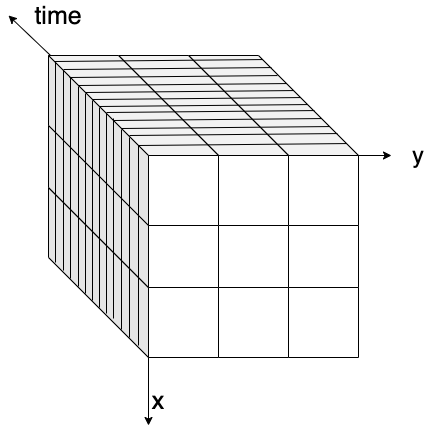

Data chunking with zarr and kerchunk.#
Context#
When dealing with large data files or collections, its often impossible to load all the data you want to analyze into a single computers RAM at once. This is a situation where the Pangeo ecosystem can help you a lot. Xarray offers the possibility to work lazily on data chunks, which means pieces of an entire dataset. By reading a dataset in chunks we can process our data piece by piece on a single computer and even on a distributed computing cluster using Dask (Cloud or HPC for instance).
How we will process these chunks in a parallel environment will be discussed in dask_introduction. The concept of chunk will be explained here.
When we process our data piece by piece, its easier to have our input or ouput data also saved in chunks. Zarr is the reference library in the Pangeo ecosystem to save our Xarray multidimentional datasets in chunks.
Zarr is not the only file format which uses chunk. We will also be using kerchunk library in this notebook to build a virtual chunked dataset based on NetCDF files, and show how it optimizes the access and analysis of large datasets.
The analysis is very similar to what we have done in previous episodes, however we will use data on a global coverage and not only on a small geographical area (e.g. Lombardia).
Data#
In this episode, we will be using Global Long Term Statistics (1999-2019) products provided by the Copernicus Global Land Service and access them through S3-comptabile storage (OpenStack Object Storage Swift) with a data catalog we have created and made publicly available.
Setup#
This episode uses the following main Python packages:
fsspec [fsspecDTeam18]
s3fs [S3FsDTeam16]
dask [DaskDTeam16]
kerchunk [KerchunkDTeam21]
geopandas [JdBF+20]
matplotlib [Hun07]
Please install these packages if not already available in your Python environment (see Setup page).
Packages#
In this episode, Python packages are imported when we start to use them. However, for best software practices, we recommend you to install and import all the necessary libraries at the top of your Jupyter notebook.
Global LTS#
In the previous episode, we used Long Term statistics time-series for the region of Lombardy e.g. a very small area. Now we would like to use the original dataset that has a global coverage. Let us first open a single file (for January 1999-2019) to understand how much larger the global dataset is.
import fsspec
import s3fs
import xarray as xr
fs = s3fs.S3FileSystem(anon=True,
client_kwargs={
'endpoint_url': 'https://object-store.cloud.muni.cz'
})
s3path = 's3://foss4g-data/CGLS_LTS_1999_2019/c_gls_NDVI-LTS_1999-2019-1221_GLOBE_VGT-PROBAV_V3.0.1.nc'
As shown in the Data discovery chapter, when we have several files to read at once, we need to use Xarray open_mfdataset instead of open_dataset. It takes a list in input, and not a single element. We can also use open_mfdataset with one file as done below, just as an introduction.
%%time
LTS = xr.open_mfdataset([fs.open(s3path)])
LTS
CPU times: user 578 ms, sys: 93 ms, total: 671 ms
Wall time: 2.62 s
<xarray.Dataset>
Dimensions: (lon: 40320, lat: 15680)
Coordinates:
* lon (lon) float64 -180.0 -180.0 -180.0 -180.0 ... 180.0 180.0 180.0
* lat (lat) float64 80.0 79.99 79.98 79.97 ... -59.97 -59.98 -59.99
Data variables:
crs |S1 ...
min (lat, lon) float32 dask.array<chunksize=(1207, 3102), meta=np.ndarray>
median (lat, lon) float32 dask.array<chunksize=(1207, 3102), meta=np.ndarray>
max (lat, lon) float32 dask.array<chunksize=(1207, 3102), meta=np.ndarray>
mean (lat, lon) float32 dask.array<chunksize=(1207, 3102), meta=np.ndarray>
stdev (lat, lon) float32 dask.array<chunksize=(1207, 3102), meta=np.ndarray>
nobs (lat, lon) float32 dask.array<chunksize=(1207, 3102), meta=np.ndarray>
Attributes: (12/19)
Conventions: CF-1.6
parent_identifier: urn:cgls:global:ndvi_stats_all
identifier: urn:cgls:global:ndvi_stats_all:NDVI-LTS_1999-2019-1...
long_name: Normalized Difference Vegetation Index
title: Normalized Difference Vegetation Index: Long Term S...
product_version: V3.0.1
... ...
source: Derived from EO satellite imagery
processing_mode: Offline
references: https://land.copernicus.eu/global/products/ndvi
copyright: Copernicus Service information 2021
archive_facility: VITO
history: 2021-03-01 - Processing line NDVI LTSUsing open_mfdataset automatically switch from Numpy Arrays to Dask Arrays as the data structure used by Xarray.
- You can try to open the same file with xr.open_dataset(fs.open(s3path))
- Compare the xarray output between open_mfdataset and open_dataset, what do you see as difference?
What is a chunk#
If you look carefully to LTS, each Data Variable is a dask.array with a chunk size of (15680, 40320). So basically accessing one data variable would load arrays of dimensions (15680, 40320) into the computers RAM. You can see this information and more details by clicking the icon as indicated in the image below.

When you open one or several netCDF files with open_mdfataset, by default, the chunks correspond to the entire size of the variable data array read from each file. When you need to analyze large files, a computers memory may not be sufficient anymore (see in this example, 2.36GiB for one chunk!).
This is where understanding and using chunking correctly comes into play.
Chunking is splitting a dataset into small pieces.
Original dataset is in one piece,

and we split it into several smaller pieces.

We split it into pieces so that we can process our data block by block or chunk by chunk.
In our case, for the moment, the dataset is composed of several files, so already several pieces (or just one in the example above), and Xarray just creates one chunk for each variable of each file.
Using chunks within a single file#
When we want to read one or several big files, or files containing large arrays (the above 2.36GiB per array is already quite big), we will almost certainly need chunks so that we can process arrays piece by piece.
This is usually done with Xarray using the chunks kwarg when opening a file with xr.open_dataset or with xr.open_mfdataset.
LTS = xr.open_dataset(fs.open(s3path), chunks={"lon": 40320 / 2, "lat": 15680 / 2})
LTS
/home/runner/micromamba/envs/bids23/lib/python3.11/site-packages/xarray/core/dataset.py:278: UserWarning: The specified chunks separate the stored chunks along dimension "lat" starting at index 7840. This could degrade performance. Instead, consider rechunking after loading.
warnings.warn(
/home/runner/micromamba/envs/bids23/lib/python3.11/site-packages/xarray/core/dataset.py:278: UserWarning: The specified chunks separate the stored chunks along dimension "lon" starting at index 20160. This could degrade performance. Instead, consider rechunking after loading.
warnings.warn(
<xarray.Dataset>
Dimensions: (lon: 40320, lat: 15680)
Coordinates:
* lon (lon) float64 -180.0 -180.0 -180.0 -180.0 ... 180.0 180.0 180.0
* lat (lat) float64 80.0 79.99 79.98 79.97 ... -59.97 -59.98 -59.99
Data variables:
crs |S1 ...
min (lat, lon) float32 dask.array<chunksize=(7840, 20160), meta=np.ndarray>
median (lat, lon) float32 dask.array<chunksize=(7840, 20160), meta=np.ndarray>
max (lat, lon) float32 dask.array<chunksize=(7840, 20160), meta=np.ndarray>
mean (lat, lon) float32 dask.array<chunksize=(7840, 20160), meta=np.ndarray>
stdev (lat, lon) float32 dask.array<chunksize=(7840, 20160), meta=np.ndarray>
nobs (lat, lon) float32 dask.array<chunksize=(7840, 20160), meta=np.ndarray>
Attributes: (12/19)
Conventions: CF-1.6
parent_identifier: urn:cgls:global:ndvi_stats_all
identifier: urn:cgls:global:ndvi_stats_all:NDVI-LTS_1999-2019-1...
long_name: Normalized Difference Vegetation Index
title: Normalized Difference Vegetation Index: Long Term S...
product_version: V3.0.1
... ...
source: Derived from EO satellite imagery
processing_mode: Offline
references: https://land.copernicus.eu/global/products/ndvi
copyright: Copernicus Service information 2021
archive_facility: VITO
history: 2021-03-01 - Processing line NDVI LTSIf you look into details of any variable in the representation above, youll see that each array is chunked into 4 pieces, 602.96 MiB each, which is already more manageable in memory.
Xarray Dataset and DataArray objects also have a chunk function. We can use it to change our dataset chunks size.
Lets try to chunk our data array LTS.nobs using this command.
As we would like to play with small sized array, we first select a subset of data as youve learned in xarray_introduction.
test = LTS.nobs.sel(lat=slice(80.,70.), lon=slice(70.,90))
test
<xarray.DataArray 'nobs' (lat: 1121, lon: 2240)>
dask.array<getitem, shape=(1121, 2240), dtype=float32, chunksize=(1121, 2240), chunktype=numpy.ndarray>
Coordinates:
* lon (lon) float64 70.0 70.01 70.02 70.03 ... 89.96 89.97 89.98 89.99
* lat (lat) float64 80.0 79.99 79.98 79.97 ... 70.03 70.02 70.01 70.0
Attributes:
standard_name: normalized_difference_vegetation_index number_of_observat...
grid_mapping: crs
units:
valid_range: [ 1 250]
cell_methods: area: meanThe test value has dimensions (1121, 2240). We will chunk it on 600x600 pieces using the following command.
test=test.chunk(600)
test
<xarray.DataArray 'nobs' (lat: 1121, lon: 2240)>
dask.array<rechunk-merge, shape=(1121, 2240), dtype=float32, chunksize=(600, 600), chunktype=numpy.ndarray>
Coordinates:
* lon (lon) float64 70.0 70.01 70.02 70.03 ... 89.96 89.97 89.98 89.99
* lat (lat) float64 80.0 79.99 79.98 79.97 ... 70.03 70.02 70.01 70.0
Attributes:
standard_name: normalized_difference_vegetation_index number_of_observat...
grid_mapping: crs
units:
valid_range: [ 1 250]
cell_methods: area: meanAs you can see in the above graphics we got 8 chunks. These 8 chunks are noted as (0,0) ..(0,3) (1,0),..(1,3) as you can see in the next visualisation.
Operations on a chunked dataset#
Lets have a look of our chunked test dataset backend representation.
test.data.visualize()
test.data is the backend array Python representation of Xarrays Data Array, Dask Array when using chunking, Numpy by default.
We will introduce Dask arrays and Dask graphs visualization in the next section dask_introduction.
Anyway, when applying chunk function you may have the impression that the chunks sizes just changes and everything will be fine.
However, as you can see in the graph visualization above, Xarray will actually have to fetch at least one entire initial chunk that was defined when opening the Dataset at first before rechunking at a smaller size or even selecting one value. This is true when applying any funtions on any values: Xarray will work by loading entire chunks.
You can imagine that it will not be very optimal if you load one file as an entire chunk, or if your initial chunks are too big (your Python Jupyter kernel may crash!), especially with large numbers of files and large files. Choosing an appropriate chunk size is really important and depends on your analysis.
You can find a really nice article by Dask team on how to chose the right chunk size here.
You can try to apply different ways for specifying chunk.
- chunks = 'auto' -> Xarray relies on Dask to use an ideal size according to the preferred chunk sizes
- chunks = -1 -> the entire array will be used as a single chunk
- chunks = "1MiB" -> Xarray seeks the size according to a specific memory target expressed in MiB
- chunks = {'lat'=-1, 'lon'= 1000} -> chunks of entire _lat_ dimension, but splitted every 1000 values on _lon_ dimension
- compare the resulting chunked data's shape, size, tasks, data.visualize..... What do you see?
So, why chunks?#
In the end, chunks are mandatory for accessing files or dataset that are bigger than a single computers memory. If all the data has to be accessed, it can be done sequentially e.g. chunks are processed one after the othe).
Moreover, chunks allow for distributed processing and so increased speed for your data analysis, as seen in the next episode.
Chunks and files#
Xarray chunking possibilities also relies on the underlying input or output file format used. Most modern file format allows to store a dataset or a single file using chunks. NetCDF4 uses chunks when storing a file on the disk through the use of HDF5. Any read of data in a NetCDF4 file will lead to the load of at least one chunk of this file. So when reading one of its chunk as defined in open_dataset call, Xarray will take advantage of native file chunking and wont have to read the entire file too.
Yet, it is really important to note that Xarray chunks and file chunks are not necessarily the same. It is however a really good idea to configure Xarray chunks so that they align well on input file format chunks (so ideally, Xarray chunks should contain one or several input file chunks).
Zarr storage format#
This brings to our next subjects Zarr and Kerchunk.
If we can have our original dataset already chunked and accessed in an optimized way according to its actual byte storage on disk, we wont need to load entire dataset every time, and our data anlayzis, even working on the entire dataset, will be greatly optimized.
Lets convert our input data into Zarr format so that we can learn what it is. We can keep the data as in DataArray or convert that into DataSet before storing them.
test.to_zarr('test_DataArray.zarr',mode='w')
<xarray.backends.zarr.ZarrStore at 0x7f6408e46f10>
test.to_dataset().to_zarr('test.zarr',mode='w')
<xarray.backends.zarr.ZarrStore at 0x7f6408db7bc0>
- You can try to explore the zarr file you just created using `ls -la test.zarr` and `ls -la test.zarr/nobs `
- You can explore zarr metadata file by `cat test.zarr/.zmetadata`
- Did you find the __chunks__ we defined previously in your zarr file?
!du -sh test.zarr/
92K test.zarr/
!ls -al test.zarr/nobs
total 48
drwxr-xr-x 2 runner docker 4096 Oct 31 15:26 .
drwxr-xr-x 5 runner docker 4096 Oct 31 15:26 ..
-rw-r--r-- 1 runner docker 341 Oct 31 15:26 .zarray
-rw-r--r-- 1 runner docker 304 Oct 31 15:26 .zattrs
-rw-r--r-- 1 runner docker 1482 Oct 31 15:26 0.0
-rw-r--r-- 1 runner docker 1482 Oct 31 15:26 0.1
-rw-r--r-- 1 runner docker 1482 Oct 31 15:26 0.2
-rw-r--r-- 1 runner docker 1482 Oct 31 15:26 0.3
-rw-r--r-- 1 runner docker 1482 Oct 31 15:26 1.0
-rw-r--r-- 1 runner docker 1482 Oct 31 15:26 1.1
-rw-r--r-- 1 runner docker 1482 Oct 31 15:26 1.2
-rw-r--r-- 1 runner docker 1482 Oct 31 15:26 1.3
!cat test.zarr/.zmetadata | head -n 30
{
"metadata": {
".zattrs": {},
".zgroup": {
"zarr_format": 2
},
"lat/.zarray": {
"chunks": [
1121
],
"compressor": {
"blocksize": 0,
"clevel": 5,
"cname": "lz4",
"id": "blosc",
"shuffle": 1
},
"dtype": "<f8",
"fill_value": "NaN",
"filters": null,
"order": "C",
"shape": [
1121
],
"zarr_format": 2
},
"lat/.zattrs": {
"DIMENSION_LABELS": "lat",
"_ARRAY_DIMENSIONS": [
"lat"
Zarr format main characteristics are the following:
Every chunk of a Zarr dataset is stored as a single file (see x.y files in
ls -al test.zarr/nobs)Each Data array in a Zarr dataset has a two unique files containing metadata:
.zattrs for dataset or dataarray general metadatas
.zarray indicating how the dataarray is chunked, and where to find them on disk or other storage.
Zarr can be considered as an Analysis Ready, cloud optimized data (ARCO) file format, discussed in data_discovery section.
Opening multiple NetCDF files and Kerchunk#
As shown in the Data discovery chapter, when we have several files to read at once, we need to use Xarray open_mfdataset. When using open_mfdataset with NetCDF files, each NetCDF file is considerd as one chunk by default as seen above.
When calling open_mfdataset, Xarray also needs to analyse each NetCDF file to get metadatas and tried to build a coherent dataset from them. Thus, it performs multiple operations, like concartenate the coordinate, checking compatibility, etc. This can be time consuming ,especially when dealing with object storage or you have more than thousands of files. And this has to be repeated every time, even if we use exactly the same set of input files for different analysis.
Kerchunk library can build virtual Zarr Dataset over NetCDF files which enables efficient access to the data from traditional file systems or cloud object storage.
And that is not the only optimisation kerchunk brings to pangeo ecosystem.
Exploiting native file chunks for reading datasets#
As already mentioned, many data formats (for instance HDF5, netCDF4 with HDF5 backend, geoTIFF) have chunk capabilities. Chunks are defined at the creation of each file. Lets call them native file chunks to distinguish that from Dask chunks. These native file chunks can be retrieved and used when opening and accessing the files. This will allow to significantly reduce the amount of IOs, bandwith, and memory usage when analyzing Data Variables.
kerchunk library can extract native file chunks layout and metadata from each file and combine them into one virtual Zarr dataset.
Extract chunk information#
We extract native file chunk information from each NetCDF file using kerchunk.hdf.
Lets start with a single file.
import kerchunk.hdf
We use kerchunk.hdf because our files are written in netCDF4 format which is based on HDF5 and SingleHdf5ToZarr to translate the metadata of one HDF5 file into Zarr metadata format. The parameter inline_threshold is an optimization and tells SingleHdf5ToZarr to include chunks smaller than this value directly in the output.
remote_filename = 'https://object-store.cloud.muni.cz/swift/v1/foss4g-data/CGLS_LTS_1999_2019/c_gls_NDVI-LTS_1999-2019-1221_GLOBE_VGT-PROBAV_V3.0.1.nc'
with fsspec.open(remote_filename) as inf:
h5chunks = kerchunk.hdf.SingleHdf5ToZarr(inf, remote_filename, inline_threshold=100)
chunk_info = h5chunks.translate()
Lets have a look at chunk_info. It is a Python dictionary so we can use pprint to print it nicely.
Content is a bit complicated, but its only metadata in Zarr format indicating whats in the original file, and where the chunks of the file are located (bytes offset).
from pprint import pprint
pprint(chunk_info)
Show code cell output
{'refs': {'.zattrs': '{"Conventions":"CF-1.6","archive_facility":"VITO","copyright":"Copernicus '
'Service information 2021","history":"2021-03-01 - '
'Processing line NDVI '
'LTS","identifier":"urn:cgls:global:ndvi_stats_all:NDVI-LTS_1999-2019-1221_GLOBE_V3.0.1","institution":"VITO '
'NV","long_name":"Normalized Difference Vegetation '
'Index","orbit_type":"LEO","parent_identifier":"urn:cgls:global:ndvi_stats_all","platform":"SPOT-4, '
'SPOT-5, '
'Proba-V","processing_level":"L4","processing_mode":"Offline","product_version":"V3.0.1","references":"https:\\/\\/land.copernicus.eu\\/global\\/products\\/ndvi","sensor":"VEGETATION-1, '
'VEGETATION-2, VEGETATION","source":"Derived from EO '
'satellite '
'imagery","time_coverage_end":"2019-12-31T23:59:59Z","time_coverage_start":"1999-01-01T00:00:00Z","title":"Normalized '
'Difference Vegetation Index: Long Term Statistics 1KM: '
'GLOBE 1999-2019 1221"}',
'.zgroup': '{"zarr_format":2}',
'crs/.zarray': '{"chunks":[],"compressor":null,"dtype":"|S1","fill_value":"IA==","filters":null,"order":"C","shape":[],"zarr_format":2}',
'crs/.zattrs': '{"GeoTransform":"-180.0000000000 0.0089285714 0.0 '
'80.0000000000 0.0 '
'-0.0089285714","_ARRAY_DIMENSIONS":[],"_CoordinateAxisTypes":"GeoX '
'GeoY","_CoordinateTransformType":"Projection","grid_mapping_name":"latitude_longitude","inverse_flattening":298.257223563,"long_name":"coordinate '
'reference '
'system","longitude_of_prime_meridian":0.0,"semi_major_axis":6378137.0,"spatial_ref":"GEOGCS[\\"WGS '
'84\\",DATUM[\\"WGS_1984\\",SPHEROID[\\"WGS '
'84\\",6378137,298.257223563,AUTHORITY[\\"EPSG\\",\\"7030\\"]],TOWGS84[0,0,0,0,0,0,0],AUTHORITY[\\"EPSG\\",\\"6326\\"]],PRIMEM[\\"Greenwich\\",0,AUTHORITY[\\"EPSG\\",\\"8901\\"]],UNIT[\\"degree\\",0.0174532925199433,AUTHORITY[\\"EPSG\\",\\"9108\\"]],AUTHORITY[\\"EPSG\\",\\"4326\\"]]"}',
'lat/.zarray': '{"chunks":[15680],"compressor":null,"dtype":"<f8","fill_value":null,"filters":null,"order":"C","shape":[15680],"zarr_format":2}',
'lat/.zattrs': '{"DIMENSION_LABELS":"lat","_ARRAY_DIMENSIONS":["lat"],"_CoordinateAxisType":"Lat","axis":"Y","long_name":"latitude","standard_name":"latitude","units":"degrees_north"}',
'lat/0': ['https://object-store.cloud.muni.cz/swift/v1/foss4g-data/CGLS_LTS_1999_2019/c_gls_NDVI-LTS_1999-2019-1221_GLOBE_VGT-PROBAV_V3.0.1.nc',
327056,
125440],
'lon/.zarray': '{"chunks":[40320],"compressor":null,"dtype":"<f8","fill_value":null,"filters":null,"order":"C","shape":[40320],"zarr_format":2}',
'lon/.zattrs': '{"DIMENSION_LABELS":"lon","_ARRAY_DIMENSIONS":["lon"],"_CoordinateAxisType":"Lon","axis":"X","long_name":"longitude","standard_name":"longitude","units":"degrees_east"}',
'lon/0': ['https://object-store.cloud.muni.cz/swift/v1/foss4g-data/CGLS_LTS_1999_2019/c_gls_NDVI-LTS_1999-2019-1221_GLOBE_VGT-PROBAV_V3.0.1.nc',
739,
322560],
'max/.zarray': '{"chunks":[1207,3102],"compressor":null,"dtype":"|u1","fill_value":255,"filters":[{"elementsize":1,"id":"shuffle"},{"id":"zlib","level":4}],"order":"C","shape":[15680,40320],"zarr_format":2}',
'max/.zattrs': '{"_ARRAY_DIMENSIONS":["lat","lon"],"add_offset":-0.08,"cell_methods":"area: '
'mean time: maximum","flag_meanings":"sea '
'no_data","flag_values":[254,255],"grid_mapping":"crs","long_name":"Maximum '
'Normalized Difference Vegetation Index over time '
'period","missing_value":255,"scale_factor":0.004,"standard_name":"normalized_difference_vegetation_index","units":" '
'","valid_range":[0,250]}',
'max/0.0': ['https://object-store.cloud.muni.cz/swift/v1/foss4g-data/CGLS_LTS_1999_2019/c_gls_NDVI-LTS_1999-2019-1221_GLOBE_VGT-PROBAV_V3.0.1.nc',
499786,
6640],
'max/0.1': ['https://object-store.cloud.muni.cz/swift/v1/foss4g-data/CGLS_LTS_1999_2019/c_gls_NDVI-LTS_1999-2019-1221_GLOBE_VGT-PROBAV_V3.0.1.nc',
540900,
10812],
'max/0.10': ['https://object-store.cloud.muni.cz/swift/v1/foss4g-data/CGLS_LTS_1999_2019/c_gls_NDVI-LTS_1999-2019-1221_GLOBE_VGT-PROBAV_V3.0.1.nc',
1175037,
10363],
'max/0.11': ['https://object-store.cloud.muni.cz/swift/v1/foss4g-data/CGLS_LTS_1999_2019/c_gls_NDVI-LTS_1999-2019-1221_GLOBE_VGT-PROBAV_V3.0.1.nc',
1234101,
12162],
'max/0.12': ['https://object-store.cloud.muni.cz/swift/v1/foss4g-data/CGLS_LTS_1999_2019/c_gls_NDVI-LTS_1999-2019-1221_GLOBE_VGT-PROBAV_V3.0.1.nc',
20377881,
8846],
'max/0.2': ['https://object-store.cloud.muni.cz/swift/v1/foss4g-data/CGLS_LTS_1999_2019/c_gls_NDVI-LTS_1999-2019-1221_GLOBE_VGT-PROBAV_V3.0.1.nc',
605158,
21674],
'max/0.3': ['https://object-store.cloud.muni.cz/swift/v1/foss4g-data/CGLS_LTS_1999_2019/c_gls_NDVI-LTS_1999-2019-1221_GLOBE_VGT-PROBAV_V3.0.1.nc',
664009,
28269],
'max/0.4': ['https://object-store.cloud.muni.cz/swift/v1/foss4g-data/CGLS_LTS_1999_2019/c_gls_NDVI-LTS_1999-2019-1221_GLOBE_VGT-PROBAV_V3.0.1.nc',
4701770,
15396],
'max/0.5': ['https://object-store.cloud.muni.cz/swift/v1/foss4g-data/CGLS_LTS_1999_2019/c_gls_NDVI-LTS_1999-2019-1221_GLOBE_VGT-PROBAV_V3.0.1.nc',
7493819,
15891],
'max/0.6': ['https://object-store.cloud.muni.cz/swift/v1/foss4g-data/CGLS_LTS_1999_2019/c_gls_NDVI-LTS_1999-2019-1221_GLOBE_VGT-PROBAV_V3.0.1.nc',
895061,
3875],
'max/0.7': ['https://object-store.cloud.muni.cz/swift/v1/foss4g-data/CGLS_LTS_1999_2019/c_gls_NDVI-LTS_1999-2019-1221_GLOBE_VGT-PROBAV_V3.0.1.nc',
3152885,
12812],
'max/0.8': ['https://object-store.cloud.muni.cz/swift/v1/foss4g-data/CGLS_LTS_1999_2019/c_gls_NDVI-LTS_1999-2019-1221_GLOBE_VGT-PROBAV_V3.0.1.nc',
1000598,
14646],
'max/0.9': ['https://object-store.cloud.muni.cz/swift/v1/foss4g-data/CGLS_LTS_1999_2019/c_gls_NDVI-LTS_1999-2019-1221_GLOBE_VGT-PROBAV_V3.0.1.nc',
1062796,
16409],
'max/1.0': ['https://object-store.cloud.muni.cz/swift/v1/foss4g-data/CGLS_LTS_1999_2019/c_gls_NDVI-LTS_1999-2019-1221_GLOBE_VGT-PROBAV_V3.0.1.nc',
35830966,
492511],
'max/1.1': ['https://object-store.cloud.muni.cz/swift/v1/foss4g-data/CGLS_LTS_1999_2019/c_gls_NDVI-LTS_1999-2019-1221_GLOBE_VGT-PROBAV_V3.0.1.nc',
36499566,
1036568],
'max/1.10': ['https://object-store.cloud.muni.cz/swift/v1/foss4g-data/CGLS_LTS_1999_2019/c_gls_NDVI-LTS_1999-2019-1221_GLOBE_VGT-PROBAV_V3.0.1.nc',
137513676,
1202322],
'max/1.11': ['https://object-store.cloud.muni.cz/swift/v1/foss4g-data/CGLS_LTS_1999_2019/c_gls_NDVI-LTS_1999-2019-1221_GLOBE_VGT-PROBAV_V3.0.1.nc',
27658005,
950150],
'max/1.12': ['https://object-store.cloud.muni.cz/swift/v1/foss4g-data/CGLS_LTS_1999_2019/c_gls_NDVI-LTS_1999-2019-1221_GLOBE_VGT-PROBAV_V3.0.1.nc',
132473021,
472222],
'max/1.2': ['https://object-store.cloud.muni.cz/swift/v1/foss4g-data/CGLS_LTS_1999_2019/c_gls_NDVI-LTS_1999-2019-1221_GLOBE_VGT-PROBAV_V3.0.1.nc',
50638410,
1094482],
'max/1.3': ['https://object-store.cloud.muni.cz/swift/v1/foss4g-data/CGLS_LTS_1999_2019/c_gls_NDVI-LTS_1999-2019-1221_GLOBE_VGT-PROBAV_V3.0.1.nc',
9077485,
412426],
'max/1.4': ['https://object-store.cloud.muni.cz/swift/v1/foss4g-data/CGLS_LTS_1999_2019/c_gls_NDVI-LTS_1999-2019-1221_GLOBE_VGT-PROBAV_V3.0.1.nc',
4447268,
222713],
'max/1.5': ['https://object-store.cloud.muni.cz/swift/v1/foss4g-data/CGLS_LTS_1999_2019/c_gls_NDVI-LTS_1999-2019-1221_GLOBE_VGT-PROBAV_V3.0.1.nc',
1274238,
40231],
'max/1.6': ['https://object-store.cloud.muni.cz/swift/v1/foss4g-data/CGLS_LTS_1999_2019/c_gls_NDVI-LTS_1999-2019-1221_GLOBE_VGT-PROBAV_V3.0.1.nc',
13855391,
518447],
'max/1.7': ['https://object-store.cloud.muni.cz/swift/v1/foss4g-data/CGLS_LTS_1999_2019/c_gls_NDVI-LTS_1999-2019-1221_GLOBE_VGT-PROBAV_V3.0.1.nc',
20386727,
1304339],
'max/1.8': ['https://object-store.cloud.muni.cz/swift/v1/foss4g-data/CGLS_LTS_1999_2019/c_gls_NDVI-LTS_1999-2019-1221_GLOBE_VGT-PROBAV_V3.0.1.nc',
24383492,
1123670],
'max/1.9': ['https://object-store.cloud.muni.cz/swift/v1/foss4g-data/CGLS_LTS_1999_2019/c_gls_NDVI-LTS_1999-2019-1221_GLOBE_VGT-PROBAV_V3.0.1.nc',
28647908,
1125099],
'max/10.0': ['https://object-store.cloud.muni.cz/swift/v1/foss4g-data/CGLS_LTS_1999_2019/c_gls_NDVI-LTS_1999-2019-1221_GLOBE_VGT-PROBAV_V3.0.1.nc',
445291707,
3703],
'max/10.1': ['https://object-store.cloud.muni.cz/swift/v1/foss4g-data/CGLS_LTS_1999_2019/c_gls_NDVI-LTS_1999-2019-1221_GLOBE_VGT-PROBAV_V3.0.1.nc',
460594486,
3651],
'max/10.10': ['https://object-store.cloud.muni.cz/swift/v1/foss4g-data/CGLS_LTS_1999_2019/c_gls_NDVI-LTS_1999-2019-1221_GLOBE_VGT-PROBAV_V3.0.1.nc',
566891614,
576445],
'max/10.11': ['https://object-store.cloud.muni.cz/swift/v1/foss4g-data/CGLS_LTS_1999_2019/c_gls_NDVI-LTS_1999-2019-1221_GLOBE_VGT-PROBAV_V3.0.1.nc',
576067035,
1929982],
'max/10.12': ['https://object-store.cloud.muni.cz/swift/v1/foss4g-data/CGLS_LTS_1999_2019/c_gls_NDVI-LTS_1999-2019-1221_GLOBE_VGT-PROBAV_V3.0.1.nc',
2350535,
112948],
'max/10.2': ['https://object-store.cloud.muni.cz/swift/v1/foss4g-data/CGLS_LTS_1999_2019/c_gls_NDVI-LTS_1999-2019-1221_GLOBE_VGT-PROBAV_V3.0.1.nc',
394458465,
3651],
'max/10.3': ['https://object-store.cloud.muni.cz/swift/v1/foss4g-data/CGLS_LTS_1999_2019/c_gls_NDVI-LTS_1999-2019-1221_GLOBE_VGT-PROBAV_V3.0.1.nc',
103537043,
350760],
'max/10.4': ['https://object-store.cloud.muni.cz/swift/v1/foss4g-data/CGLS_LTS_1999_2019/c_gls_NDVI-LTS_1999-2019-1221_GLOBE_VGT-PROBAV_V3.0.1.nc',
555189684,
1863993],
'max/10.5': ['https://object-store.cloud.muni.cz/swift/v1/foss4g-data/CGLS_LTS_1999_2019/c_gls_NDVI-LTS_1999-2019-1221_GLOBE_VGT-PROBAV_V3.0.1.nc',
316813534,
3651],
'max/10.6': ['https://object-store.cloud.muni.cz/swift/v1/foss4g-data/CGLS_LTS_1999_2019/c_gls_NDVI-LTS_1999-2019-1221_GLOBE_VGT-PROBAV_V3.0.1.nc',
381856489,
3728],
'max/10.7': ['https://object-store.cloud.muni.cz/swift/v1/foss4g-data/CGLS_LTS_1999_2019/c_gls_NDVI-LTS_1999-2019-1221_GLOBE_VGT-PROBAV_V3.0.1.nc',
562385454,
845393],
'max/10.8': ['https://object-store.cloud.muni.cz/swift/v1/foss4g-data/CGLS_LTS_1999_2019/c_gls_NDVI-LTS_1999-2019-1221_GLOBE_VGT-PROBAV_V3.0.1.nc',
478422717,
3651],
'max/10.9': ['https://object-store.cloud.muni.cz/swift/v1/foss4g-data/CGLS_LTS_1999_2019/c_gls_NDVI-LTS_1999-2019-1221_GLOBE_VGT-PROBAV_V3.0.1.nc',
328835679,
3689],
'max/11.0': ['https://object-store.cloud.muni.cz/swift/v1/foss4g-data/CGLS_LTS_1999_2019/c_gls_NDVI-LTS_1999-2019-1221_GLOBE_VGT-PROBAV_V3.0.1.nc',
445295410,
5582],
'max/11.1': ['https://object-store.cloud.muni.cz/swift/v1/foss4g-data/CGLS_LTS_1999_2019/c_gls_NDVI-LTS_1999-2019-1221_GLOBE_VGT-PROBAV_V3.0.1.nc',
445304643,
3651],
'max/11.10': ['https://object-store.cloud.muni.cz/swift/v1/foss4g-data/CGLS_LTS_1999_2019/c_gls_NDVI-LTS_1999-2019-1221_GLOBE_VGT-PROBAV_V3.0.1.nc',
365736619,
3651],
'max/11.11': ['https://object-store.cloud.muni.cz/swift/v1/foss4g-data/CGLS_LTS_1999_2019/c_gls_NDVI-LTS_1999-2019-1221_GLOBE_VGT-PROBAV_V3.0.1.nc',
34546480,
98961],
'max/11.12': ['https://object-store.cloud.muni.cz/swift/v1/foss4g-data/CGLS_LTS_1999_2019/c_gls_NDVI-LTS_1999-2019-1221_GLOBE_VGT-PROBAV_V3.0.1.nc',
448472534,
274520],
'max/11.2': ['https://object-store.cloud.muni.cz/swift/v1/foss4g-data/CGLS_LTS_1999_2019/c_gls_NDVI-LTS_1999-2019-1221_GLOBE_VGT-PROBAV_V3.0.1.nc',
191701688,
3651],
'max/11.3': ['https://object-store.cloud.muni.cz/swift/v1/foss4g-data/CGLS_LTS_1999_2019/c_gls_NDVI-LTS_1999-2019-1221_GLOBE_VGT-PROBAV_V3.0.1.nc',
575341041,
619059],
'max/11.4': ['https://object-store.cloud.muni.cz/swift/v1/foss4g-data/CGLS_LTS_1999_2019/c_gls_NDVI-LTS_1999-2019-1221_GLOBE_VGT-PROBAV_V3.0.1.nc',
494466123,
433775],
'max/11.5': ['https://object-store.cloud.muni.cz/swift/v1/foss4g-data/CGLS_LTS_1999_2019/c_gls_NDVI-LTS_1999-2019-1221_GLOBE_VGT-PROBAV_V3.0.1.nc',
375029882,
3651],
'max/11.6': ['https://object-store.cloud.muni.cz/swift/v1/foss4g-data/CGLS_LTS_1999_2019/c_gls_NDVI-LTS_1999-2019-1221_GLOBE_VGT-PROBAV_V3.0.1.nc',
89255789,
3689],
'max/11.7': ['https://object-store.cloud.muni.cz/swift/v1/foss4g-data/CGLS_LTS_1999_2019/c_gls_NDVI-LTS_1999-2019-1221_GLOBE_VGT-PROBAV_V3.0.1.nc',
360679472,
3786],
'max/11.8': ['https://object-store.cloud.muni.cz/swift/v1/foss4g-data/CGLS_LTS_1999_2019/c_gls_NDVI-LTS_1999-2019-1221_GLOBE_VGT-PROBAV_V3.0.1.nc',
191684046,
4492],
'max/11.9': ['https://object-store.cloud.muni.cz/swift/v1/foss4g-data/CGLS_LTS_1999_2019/c_gls_NDVI-LTS_1999-2019-1221_GLOBE_VGT-PROBAV_V3.0.1.nc',
316786986,
4318],
'max/12.0': ['https://object-store.cloud.muni.cz/swift/v1/foss4g-data/CGLS_LTS_1999_2019/c_gls_NDVI-LTS_1999-2019-1221_GLOBE_VGT-PROBAV_V3.0.1.nc',
451690645,
3654],
'max/12.1': ['https://object-store.cloud.muni.cz/swift/v1/foss4g-data/CGLS_LTS_1999_2019/c_gls_NDVI-LTS_1999-2019-1221_GLOBE_VGT-PROBAV_V3.0.1.nc',
394462116,
3654],
'max/12.10': ['https://object-store.cloud.muni.cz/swift/v1/foss4g-data/CGLS_LTS_1999_2019/c_gls_NDVI-LTS_1999-2019-1221_GLOBE_VGT-PROBAV_V3.0.1.nc',
365754914,
3654],
'max/12.11': ['https://object-store.cloud.muni.cz/swift/v1/foss4g-data/CGLS_LTS_1999_2019/c_gls_NDVI-LTS_1999-2019-1221_GLOBE_VGT-PROBAV_V3.0.1.nc',
34645441,
3654],
'max/12.12': ['https://object-store.cloud.muni.cz/swift/v1/foss4g-data/CGLS_LTS_1999_2019/c_gls_NDVI-LTS_1999-2019-1221_GLOBE_VGT-PROBAV_V3.0.1.nc',
34649095,
6557],
'max/12.2': ['https://object-store.cloud.muni.cz/swift/v1/foss4g-data/CGLS_LTS_1999_2019/c_gls_NDVI-LTS_1999-2019-1221_GLOBE_VGT-PROBAV_V3.0.1.nc',
176511330,
3654],
'max/12.3': ['https://object-store.cloud.muni.cz/swift/v1/foss4g-data/CGLS_LTS_1999_2019/c_gls_NDVI-LTS_1999-2019-1221_GLOBE_VGT-PROBAV_V3.0.1.nc',
566373272,
301939],
'max/12.4': ['https://object-store.cloud.muni.cz/swift/v1/foss4g-data/CGLS_LTS_1999_2019/c_gls_NDVI-LTS_1999-2019-1221_GLOBE_VGT-PROBAV_V3.0.1.nc',
42258295,
102286],
'max/12.5': ['https://object-store.cloud.muni.cz/swift/v1/foss4g-data/CGLS_LTS_1999_2019/c_gls_NDVI-LTS_1999-2019-1221_GLOBE_VGT-PROBAV_V3.0.1.nc',
462407603,
10710],
'max/12.6': ['https://object-store.cloud.muni.cz/swift/v1/foss4g-data/CGLS_LTS_1999_2019/c_gls_NDVI-LTS_1999-2019-1221_GLOBE_VGT-PROBAV_V3.0.1.nc',
178805468,
3690],
'max/12.7': ['https://object-store.cloud.muni.cz/swift/v1/foss4g-data/CGLS_LTS_1999_2019/c_gls_NDVI-LTS_1999-2019-1221_GLOBE_VGT-PROBAV_V3.0.1.nc',
460606353,
3654],
'max/12.8': ['https://object-store.cloud.muni.cz/swift/v1/foss4g-data/CGLS_LTS_1999_2019/c_gls_NDVI-LTS_1999-2019-1221_GLOBE_VGT-PROBAV_V3.0.1.nc',
328831150,
4026],
'max/12.9': ['https://object-store.cloud.muni.cz/swift/v1/foss4g-data/CGLS_LTS_1999_2019/c_gls_NDVI-LTS_1999-2019-1221_GLOBE_VGT-PROBAV_V3.0.1.nc',
527377501,
4474],
'max/2.0': ['https://object-store.cloud.muni.cz/swift/v1/foss4g-data/CGLS_LTS_1999_2019/c_gls_NDVI-LTS_1999-2019-1221_GLOBE_VGT-PROBAV_V3.0.1.nc',
71792815,
162645],
'max/2.1': ['https://object-store.cloud.muni.cz/swift/v1/foss4g-data/CGLS_LTS_1999_2019/c_gls_NDVI-LTS_1999-2019-1221_GLOBE_VGT-PROBAV_V3.0.1.nc',
33834207,
712273],
'max/2.10': ['https://object-store.cloud.muni.cz/swift/v1/foss4g-data/CGLS_LTS_1999_2019/c_gls_NDVI-LTS_1999-2019-1221_GLOBE_VGT-PROBAV_V3.0.1.nc',
224831178,
2982934],
'max/2.11': ['https://object-store.cloud.muni.cz/swift/v1/foss4g-data/CGLS_LTS_1999_2019/c_gls_NDVI-LTS_1999-2019-1221_GLOBE_VGT-PROBAV_V3.0.1.nc',
142638965,
1729719],
'max/2.12': ['https://object-store.cloud.muni.cz/swift/v1/foss4g-data/CGLS_LTS_1999_2019/c_gls_NDVI-LTS_1999-2019-1221_GLOBE_VGT-PROBAV_V3.0.1.nc',
23998431,
355924],
'max/2.2': ['https://object-store.cloud.muni.cz/swift/v1/foss4g-data/CGLS_LTS_1999_2019/c_gls_NDVI-LTS_1999-2019-1221_GLOBE_VGT-PROBAV_V3.0.1.nc',
156219793,
3255872],
'max/2.3': ['https://object-store.cloud.muni.cz/swift/v1/foss4g-data/CGLS_LTS_1999_2019/c_gls_NDVI-LTS_1999-2019-1221_GLOBE_VGT-PROBAV_V3.0.1.nc',
172635488,
2611039],
'max/2.4': ['https://object-store.cloud.muni.cz/swift/v1/foss4g-data/CGLS_LTS_1999_2019/c_gls_NDVI-LTS_1999-2019-1221_GLOBE_VGT-PROBAV_V3.0.1.nc',
70055979,
1163918],
'max/2.5': ['https://object-store.cloud.muni.cz/swift/v1/foss4g-data/CGLS_LTS_1999_2019/c_gls_NDVI-LTS_1999-2019-1221_GLOBE_VGT-PROBAV_V3.0.1.nc',
44513880,
3651],
'max/2.6': ['https://object-store.cloud.muni.cz/swift/v1/foss4g-data/CGLS_LTS_1999_2019/c_gls_NDVI-LTS_1999-2019-1221_GLOBE_VGT-PROBAV_V3.0.1.nc',
182286763,
1389388],
'max/2.7': ['https://object-store.cloud.muni.cz/swift/v1/foss4g-data/CGLS_LTS_1999_2019/c_gls_NDVI-LTS_1999-2019-1221_GLOBE_VGT-PROBAV_V3.0.1.nc',
204290778,
3124385],
'max/2.8': ['https://object-store.cloud.muni.cz/swift/v1/foss4g-data/CGLS_LTS_1999_2019/c_gls_NDVI-LTS_1999-2019-1221_GLOBE_VGT-PROBAV_V3.0.1.nc',
104818177,
3087312],
'max/2.9': ['https://object-store.cloud.muni.cz/swift/v1/foss4g-data/CGLS_LTS_1999_2019/c_gls_NDVI-LTS_1999-2019-1221_GLOBE_VGT-PROBAV_V3.0.1.nc',
133142311,
2745108],
'max/3.0': ['https://object-store.cloud.muni.cz/swift/v1/foss4g-data/CGLS_LTS_1999_2019/c_gls_NDVI-LTS_1999-2019-1221_GLOBE_VGT-PROBAV_V3.0.1.nc',
55486774,
3651],
'max/3.1': ['https://object-store.cloud.muni.cz/swift/v1/foss4g-data/CGLS_LTS_1999_2019/c_gls_NDVI-LTS_1999-2019-1221_GLOBE_VGT-PROBAV_V3.0.1.nc',
1040847,
3651],
'max/3.10': ['https://object-store.cloud.muni.cz/swift/v1/foss4g-data/CGLS_LTS_1999_2019/c_gls_NDVI-LTS_1999-2019-1221_GLOBE_VGT-PROBAV_V3.0.1.nc',
309084564,
2220161],
'max/3.11': ['https://object-store.cloud.muni.cz/swift/v1/foss4g-data/CGLS_LTS_1999_2019/c_gls_NDVI-LTS_1999-2019-1221_GLOBE_VGT-PROBAV_V3.0.1.nc',
135887419,
1122750],
'max/3.12': ['https://object-store.cloud.muni.cz/swift/v1/foss4g-data/CGLS_LTS_1999_2019/c_gls_NDVI-LTS_1999-2019-1221_GLOBE_VGT-PROBAV_V3.0.1.nc',
204275854,
6041],
'max/3.2': ['https://object-store.cloud.muni.cz/swift/v1/foss4g-data/CGLS_LTS_1999_2019/c_gls_NDVI-LTS_1999-2019-1221_GLOBE_VGT-PROBAV_V3.0.1.nc',
244495149,
2973636],
'max/3.3': ['https://object-store.cloud.muni.cz/swift/v1/foss4g-data/CGLS_LTS_1999_2019/c_gls_NDVI-LTS_1999-2019-1221_GLOBE_VGT-PROBAV_V3.0.1.nc',
257312473,
2674047],
'max/3.4': ['https://object-store.cloud.muni.cz/swift/v1/foss4g-data/CGLS_LTS_1999_2019/c_gls_NDVI-LTS_1999-2019-1221_GLOBE_VGT-PROBAV_V3.0.1.nc',
45811902,
266023],
'max/3.5': ['https://object-store.cloud.muni.cz/swift/v1/foss4g-data/CGLS_LTS_1999_2019/c_gls_NDVI-LTS_1999-2019-1221_GLOBE_VGT-PROBAV_V3.0.1.nc',
163474368,
8096],
'max/3.6': ['https://object-store.cloud.muni.cz/swift/v1/foss4g-data/CGLS_LTS_1999_2019/c_gls_NDVI-LTS_1999-2019-1221_GLOBE_VGT-PROBAV_V3.0.1.nc',
262380377,
1557520],
'max/3.7': ['https://object-store.cloud.muni.cz/swift/v1/foss4g-data/CGLS_LTS_1999_2019/c_gls_NDVI-LTS_1999-2019-1221_GLOBE_VGT-PROBAV_V3.0.1.nc',
273158684,
2312265],
'max/3.8': ['https://object-store.cloud.muni.cz/swift/v1/foss4g-data/CGLS_LTS_1999_2019/c_gls_NDVI-LTS_1999-2019-1221_GLOBE_VGT-PROBAV_V3.0.1.nc',
279805679,
2477363],
'max/3.9': ['https://object-store.cloud.muni.cz/swift/v1/foss4g-data/CGLS_LTS_1999_2019/c_gls_NDVI-LTS_1999-2019-1221_GLOBE_VGT-PROBAV_V3.0.1.nc',
295189328,
2301312],
'max/4.0': ['https://object-store.cloud.muni.cz/swift/v1/foss4g-data/CGLS_LTS_1999_2019/c_gls_NDVI-LTS_1999-2019-1221_GLOBE_VGT-PROBAV_V3.0.1.nc',
98946208,
3684],
'max/4.1': ['https://object-store.cloud.muni.cz/swift/v1/foss4g-data/CGLS_LTS_1999_2019/c_gls_NDVI-LTS_1999-2019-1221_GLOBE_VGT-PROBAV_V3.0.1.nc',
120338454,
3651],
'max/4.10': ['https://object-store.cloud.muni.cz/swift/v1/foss4g-data/CGLS_LTS_1999_2019/c_gls_NDVI-LTS_1999-2019-1221_GLOBE_VGT-PROBAV_V3.0.1.nc',
368515628,
2925769],
'max/4.11': ['https://object-store.cloud.muni.cz/swift/v1/foss4g-data/CGLS_LTS_1999_2019/c_gls_NDVI-LTS_1999-2019-1221_GLOBE_VGT-PROBAV_V3.0.1.nc',
202919827,
344933],
'max/4.12': ['https://object-store.cloud.muni.cz/swift/v1/foss4g-data/CGLS_LTS_1999_2019/c_gls_NDVI-LTS_1999-2019-1221_GLOBE_VGT-PROBAV_V3.0.1.nc',
213974091,
5764],
'max/4.2': ['https://object-store.cloud.muni.cz/swift/v1/foss4g-data/CGLS_LTS_1999_2019/c_gls_NDVI-LTS_1999-2019-1221_GLOBE_VGT-PROBAV_V3.0.1.nc',
314596590,
2181246],
'max/4.3': ['https://object-store.cloud.muni.cz/swift/v1/foss4g-data/CGLS_LTS_1999_2019/c_gls_NDVI-LTS_1999-2019-1221_GLOBE_VGT-PROBAV_V3.0.1.nc',
318682536,
1493664],
'max/4.4': ['https://object-store.cloud.muni.cz/swift/v1/foss4g-data/CGLS_LTS_1999_2019/c_gls_NDVI-LTS_1999-2019-1221_GLOBE_VGT-PROBAV_V3.0.1.nc',
97441919,
3892],
'max/4.5': ['https://object-store.cloud.muni.cz/swift/v1/foss4g-data/CGLS_LTS_1999_2019/c_gls_NDVI-LTS_1999-2019-1221_GLOBE_VGT-PROBAV_V3.0.1.nc',
271016263,
17276],
'max/4.6': ['https://object-store.cloud.muni.cz/swift/v1/foss4g-data/CGLS_LTS_1999_2019/c_gls_NDVI-LTS_1999-2019-1221_GLOBE_VGT-PROBAV_V3.0.1.nc',
62745823,
1688259],
'max/4.7': ['https://object-store.cloud.muni.cz/swift/v1/foss4g-data/CGLS_LTS_1999_2019/c_gls_NDVI-LTS_1999-2019-1221_GLOBE_VGT-PROBAV_V3.0.1.nc',
325325302,
1391285],
'max/4.8': ['https://object-store.cloud.muni.cz/swift/v1/foss4g-data/CGLS_LTS_1999_2019/c_gls_NDVI-LTS_1999-2019-1221_GLOBE_VGT-PROBAV_V3.0.1.nc',
335274307,
2433825],
'max/4.9': ['https://object-store.cloud.muni.cz/swift/v1/foss4g-data/CGLS_LTS_1999_2019/c_gls_NDVI-LTS_1999-2019-1221_GLOBE_VGT-PROBAV_V3.0.1.nc',
339416745,
3006584],
'max/5.0': ['https://object-store.cloud.muni.cz/swift/v1/foss4g-data/CGLS_LTS_1999_2019/c_gls_NDVI-LTS_1999-2019-1221_GLOBE_VGT-PROBAV_V3.0.1.nc',
182247924,
25012],
'max/5.1': ['https://object-store.cloud.muni.cz/swift/v1/foss4g-data/CGLS_LTS_1999_2019/c_gls_NDVI-LTS_1999-2019-1221_GLOBE_VGT-PROBAV_V3.0.1.nc',
55304037,
3651],
'max/5.10': ['https://object-store.cloud.muni.cz/swift/v1/foss4g-data/CGLS_LTS_1999_2019/c_gls_NDVI-LTS_1999-2019-1221_GLOBE_VGT-PROBAV_V3.0.1.nc',
401596422,
1723404],
'max/5.11': ['https://object-store.cloud.muni.cz/swift/v1/foss4g-data/CGLS_LTS_1999_2019/c_gls_NDVI-LTS_1999-2019-1221_GLOBE_VGT-PROBAV_V3.0.1.nc',
32094787,
4628],
'max/5.12': ['https://object-store.cloud.muni.cz/swift/v1/foss4g-data/CGLS_LTS_1999_2019/c_gls_NDVI-LTS_1999-2019-1221_GLOBE_VGT-PROBAV_V3.0.1.nc',
100267000,
5809],
'max/5.2': ['https://object-store.cloud.muni.cz/swift/v1/foss4g-data/CGLS_LTS_1999_2019/c_gls_NDVI-LTS_1999-2019-1221_GLOBE_VGT-PROBAV_V3.0.1.nc',
144368684,
951099],
'max/5.3': ['https://object-store.cloud.muni.cz/swift/v1/foss4g-data/CGLS_LTS_1999_2019/c_gls_NDVI-LTS_1999-2019-1221_GLOBE_VGT-PROBAV_V3.0.1.nc',
286497143,
632820],
'max/5.4': ['https://object-store.cloud.muni.cz/swift/v1/foss4g-data/CGLS_LTS_1999_2019/c_gls_NDVI-LTS_1999-2019-1221_GLOBE_VGT-PROBAV_V3.0.1.nc',
249618839,
26413],
'max/5.5': ['https://object-store.cloud.muni.cz/swift/v1/foss4g-data/CGLS_LTS_1999_2019/c_gls_NDVI-LTS_1999-2019-1221_GLOBE_VGT-PROBAV_V3.0.1.nc',
132945243,
196513],
'max/5.6': ['https://object-store.cloud.muni.cz/swift/v1/foss4g-data/CGLS_LTS_1999_2019/c_gls_NDVI-LTS_1999-2019-1221_GLOBE_VGT-PROBAV_V3.0.1.nc',
302983385,
1691930],
'max/5.7': ['https://object-store.cloud.muni.cz/swift/v1/foss4g-data/CGLS_LTS_1999_2019/c_gls_NDVI-LTS_1999-2019-1221_GLOBE_VGT-PROBAV_V3.0.1.nc',
378523698,
1550732],
'max/5.8': ['https://object-store.cloud.muni.cz/swift/v1/foss4g-data/CGLS_LTS_1999_2019/c_gls_NDVI-LTS_1999-2019-1221_GLOBE_VGT-PROBAV_V3.0.1.nc',
384940305,
1070323],
'max/5.9': ['https://object-store.cloud.muni.cz/swift/v1/foss4g-data/CGLS_LTS_1999_2019/c_gls_NDVI-LTS_1999-2019-1221_GLOBE_VGT-PROBAV_V3.0.1.nc',
396866095,
2401344],
'max/6.0': ['https://object-store.cloud.muni.cz/swift/v1/foss4g-data/CGLS_LTS_1999_2019/c_gls_NDVI-LTS_1999-2019-1221_GLOBE_VGT-PROBAV_V3.0.1.nc',
111779221,
3860],
'max/6.1': ['https://object-store.cloud.muni.cz/swift/v1/foss4g-data/CGLS_LTS_1999_2019/c_gls_NDVI-LTS_1999-2019-1221_GLOBE_VGT-PROBAV_V3.0.1.nc',
17860365,
3651],
'max/6.10': ['https://object-store.cloud.muni.cz/swift/v1/foss4g-data/CGLS_LTS_1999_2019/c_gls_NDVI-LTS_1999-2019-1221_GLOBE_VGT-PROBAV_V3.0.1.nc',
430596101,
869469],
'max/6.11': ['https://object-store.cloud.muni.cz/swift/v1/foss4g-data/CGLS_LTS_1999_2019/c_gls_NDVI-LTS_1999-2019-1221_GLOBE_VGT-PROBAV_V3.0.1.nc',
3165697,
82202],
'max/6.12': ['https://object-store.cloud.muni.cz/swift/v1/foss4g-data/CGLS_LTS_1999_2019/c_gls_NDVI-LTS_1999-2019-1221_GLOBE_VGT-PROBAV_V3.0.1.nc',
141309521,
8013],
'max/6.2': ['https://object-store.cloud.muni.cz/swift/v1/foss4g-data/CGLS_LTS_1999_2019/c_gls_NDVI-LTS_1999-2019-1221_GLOBE_VGT-PROBAV_V3.0.1.nc',
167152254,
3683],
'max/6.3': ['https://object-store.cloud.muni.cz/swift/v1/foss4g-data/CGLS_LTS_1999_2019/c_gls_NDVI-LTS_1999-2019-1221_GLOBE_VGT-PROBAV_V3.0.1.nc',
212421302,
906727],
'max/6.4': ['https://object-store.cloud.muni.cz/swift/v1/foss4g-data/CGLS_LTS_1999_2019/c_gls_NDVI-LTS_1999-2019-1221_GLOBE_VGT-PROBAV_V3.0.1.nc',
342423329,
742233],
'max/6.5': ['https://object-store.cloud.muni.cz/swift/v1/foss4g-data/CGLS_LTS_1999_2019/c_gls_NDVI-LTS_1999-2019-1221_GLOBE_VGT-PROBAV_V3.0.1.nc',
129949565,
139997],
'max/6.6': ['https://object-store.cloud.muni.cz/swift/v1/foss4g-data/CGLS_LTS_1999_2019/c_gls_NDVI-LTS_1999-2019-1221_GLOBE_VGT-PROBAV_V3.0.1.nc',
411228857,
2684846],
'max/6.7': ['https://object-store.cloud.muni.cz/swift/v1/foss4g-data/CGLS_LTS_1999_2019/c_gls_NDVI-LTS_1999-2019-1221_GLOBE_VGT-PROBAV_V3.0.1.nc',
427683922,
2912179],
'max/6.8': ['https://object-store.cloud.muni.cz/swift/v1/foss4g-data/CGLS_LTS_1999_2019/c_gls_NDVI-LTS_1999-2019-1221_GLOBE_VGT-PROBAV_V3.0.1.nc',
76740835,
686460],
'max/6.9': ['https://object-store.cloud.muni.cz/swift/v1/foss4g-data/CGLS_LTS_1999_2019/c_gls_NDVI-LTS_1999-2019-1221_GLOBE_VGT-PROBAV_V3.0.1.nc',
415507731,
425809],
'max/7.0': ['https://object-store.cloud.muni.cz/swift/v1/foss4g-data/CGLS_LTS_1999_2019/c_gls_NDVI-LTS_1999-2019-1221_GLOBE_VGT-PROBAV_V3.0.1.nc',
191707313,
4148],
'max/7.1': ['https://object-store.cloud.muni.cz/swift/v1/foss4g-data/CGLS_LTS_1999_2019/c_gls_NDVI-LTS_1999-2019-1221_GLOBE_VGT-PROBAV_V3.0.1.nc',
198329286,
3651],
'max/7.10': ['https://object-store.cloud.muni.cz/swift/v1/foss4g-data/CGLS_LTS_1999_2019/c_gls_NDVI-LTS_1999-2019-1221_GLOBE_VGT-PROBAV_V3.0.1.nc',
475411910,
1179653],
'max/7.11': ['https://object-store.cloud.muni.cz/swift/v1/foss4g-data/CGLS_LTS_1999_2019/c_gls_NDVI-LTS_1999-2019-1221_GLOBE_VGT-PROBAV_V3.0.1.nc',
282283042,
530645],
'max/7.12': ['https://object-store.cloud.muni.cz/swift/v1/foss4g-data/CGLS_LTS_1999_2019/c_gls_NDVI-LTS_1999-2019-1221_GLOBE_VGT-PROBAV_V3.0.1.nc',
27633226,
18930],
'max/7.2': ['https://object-store.cloud.muni.cz/swift/v1/foss4g-data/CGLS_LTS_1999_2019/c_gls_NDVI-LTS_1999-2019-1221_GLOBE_VGT-PROBAV_V3.0.1.nc',
167133201,
3651],
'max/7.3': ['https://object-store.cloud.muni.cz/swift/v1/foss4g-data/CGLS_LTS_1999_2019/c_gls_NDVI-LTS_1999-2019-1221_GLOBE_VGT-PROBAV_V3.0.1.nc',
436319415,
1170083],
'max/7.4': ['https://object-store.cloud.muni.cz/swift/v1/foss4g-data/CGLS_LTS_1999_2019/c_gls_NDVI-LTS_1999-2019-1221_GLOBE_VGT-PROBAV_V3.0.1.nc',
445312951,
2444046],
'max/7.5': ['https://object-store.cloud.muni.cz/swift/v1/foss4g-data/CGLS_LTS_1999_2019/c_gls_NDVI-LTS_1999-2019-1221_GLOBE_VGT-PROBAV_V3.0.1.nc',
77911580,
167198],
'max/7.6': ['https://object-store.cloud.muni.cz/swift/v1/foss4g-data/CGLS_LTS_1999_2019/c_gls_NDVI-LTS_1999-2019-1221_GLOBE_VGT-PROBAV_V3.0.1.nc',
142057950,
436194],
'max/7.7': ['https://object-store.cloud.muni.cz/swift/v1/foss4g-data/CGLS_LTS_1999_2019/c_gls_NDVI-LTS_1999-2019-1221_GLOBE_VGT-PROBAV_V3.0.1.nc',
471266193,
2978206],
'max/7.8': ['https://object-store.cloud.muni.cz/swift/v1/foss4g-data/CGLS_LTS_1999_2019/c_gls_NDVI-LTS_1999-2019-1221_GLOBE_VGT-PROBAV_V3.0.1.nc',
64434082,
210727],
'max/7.9': ['https://object-store.cloud.muni.cz/swift/v1/foss4g-data/CGLS_LTS_1999_2019/c_gls_NDVI-LTS_1999-2019-1221_GLOBE_VGT-PROBAV_V3.0.1.nc',
392230066,
15578],
'max/8.0': ['https://object-store.cloud.muni.cz/swift/v1/foss4g-data/CGLS_LTS_1999_2019/c_gls_NDVI-LTS_1999-2019-1221_GLOBE_VGT-PROBAV_V3.0.1.nc',
14794050,
9609],
'max/8.1': ['https://object-store.cloud.muni.cz/swift/v1/foss4g-data/CGLS_LTS_1999_2019/c_gls_NDVI-LTS_1999-2019-1221_GLOBE_VGT-PROBAV_V3.0.1.nc',
8690351,
6370],
'max/8.10': ['https://object-store.cloud.muni.cz/swift/v1/foss4g-data/CGLS_LTS_1999_2019/c_gls_NDVI-LTS_1999-2019-1221_GLOBE_VGT-PROBAV_V3.0.1.nc',
478947660,
211286],
'max/8.11': ['https://object-store.cloud.muni.cz/swift/v1/foss4g-data/CGLS_LTS_1999_2019/c_gls_NDVI-LTS_1999-2019-1221_GLOBE_VGT-PROBAV_V3.0.1.nc',
404631302,
964262],
'max/8.12': ['https://object-store.cloud.muni.cz/swift/v1/foss4g-data/CGLS_LTS_1999_2019/c_gls_NDVI-LTS_1999-2019-1221_GLOBE_VGT-PROBAV_V3.0.1.nc',
55206688,
69670],
'max/8.2': ['https://object-store.cloud.muni.cz/swift/v1/foss4g-data/CGLS_LTS_1999_2019/c_gls_NDVI-LTS_1999-2019-1221_GLOBE_VGT-PROBAV_V3.0.1.nc',
229077358,
3651],
'max/8.3': ['https://object-store.cloud.muni.cz/swift/v1/foss4g-data/CGLS_LTS_1999_2019/c_gls_NDVI-LTS_1999-2019-1221_GLOBE_VGT-PROBAV_V3.0.1.nc',
308014686,
939741],
'max/8.4': ['https://object-store.cloud.muni.cz/swift/v1/foss4g-data/CGLS_LTS_1999_2019/c_gls_NDVI-LTS_1999-2019-1221_GLOBE_VGT-PROBAV_V3.0.1.nc',
504173189,
3005836],
'max/8.5': ['https://object-store.cloud.muni.cz/swift/v1/foss4g-data/CGLS_LTS_1999_2019/c_gls_NDVI-LTS_1999-2019-1221_GLOBE_VGT-PROBAV_V3.0.1.nc',
478432604,
515056],
'max/8.6': ['https://object-store.cloud.muni.cz/swift/v1/foss4g-data/CGLS_LTS_1999_2019/c_gls_NDVI-LTS_1999-2019-1221_GLOBE_VGT-PROBAV_V3.0.1.nc',
360534734,
133755],
'max/8.7': ['https://object-store.cloud.muni.cz/swift/v1/foss4g-data/CGLS_LTS_1999_2019/c_gls_NDVI-LTS_1999-2019-1221_GLOBE_VGT-PROBAV_V3.0.1.nc',
512795856,
2885892],
'max/8.8': ['https://object-store.cloud.muni.cz/swift/v1/foss4g-data/CGLS_LTS_1999_2019/c_gls_NDVI-LTS_1999-2019-1221_GLOBE_VGT-PROBAV_V3.0.1.nc',
55036203,
170485],
'max/8.9': ['https://object-store.cloud.muni.cz/swift/v1/foss4g-data/CGLS_LTS_1999_2019/c_gls_NDVI-LTS_1999-2019-1221_GLOBE_VGT-PROBAV_V3.0.1.nc',
64644809,
3916],
'max/9.0': ['https://object-store.cloud.muni.cz/swift/v1/foss4g-data/CGLS_LTS_1999_2019/c_gls_NDVI-LTS_1999-2019-1221_GLOBE_VGT-PROBAV_V3.0.1.nc',
35822147,
7350],
'max/9.1': ['https://object-store.cloud.muni.cz/swift/v1/foss4g-data/CGLS_LTS_1999_2019/c_gls_NDVI-LTS_1999-2019-1221_GLOBE_VGT-PROBAV_V3.0.1.nc',
98940078,
5339],
'max/9.10': ['https://object-store.cloud.muni.cz/swift/v1/foss4g-data/CGLS_LTS_1999_2019/c_gls_NDVI-LTS_1999-2019-1221_GLOBE_VGT-PROBAV_V3.0.1.nc',
544011933,
654426],
'max/9.11': ['https://object-store.cloud.muni.cz/swift/v1/foss4g-data/CGLS_LTS_1999_2019/c_gls_NDVI-LTS_1999-2019-1221_GLOBE_VGT-PROBAV_V3.0.1.nc',
544666359,
2495175],
'max/9.12': ['https://object-store.cloud.muni.cz/swift/v1/foss4g-data/CGLS_LTS_1999_2019/c_gls_NDVI-LTS_1999-2019-1221_GLOBE_VGT-PROBAV_V3.0.1.nc',
445206420,
76717],
'max/9.2': ['https://object-store.cloud.muni.cz/swift/v1/foss4g-data/CGLS_LTS_1999_2019/c_gls_NDVI-LTS_1999-2019-1221_GLOBE_VGT-PROBAV_V3.0.1.nc',
109245809,
3727],
'max/9.3': ['https://object-store.cloud.muni.cz/swift/v1/foss4g-data/CGLS_LTS_1999_2019/c_gls_NDVI-LTS_1999-2019-1221_GLOBE_VGT-PROBAV_V3.0.1.nc',
328704626,
122870],
'max/9.4': ['https://object-store.cloud.muni.cz/swift/v1/foss4g-data/CGLS_LTS_1999_2019/c_gls_NDVI-LTS_1999-2019-1221_GLOBE_VGT-PROBAV_V3.0.1.nc',
535214722,
2893411],
'max/9.5': ['https://object-store.cloud.muni.cz/swift/v1/foss4g-data/CGLS_LTS_1999_2019/c_gls_NDVI-LTS_1999-2019-1221_GLOBE_VGT-PROBAV_V3.0.1.nc',
104031135,
86937],
'max/9.6': ['https://object-store.cloud.muni.cz/swift/v1/foss4g-data/CGLS_LTS_1999_2019/c_gls_NDVI-LTS_1999-2019-1221_GLOBE_VGT-PROBAV_V3.0.1.nc',
94727416,
62100],
'max/9.7': ['https://object-store.cloud.muni.cz/swift/v1/foss4g-data/CGLS_LTS_1999_2019/c_gls_NDVI-LTS_1999-2019-1221_GLOBE_VGT-PROBAV_V3.0.1.nc',
540089653,
2349208],
'max/9.8': ['https://object-store.cloud.muni.cz/swift/v1/foss4g-data/CGLS_LTS_1999_2019/c_gls_NDVI-LTS_1999-2019-1221_GLOBE_VGT-PROBAV_V3.0.1.nc',
365292282,
440686],
'max/9.9': ['https://object-store.cloud.muni.cz/swift/v1/foss4g-data/CGLS_LTS_1999_2019/c_gls_NDVI-LTS_1999-2019-1221_GLOBE_VGT-PROBAV_V3.0.1.nc',
460602702,
3651],
'mean/.zarray': '{"chunks":[1207,3102],"compressor":null,"dtype":"|u1","fill_value":255,"filters":[{"elementsize":1,"id":"shuffle"},{"id":"zlib","level":4}],"order":"C","shape":[15680,40320],"zarr_format":2}',
'mean/.zattrs': '{"_ARRAY_DIMENSIONS":["lat","lon"],"add_offset":-0.08,"cell_methods":"area: '
'mean time: mean","flag_meanings":"sea '
'no_data","flag_values":[254,255],"grid_mapping":"crs","long_name":"Mean '
'Normalized Difference Vegetation Index over time '
'period","missing_value":255,"scale_factor":0.004,"standard_name":"normalized_difference_vegetation_index","units":" '
'","valid_range":[0,250]}',
'mean/0.0': ['https://object-store.cloud.muni.cz/swift/v1/foss4g-data/CGLS_LTS_1999_2019/c_gls_NDVI-LTS_1999-2019-1221_GLOBE_VGT-PROBAV_V3.0.1.nc',
1415186,
6640],
'mean/0.1': ['https://object-store.cloud.muni.cz/swift/v1/foss4g-data/CGLS_LTS_1999_2019/c_gls_NDVI-LTS_1999-2019-1221_GLOBE_VGT-PROBAV_V3.0.1.nc',
631523,
10812],
'mean/0.10': ['https://object-store.cloud.muni.cz/swift/v1/foss4g-data/CGLS_LTS_1999_2019/c_gls_NDVI-LTS_1999-2019-1221_GLOBE_VGT-PROBAV_V3.0.1.nc',
1199414,
10363],
'mean/0.11': ['https://object-store.cloud.muni.cz/swift/v1/foss4g-data/CGLS_LTS_1999_2019/c_gls_NDVI-LTS_1999-2019-1221_GLOBE_VGT-PROBAV_V3.0.1.nc',
1262076,
12162],
'mean/0.12': ['https://object-store.cloud.muni.cz/swift/v1/foss4g-data/CGLS_LTS_1999_2019/c_gls_NDVI-LTS_1999-2019-1221_GLOBE_VGT-PROBAV_V3.0.1.nc',
24374646,
8846],
'mean/0.2': ['https://object-store.cloud.muni.cz/swift/v1/foss4g-data/CGLS_LTS_1999_2019/c_gls_NDVI-LTS_1999-2019-1221_GLOBE_VGT-PROBAV_V3.0.1.nc',
739848,
21674],
'mean/0.3': ['https://object-store.cloud.muni.cz/swift/v1/foss4g-data/CGLS_LTS_1999_2019/c_gls_NDVI-LTS_1999-2019-1221_GLOBE_VGT-PROBAV_V3.0.1.nc',
692278,
28269],
'mean/0.4': ['https://object-store.cloud.muni.cz/swift/v1/foss4g-data/CGLS_LTS_1999_2019/c_gls_NDVI-LTS_1999-2019-1221_GLOBE_VGT-PROBAV_V3.0.1.nc',
720547,
15396],
'mean/0.5': ['https://object-store.cloud.muni.cz/swift/v1/foss4g-data/CGLS_LTS_1999_2019/c_gls_NDVI-LTS_1999-2019-1221_GLOBE_VGT-PROBAV_V3.0.1.nc',
903102,
15891],
'mean/0.6': ['https://object-store.cloud.muni.cz/swift/v1/foss4g-data/CGLS_LTS_1999_2019/c_gls_NDVI-LTS_1999-2019-1221_GLOBE_VGT-PROBAV_V3.0.1.nc',
600552,
3875],
'mean/0.7': ['https://object-store.cloud.muni.cz/swift/v1/foss4g-data/CGLS_LTS_1999_2019/c_gls_NDVI-LTS_1999-2019-1221_GLOBE_VGT-PROBAV_V3.0.1.nc',
7452453,
12812],
'mean/0.8': ['https://object-store.cloud.muni.cz/swift/v1/foss4g-data/CGLS_LTS_1999_2019/c_gls_NDVI-LTS_1999-2019-1221_GLOBE_VGT-PROBAV_V3.0.1.nc',
1048150,
14646],
'mean/0.9': ['https://object-store.cloud.muni.cz/swift/v1/foss4g-data/CGLS_LTS_1999_2019/c_gls_NDVI-LTS_1999-2019-1221_GLOBE_VGT-PROBAV_V3.0.1.nc',
1123455,
16409],
'mean/1.0': ['https://object-store.cloud.muni.cz/swift/v1/foss4g-data/CGLS_LTS_1999_2019/c_gls_NDVI-LTS_1999-2019-1221_GLOBE_VGT-PROBAV_V3.0.1.nc',
3249245,
463861],
'mean/1.1': ['https://object-store.cloud.muni.cz/swift/v1/foss4g-data/CGLS_LTS_1999_2019/c_gls_NDVI-LTS_1999-2019-1221_GLOBE_VGT-PROBAV_V3.0.1.nc',
42496890,
980342],
'mean/1.10': ['https://object-store.cloud.muni.cz/swift/v1/foss4g-data/CGLS_LTS_1999_2019/c_gls_NDVI-LTS_1999-2019-1221_GLOBE_VGT-PROBAV_V3.0.1.nc',
32103309,
1115393],
'mean/1.11': ['https://object-store.cloud.muni.cz/swift/v1/foss4g-data/CGLS_LTS_1999_2019/c_gls_NDVI-LTS_1999-2019-1221_GLOBE_VGT-PROBAV_V3.0.1.nc',
75845482,
895353],
'mean/1.12': ['https://object-store.cloud.muni.cz/swift/v1/foss4g-data/CGLS_LTS_1999_2019/c_gls_NDVI-LTS_1999-2019-1221_GLOBE_VGT-PROBAV_V3.0.1.nc',
86721405,
449742],
'mean/1.2': ['https://object-store.cloud.muni.cz/swift/v1/foss4g-data/CGLS_LTS_1999_2019/c_gls_NDVI-LTS_1999-2019-1221_GLOBE_VGT-PROBAV_V3.0.1.nc',
46090495,
1028899],
'mean/1.3': ['https://object-store.cloud.muni.cz/swift/v1/foss4g-data/CGLS_LTS_1999_2019/c_gls_NDVI-LTS_1999-2019-1221_GLOBE_VGT-PROBAV_V3.0.1.nc',
11429982,
388571],
'mean/1.4': ['https://object-store.cloud.muni.cz/swift/v1/foss4g-data/CGLS_LTS_1999_2019/c_gls_NDVI-LTS_1999-2019-1221_GLOBE_VGT-PROBAV_V3.0.1.nc',
5721383,
210635],
'mean/1.5': ['https://object-store.cloud.muni.cz/swift/v1/foss4g-data/CGLS_LTS_1999_2019/c_gls_NDVI-LTS_1999-2019-1221_GLOBE_VGT-PROBAV_V3.0.1.nc',
1079205,
39928],
'mean/1.6': ['https://object-store.cloud.muni.cz/swift/v1/foss4g-data/CGLS_LTS_1999_2019/c_gls_NDVI-LTS_1999-2019-1221_GLOBE_VGT-PROBAV_V3.0.1.nc',
71288698,
504117],
'mean/1.7': ['https://object-store.cloud.muni.cz/swift/v1/foss4g-data/CGLS_LTS_1999_2019/c_gls_NDVI-LTS_1999-2019-1221_GLOBE_VGT-PROBAV_V3.0.1.nc',
15814434,
1295722],
'mean/1.8': ['https://object-store.cloud.muni.cz/swift/v1/foss4g-data/CGLS_LTS_1999_2019/c_gls_NDVI-LTS_1999-2019-1221_GLOBE_VGT-PROBAV_V3.0.1.nc',
109257246,
1080808],
'mean/1.9': ['https://object-store.cloud.muni.cz/swift/v1/foss4g-data/CGLS_LTS_1999_2019/c_gls_NDVI-LTS_1999-2019-1221_GLOBE_VGT-PROBAV_V3.0.1.nc',
113727436,
1061896],
'mean/10.0': ['https://object-store.cloud.muni.cz/swift/v1/foss4g-data/CGLS_LTS_1999_2019/c_gls_NDVI-LTS_1999-2019-1221_GLOBE_VGT-PROBAV_V3.0.1.nc',
462374997,
3703],
'mean/10.1': ['https://object-store.cloud.muni.cz/swift/v1/foss4g-data/CGLS_LTS_1999_2019/c_gls_NDVI-LTS_1999-2019-1221_GLOBE_VGT-PROBAV_V3.0.1.nc',
4311978,
3651],
'mean/10.10': ['https://object-store.cloud.muni.cz/swift/v1/foss4g-data/CGLS_LTS_1999_2019/c_gls_NDVI-LTS_1999-2019-1221_GLOBE_VGT-PROBAV_V3.0.1.nc',
444659325,
530593],
'mean/10.11': ['https://object-store.cloud.muni.cz/swift/v1/foss4g-data/CGLS_LTS_1999_2019/c_gls_NDVI-LTS_1999-2019-1221_GLOBE_VGT-PROBAV_V3.0.1.nc',
572550765,
1624181],
'mean/10.12': ['https://object-store.cloud.muni.cz/swift/v1/foss4g-data/CGLS_LTS_1999_2019/c_gls_NDVI-LTS_1999-2019-1221_GLOBE_VGT-PROBAV_V3.0.1.nc',
104118072,
110863],
'mean/10.2': ['https://object-store.cloud.muni.cz/swift/v1/foss4g-data/CGLS_LTS_1999_2019/c_gls_NDVI-LTS_1999-2019-1221_GLOBE_VGT-PROBAV_V3.0.1.nc',
249648903,
3651],
'mean/10.3': ['https://object-store.cloud.muni.cz/swift/v1/foss4g-data/CGLS_LTS_1999_2019/c_gls_NDVI-LTS_1999-2019-1221_GLOBE_VGT-PROBAV_V3.0.1.nc',
477561692,
338661],
'mean/10.4': ['https://object-store.cloud.muni.cz/swift/v1/foss4g-data/CGLS_LTS_1999_2019/c_gls_NDVI-LTS_1999-2019-1221_GLOBE_VGT-PROBAV_V3.0.1.nc',
557053677,
1749504],
'mean/10.5': ['https://object-store.cloud.muni.cz/swift/v1/foss4g-data/CGLS_LTS_1999_2019/c_gls_NDVI-LTS_1999-2019-1221_GLOBE_VGT-PROBAV_V3.0.1.nc',
558803181,
3651],
'mean/10.6': ['https://object-store.cloud.muni.cz/swift/v1/foss4g-data/CGLS_LTS_1999_2019/c_gls_NDVI-LTS_1999-2019-1221_GLOBE_VGT-PROBAV_V3.0.1.nc',
381863871,
3728],
'mean/10.7': ['https://object-store.cloud.muni.cz/swift/v1/foss4g-data/CGLS_LTS_1999_2019/c_gls_NDVI-LTS_1999-2019-1221_GLOBE_VGT-PROBAV_V3.0.1.nc',
563230847,
747023],
'mean/10.8': ['https://object-store.cloud.muni.cz/swift/v1/foss4g-data/CGLS_LTS_1999_2019/c_gls_NDVI-LTS_1999-2019-1221_GLOBE_VGT-PROBAV_V3.0.1.nc',
383790345,
3651],
'mean/10.9': ['https://object-store.cloud.muni.cz/swift/v1/foss4g-data/CGLS_LTS_1999_2019/c_gls_NDVI-LTS_1999-2019-1221_GLOBE_VGT-PROBAV_V3.0.1.nc',
229088352,
3689],
'mean/11.0': ['https://object-store.cloud.muni.cz/swift/v1/foss4g-data/CGLS_LTS_1999_2019/c_gls_NDVI-LTS_1999-2019-1221_GLOBE_VGT-PROBAV_V3.0.1.nc',
176520346,
5576],
'mean/11.1': ['https://object-store.cloud.muni.cz/swift/v1/foss4g-data/CGLS_LTS_1999_2019/c_gls_NDVI-LTS_1999-2019-1221_GLOBE_VGT-PROBAV_V3.0.1.nc',
377357204,
3651],
'mean/11.10': ['https://object-store.cloud.muni.cz/swift/v1/foss4g-data/CGLS_LTS_1999_2019/c_gls_NDVI-LTS_1999-2019-1221_GLOBE_VGT-PROBAV_V3.0.1.nc',
249610234,
3651],
'mean/11.11': ['https://object-store.cloud.muni.cz/swift/v1/foss4g-data/CGLS_LTS_1999_2019/c_gls_NDVI-LTS_1999-2019-1221_GLOBE_VGT-PROBAV_V3.0.1.nc',
477900353,
97922],
'mean/11.12': ['https://object-store.cloud.muni.cz/swift/v1/foss4g-data/CGLS_LTS_1999_2019/c_gls_NDVI-LTS_1999-2019-1221_GLOBE_VGT-PROBAV_V3.0.1.nc',
532049068,
270494],
'mean/11.2': ['https://object-store.cloud.muni.cz/swift/v1/foss4g-data/CGLS_LTS_1999_2019/c_gls_NDVI-LTS_1999-2019-1221_GLOBE_VGT-PROBAV_V3.0.1.nc',
149751859,
3651],
'mean/11.3': ['https://object-store.cloud.muni.cz/swift/v1/foss4g-data/CGLS_LTS_1999_2019/c_gls_NDVI-LTS_1999-2019-1221_GLOBE_VGT-PROBAV_V3.0.1.nc',
547161534,
577653],
'mean/11.4': ['https://object-store.cloud.muni.cz/swift/v1/foss4g-data/CGLS_LTS_1999_2019/c_gls_NDVI-LTS_1999-2019-1221_GLOBE_VGT-PROBAV_V3.0.1.nc',
527010914,
358865],
'mean/11.5': ['https://object-store.cloud.muni.cz/swift/v1/foss4g-data/CGLS_LTS_1999_2019/c_gls_NDVI-LTS_1999-2019-1221_GLOBE_VGT-PROBAV_V3.0.1.nc',
331307526,
3651],
'mean/11.6': ['https://object-store.cloud.muni.cz/swift/v1/foss4g-data/CGLS_LTS_1999_2019/c_gls_NDVI-LTS_1999-2019-1221_GLOBE_VGT-PROBAV_V3.0.1.nc',
527369779,
3689],
'mean/11.7': ['https://object-store.cloud.muni.cz/swift/v1/foss4g-data/CGLS_LTS_1999_2019/c_gls_NDVI-LTS_1999-2019-1221_GLOBE_VGT-PROBAV_V3.0.1.nc',
213466812,
3786],
'mean/11.8': ['https://object-store.cloud.muni.cz/swift/v1/foss4g-data/CGLS_LTS_1999_2019/c_gls_NDVI-LTS_1999-2019-1221_GLOBE_VGT-PROBAV_V3.0.1.nc',
213457634,
4492],
'mean/11.9': ['https://object-store.cloud.muni.cz/swift/v1/foss4g-data/CGLS_LTS_1999_2019/c_gls_NDVI-LTS_1999-2019-1221_GLOBE_VGT-PROBAV_V3.0.1.nc',
112094842,
4318],
'mean/12.0': ['https://object-store.cloud.muni.cz/swift/v1/foss4g-data/CGLS_LTS_1999_2019/c_gls_NDVI-LTS_1999-2019-1221_GLOBE_VGT-PROBAV_V3.0.1.nc',
375047086,
3654],
'mean/12.1': ['https://object-store.cloud.muni.cz/swift/v1/foss4g-data/CGLS_LTS_1999_2019/c_gls_NDVI-LTS_1999-2019-1221_GLOBE_VGT-PROBAV_V3.0.1.nc',
445286791,
3654],
'mean/12.10': ['https://object-store.cloud.muni.cz/swift/v1/foss4g-data/CGLS_LTS_1999_2019/c_gls_NDVI-LTS_1999-2019-1221_GLOBE_VGT-PROBAV_V3.0.1.nc',
249613885,
3654],
'mean/12.11': ['https://object-store.cloud.muni.cz/swift/v1/foss4g-data/CGLS_LTS_1999_2019/c_gls_NDVI-LTS_1999-2019-1221_GLOBE_VGT-PROBAV_V3.0.1.nc',
267926844,
3654],
'mean/12.12': ['https://object-store.cloud.muni.cz/swift/v1/foss4g-data/CGLS_LTS_1999_2019/c_gls_NDVI-LTS_1999-2019-1221_GLOBE_VGT-PROBAV_V3.0.1.nc',
328843022,
6555],
'mean/12.2': ['https://object-store.cloud.muni.cz/swift/v1/foss4g-data/CGLS_LTS_1999_2019/c_gls_NDVI-LTS_1999-2019-1221_GLOBE_VGT-PROBAV_V3.0.1.nc',
149747795,
3654],
'mean/12.3': ['https://object-store.cloud.muni.cz/swift/v1/foss4g-data/CGLS_LTS_1999_2019/c_gls_NDVI-LTS_1999-2019-1221_GLOBE_VGT-PROBAV_V3.0.1.nc',
565308984,
279340],
'mean/12.4': ['https://object-store.cloud.muni.cz/swift/v1/foss4g-data/CGLS_LTS_1999_2019/c_gls_NDVI-LTS_1999-2019-1221_GLOBE_VGT-PROBAV_V3.0.1.nc',
42360581,
98786],
'mean/12.5': ['https://object-store.cloud.muni.cz/swift/v1/foss4g-data/CGLS_LTS_1999_2019/c_gls_NDVI-LTS_1999-2019-1221_GLOBE_VGT-PROBAV_V3.0.1.nc',
97410862,
10368],
'mean/12.6': ['https://object-store.cloud.muni.cz/swift/v1/foss4g-data/CGLS_LTS_1999_2019/c_gls_NDVI-LTS_1999-2019-1221_GLOBE_VGT-PROBAV_V3.0.1.nc',
527002712,
3690],
'mean/12.7': ['https://object-store.cloud.muni.cz/swift/v1/foss4g-data/CGLS_LTS_1999_2019/c_gls_NDVI-LTS_1999-2019-1221_GLOBE_VGT-PROBAV_V3.0.1.nc',
328827496,
3654],
'mean/12.8': ['https://object-store.cloud.muni.cz/swift/v1/foss4g-data/CGLS_LTS_1999_2019/c_gls_NDVI-LTS_1999-2019-1221_GLOBE_VGT-PROBAV_V3.0.1.nc',
406314392,
4026],
'mean/12.9': ['https://object-store.cloud.muni.cz/swift/v1/foss4g-data/CGLS_LTS_1999_2019/c_gls_NDVI-LTS_1999-2019-1221_GLOBE_VGT-PROBAV_V3.0.1.nc',
97401226,
4474],
'mean/2.0': ['https://object-store.cloud.muni.cz/swift/v1/foss4g-data/CGLS_LTS_1999_2019/c_gls_NDVI-LTS_1999-2019-1221_GLOBE_VGT-PROBAV_V3.0.1.nc',
2969804,
151471],
'mean/2.1': ['https://object-store.cloud.muni.cz/swift/v1/foss4g-data/CGLS_LTS_1999_2019/c_gls_NDVI-LTS_1999-2019-1221_GLOBE_VGT-PROBAV_V3.0.1.nc',
7935324,
696126],
'mean/2.10': ['https://object-store.cloud.muni.cz/swift/v1/foss4g-data/CGLS_LTS_1999_2019/c_gls_NDVI-LTS_1999-2019-1221_GLOBE_VGT-PROBAV_V3.0.1.nc',
235983686,
2693309],
'mean/2.11': ['https://object-store.cloud.muni.cz/swift/v1/foss4g-data/CGLS_LTS_1999_2019/c_gls_NDVI-LTS_1999-2019-1221_GLOBE_VGT-PROBAV_V3.0.1.nc',
238676995,
1566296],
'mean/2.12': ['https://object-store.cloud.muni.cz/swift/v1/foss4g-data/CGLS_LTS_1999_2019/c_gls_NDVI-LTS_1999-2019-1221_GLOBE_VGT-PROBAV_V3.0.1.nc',
224440086,
314753],
'mean/2.2': ['https://object-store.cloud.muni.cz/swift/v1/foss4g-data/CGLS_LTS_1999_2019/c_gls_NDVI-LTS_1999-2019-1221_GLOBE_VGT-PROBAV_V3.0.1.nc',
149757454,
2932246],
'mean/2.3': ['https://object-store.cloud.muni.cz/swift/v1/foss4g-data/CGLS_LTS_1999_2019/c_gls_NDVI-LTS_1999-2019-1221_GLOBE_VGT-PROBAV_V3.0.1.nc',
178816498,
2283741],
'mean/2.4': ['https://object-store.cloud.muni.cz/swift/v1/foss4g-data/CGLS_LTS_1999_2019/c_gls_NDVI-LTS_1999-2019-1221_GLOBE_VGT-PROBAV_V3.0.1.nc',
43477232,
1036648],
'mean/2.5': ['https://object-store.cloud.muni.cz/swift/v1/foss4g-data/CGLS_LTS_1999_2019/c_gls_NDVI-LTS_1999-2019-1221_GLOBE_VGT-PROBAV_V3.0.1.nc',
46077929,
3651],
'mean/2.6': ['https://object-store.cloud.muni.cz/swift/v1/foss4g-data/CGLS_LTS_1999_2019/c_gls_NDVI-LTS_1999-2019-1221_GLOBE_VGT-PROBAV_V3.0.1.nc',
94790510,
1431967],
'mean/2.7': ['https://object-store.cloud.muni.cz/swift/v1/foss4g-data/CGLS_LTS_1999_2019/c_gls_NDVI-LTS_1999-2019-1221_GLOBE_VGT-PROBAV_V3.0.1.nc',
195419316,
2882660],
'mean/2.8': ['https://object-store.cloud.muni.cz/swift/v1/foss4g-data/CGLS_LTS_1999_2019/c_gls_NDVI-LTS_1999-2019-1221_GLOBE_VGT-PROBAV_V3.0.1.nc',
120351670,
2663571],
'mean/2.9': ['https://object-store.cloud.muni.cz/swift/v1/foss4g-data/CGLS_LTS_1999_2019/c_gls_NDVI-LTS_1999-2019-1221_GLOBE_VGT-PROBAV_V3.0.1.nc',
117883699,
2454755],
'mean/3.0': ['https://object-store.cloud.muni.cz/swift/v1/foss4g-data/CGLS_LTS_1999_2019/c_gls_NDVI-LTS_1999-2019-1221_GLOBE_VGT-PROBAV_V3.0.1.nc',
1143517,
3651],
'mean/3.1': ['https://object-store.cloud.muni.cz/swift/v1/foss4g-data/CGLS_LTS_1999_2019/c_gls_NDVI-LTS_1999-2019-1221_GLOBE_VGT-PROBAV_V3.0.1.nc',
12634361,
3651],
'mean/3.10': ['https://object-store.cloud.muni.cz/swift/v1/foss4g-data/CGLS_LTS_1999_2019/c_gls_NDVI-LTS_1999-2019-1221_GLOBE_VGT-PROBAV_V3.0.1.nc',
287285350,
1847625],
'mean/3.11': ['https://object-store.cloud.muni.cz/swift/v1/foss4g-data/CGLS_LTS_1999_2019/c_gls_NDVI-LTS_1999-2019-1221_GLOBE_VGT-PROBAV_V3.0.1.nc',
64732715,
1016565],
'mean/3.12': ['https://object-store.cloud.muni.cz/swift/v1/foss4g-data/CGLS_LTS_1999_2019/c_gls_NDVI-LTS_1999-2019-1221_GLOBE_VGT-PROBAV_V3.0.1.nc',
163488432,
5998],
'mean/3.2': ['https://object-store.cloud.muni.cz/swift/v1/foss4g-data/CGLS_LTS_1999_2019/c_gls_NDVI-LTS_1999-2019-1221_GLOBE_VGT-PROBAV_V3.0.1.nc',
249684337,
2718439],
'mean/3.3': ['https://object-store.cloud.muni.cz/swift/v1/foss4g-data/CGLS_LTS_1999_2019/c_gls_NDVI-LTS_1999-2019-1221_GLOBE_VGT-PROBAV_V3.0.1.nc',
259986520,
2393857],
'mean/3.4': ['https://object-store.cloud.muni.cz/swift/v1/foss4g-data/CGLS_LTS_1999_2019/c_gls_NDVI-LTS_1999-2019-1221_GLOBE_VGT-PROBAV_V3.0.1.nc',
100006344,
245713],
'mean/3.5': ['https://object-store.cloud.muni.cz/swift/v1/foss4g-data/CGLS_LTS_1999_2019/c_gls_NDVI-LTS_1999-2019-1221_GLOBE_VGT-PROBAV_V3.0.1.nc',
1384414,
8248],
'mean/3.6': ['https://object-store.cloud.muni.cz/swift/v1/foss4g-data/CGLS_LTS_1999_2019/c_gls_NDVI-LTS_1999-2019-1221_GLOBE_VGT-PROBAV_V3.0.1.nc',
97450816,
1489262],
'mean/3.7': ['https://object-store.cloud.muni.cz/swift/v1/foss4g-data/CGLS_LTS_1999_2019/c_gls_NDVI-LTS_1999-2019-1221_GLOBE_VGT-PROBAV_V3.0.1.nc',
277731957,
2073722],
'mean/3.8': ['https://object-store.cloud.muni.cz/swift/v1/foss4g-data/CGLS_LTS_1999_2019/c_gls_NDVI-LTS_1999-2019-1221_GLOBE_VGT-PROBAV_V3.0.1.nc',
84427650,
2067521],
'mean/3.9': ['https://object-store.cloud.muni.cz/swift/v1/foss4g-data/CGLS_LTS_1999_2019/c_gls_NDVI-LTS_1999-2019-1221_GLOBE_VGT-PROBAV_V3.0.1.nc',
123015241,
1955503],
'mean/4.0': ['https://object-store.cloud.muni.cz/swift/v1/foss4g-data/CGLS_LTS_1999_2019/c_gls_NDVI-LTS_1999-2019-1221_GLOBE_VGT-PROBAV_V3.0.1.nc',
7465265,
3684],
'mean/4.1': ['https://object-store.cloud.muni.cz/swift/v1/foss4g-data/CGLS_LTS_1999_2019/c_gls_NDVI-LTS_1999-2019-1221_GLOBE_VGT-PROBAV_V3.0.1.nc',
32091136,
3651],
'mean/4.10': ['https://object-store.cloud.muni.cz/swift/v1/foss4g-data/CGLS_LTS_1999_2019/c_gls_NDVI-LTS_1999-2019-1221_GLOBE_VGT-PROBAV_V3.0.1.nc',
356439707,
2705636],
'mean/4.11': ['https://object-store.cloud.muni.cz/swift/v1/foss4g-data/CGLS_LTS_1999_2019/c_gls_NDVI-LTS_1999-2019-1221_GLOBE_VGT-PROBAV_V3.0.1.nc',
330851465,
346014],
'mean/4.12': ['https://object-store.cloud.muni.cz/swift/v1/foss4g-data/CGLS_LTS_1999_2019/c_gls_NDVI-LTS_1999-2019-1221_GLOBE_VGT-PROBAV_V3.0.1.nc',
299289230,
5764],
'mean/4.2': ['https://object-store.cloud.muni.cz/swift/v1/foss4g-data/CGLS_LTS_1999_2019/c_gls_NDVI-LTS_1999-2019-1221_GLOBE_VGT-PROBAV_V3.0.1.nc',
59411350,
1886947],
'mean/4.3': ['https://object-store.cloud.muni.cz/swift/v1/foss4g-data/CGLS_LTS_1999_2019/c_gls_NDVI-LTS_1999-2019-1221_GLOBE_VGT-PROBAV_V3.0.1.nc',
320176200,
1434387],
'mean/4.4': ['https://object-store.cloud.muni.cz/swift/v1/foss4g-data/CGLS_LTS_1999_2019/c_gls_NDVI-LTS_1999-2019-1221_GLOBE_VGT-PROBAV_V3.0.1.nc',
506426,
3886],
'mean/4.5': ['https://object-store.cloud.muni.cz/swift/v1/foss4g-data/CGLS_LTS_1999_2019/c_gls_NDVI-LTS_1999-2019-1221_GLOBE_VGT-PROBAV_V3.0.1.nc',
6876305,
16593],
'mean/4.6': ['https://object-store.cloud.muni.cz/swift/v1/foss4g-data/CGLS_LTS_1999_2019/c_gls_NDVI-LTS_1999-2019-1221_GLOBE_VGT-PROBAV_V3.0.1.nc',
299298433,
1309327],
'mean/4.7': ['https://object-store.cloud.muni.cz/swift/v1/foss4g-data/CGLS_LTS_1999_2019/c_gls_NDVI-LTS_1999-2019-1221_GLOBE_VGT-PROBAV_V3.0.1.nc',
54005612,
1030591],
'mean/4.8': ['https://object-store.cloud.muni.cz/swift/v1/foss4g-data/CGLS_LTS_1999_2019/c_gls_NDVI-LTS_1999-2019-1221_GLOBE_VGT-PROBAV_V3.0.1.nc',
333198753,
1866022],
'mean/4.9': ['https://object-store.cloud.muni.cz/swift/v1/foss4g-data/CGLS_LTS_1999_2019/c_gls_NDVI-LTS_1999-2019-1221_GLOBE_VGT-PROBAV_V3.0.1.nc',
353659529,
2780178],
'mean/5.0': ['https://object-store.cloud.muni.cz/swift/v1/foss4g-data/CGLS_LTS_1999_2019/c_gls_NDVI-LTS_1999-2019-1221_GLOBE_VGT-PROBAV_V3.0.1.nc',
176526717,
25466],
'mean/5.1': ['https://object-store.cloud.muni.cz/swift/v1/foss4g-data/CGLS_LTS_1999_2019/c_gls_NDVI-LTS_1999-2019-1221_GLOBE_VGT-PROBAV_V3.0.1.nc',
3929412,
3651],
'mean/5.10': ['https://object-store.cloud.muni.cz/swift/v1/foss4g-data/CGLS_LTS_1999_2019/c_gls_NDVI-LTS_1999-2019-1221_GLOBE_VGT-PROBAV_V3.0.1.nc',
386010628,
1801409],
'mean/5.11': ['https://object-store.cloud.muni.cz/swift/v1/foss4g-data/CGLS_LTS_1999_2019/c_gls_NDVI-LTS_1999-2019-1221_GLOBE_VGT-PROBAV_V3.0.1.nc',
4412936,
4606],
'mean/5.12': ['https://object-store.cloud.muni.cz/swift/v1/foss4g-data/CGLS_LTS_1999_2019/c_gls_NDVI-LTS_1999-2019-1221_GLOBE_VGT-PROBAV_V3.0.1.nc',
818060,
5809],
'mean/5.2': ['https://object-store.cloud.muni.cz/swift/v1/foss4g-data/CGLS_LTS_1999_2019/c_gls_NDVI-LTS_1999-2019-1221_GLOBE_VGT-PROBAV_V3.0.1.nc',
290049666,
911546],
'mean/5.3': ['https://object-store.cloud.muni.cz/swift/v1/foss4g-data/CGLS_LTS_1999_2019/c_gls_NDVI-LTS_1999-2019-1221_GLOBE_VGT-PROBAV_V3.0.1.nc',
131695867,
632645],
'mean/5.4': ['https://object-store.cloud.muni.cz/swift/v1/foss4g-data/CGLS_LTS_1999_2019/c_gls_NDVI-LTS_1999-2019-1221_GLOBE_VGT-PROBAV_V3.0.1.nc',
113674851,
26609],
'mean/5.5': ['https://object-store.cloud.muni.cz/swift/v1/foss4g-data/CGLS_LTS_1999_2019/c_gls_NDVI-LTS_1999-2019-1221_GLOBE_VGT-PROBAV_V3.0.1.nc',
167999705,
136133],
'mean/5.6': ['https://object-store.cloud.muni.cz/swift/v1/foss4g-data/CGLS_LTS_1999_2019/c_gls_NDVI-LTS_1999-2019-1221_GLOBE_VGT-PROBAV_V3.0.1.nc',
375050936,
1141515],
'mean/5.7': ['https://object-store.cloud.muni.cz/swift/v1/foss4g-data/CGLS_LTS_1999_2019/c_gls_NDVI-LTS_1999-2019-1221_GLOBE_VGT-PROBAV_V3.0.1.nc',
383794587,
1145718],
'mean/5.8': ['https://object-store.cloud.muni.cz/swift/v1/foss4g-data/CGLS_LTS_1999_2019/c_gls_NDVI-LTS_1999-2019-1221_GLOBE_VGT-PROBAV_V3.0.1.nc',
102661765,
875278],
'mean/5.9': ['https://object-store.cloud.muni.cz/swift/v1/foss4g-data/CGLS_LTS_1999_2019/c_gls_NDVI-LTS_1999-2019-1221_GLOBE_VGT-PROBAV_V3.0.1.nc',
399267439,
2328983],
'mean/6.0': ['https://object-store.cloud.muni.cz/swift/v1/foss4g-data/CGLS_LTS_1999_2019/c_gls_NDVI-LTS_1999-2019-1221_GLOBE_VGT-PROBAV_V3.0.1.nc',
89260623,
3860],
'mean/6.1': ['https://object-store.cloud.muni.cz/swift/v1/foss4g-data/CGLS_LTS_1999_2019/c_gls_NDVI-LTS_1999-2019-1221_GLOBE_VGT-PROBAV_V3.0.1.nc',
42482050,
3651],
'mean/6.10': ['https://object-store.cloud.muni.cz/swift/v1/foss4g-data/CGLS_LTS_1999_2019/c_gls_NDVI-LTS_1999-2019-1221_GLOBE_VGT-PROBAV_V3.0.1.nc',
346633934,
874366],
'mean/6.11': ['https://object-store.cloud.muni.cz/swift/v1/foss4g-data/CGLS_LTS_1999_2019/c_gls_NDVI-LTS_1999-2019-1221_GLOBE_VGT-PROBAV_V3.0.1.nc',
153336365,
80656],
'mean/6.12': ['https://object-store.cloud.muni.cz/swift/v1/foss4g-data/CGLS_LTS_1999_2019/c_gls_NDVI-LTS_1999-2019-1221_GLOBE_VGT-PROBAV_V3.0.1.nc',
112122545,
8004],
'mean/6.2': ['https://object-store.cloud.muni.cz/swift/v1/foss4g-data/CGLS_LTS_1999_2019/c_gls_NDVI-LTS_1999-2019-1221_GLOBE_VGT-PROBAV_V3.0.1.nc',
14831772,
3682],
'mean/6.3': ['https://object-store.cloud.muni.cz/swift/v1/foss4g-data/CGLS_LTS_1999_2019/c_gls_NDVI-LTS_1999-2019-1221_GLOBE_VGT-PROBAV_V3.0.1.nc',
351910260,
896009],
'mean/6.4': ['https://object-store.cloud.muni.cz/swift/v1/foss4g-data/CGLS_LTS_1999_2019/c_gls_NDVI-LTS_1999-2019-1221_GLOBE_VGT-PROBAV_V3.0.1.nc',
307285655,
729031],
'mean/6.5': ['https://object-store.cloud.muni.cz/swift/v1/foss4g-data/CGLS_LTS_1999_2019/c_gls_NDVI-LTS_1999-2019-1221_GLOBE_VGT-PROBAV_V3.0.1.nc',
13717801,
131479],
'mean/6.6': ['https://object-store.cloud.muni.cz/swift/v1/foss4g-data/CGLS_LTS_1999_2019/c_gls_NDVI-LTS_1999-2019-1221_GLOBE_VGT-PROBAV_V3.0.1.nc',
419869801,
2382695],
'mean/6.7': ['https://object-store.cloud.muni.cz/swift/v1/foss4g-data/CGLS_LTS_1999_2019/c_gls_NDVI-LTS_1999-2019-1221_GLOBE_VGT-PROBAV_V3.0.1.nc',
422252496,
2545761],
'mean/6.8': ['https://object-store.cloud.muni.cz/swift/v1/foss4g-data/CGLS_LTS_1999_2019/c_gls_NDVI-LTS_1999-2019-1221_GLOBE_VGT-PROBAV_V3.0.1.nc',
376192451,
547456],
'mean/6.9': ['https://object-store.cloud.muni.cz/swift/v1/foss4g-data/CGLS_LTS_1999_2019/c_gls_NDVI-LTS_1999-2019-1221_GLOBE_VGT-PROBAV_V3.0.1.nc',
77427295,
420973],
'mean/7.0': ['https://object-store.cloud.muni.cz/swift/v1/foss4g-data/CGLS_LTS_1999_2019/c_gls_NDVI-LTS_1999-2019-1221_GLOBE_VGT-PROBAV_V3.0.1.nc',
204268779,
4148],
'mean/7.1': ['https://object-store.cloud.muni.cz/swift/v1/foss4g-data/CGLS_LTS_1999_2019/c_gls_NDVI-LTS_1999-2019-1221_GLOBE_VGT-PROBAV_V3.0.1.nc',
229070056,
3651],
'mean/7.10': ['https://object-store.cloud.muni.cz/swift/v1/foss4g-data/CGLS_LTS_1999_2019/c_gls_NDVI-LTS_1999-2019-1221_GLOBE_VGT-PROBAV_V3.0.1.nc',
359145343,
1155386],
'mean/7.11': ['https://object-store.cloud.muni.cz/swift/v1/foss4g-data/CGLS_LTS_1999_2019/c_gls_NDVI-LTS_1999-2019-1221_GLOBE_VGT-PROBAV_V3.0.1.nc',
376739907,
539878],
'mean/7.12': ['https://object-store.cloud.muni.cz/swift/v1/foss4g-data/CGLS_LTS_1999_2019/c_gls_NDVI-LTS_1999-2019-1221_GLOBE_VGT-PROBAV_V3.0.1.nc',
394478110,
19392],
'mean/7.2': ['https://object-store.cloud.muni.cz/swift/v1/foss4g-data/CGLS_LTS_1999_2019/c_gls_NDVI-LTS_1999-2019-1221_GLOBE_VGT-PROBAV_V3.0.1.nc',
361962790,
3651],
'mean/7.3': ['https://object-store.cloud.muni.cz/swift/v1/foss4g-data/CGLS_LTS_1999_2019/c_gls_NDVI-LTS_1999-2019-1221_GLOBE_VGT-PROBAV_V3.0.1.nc',
438603405,
1176920],
'mean/7.4': ['https://object-store.cloud.muni.cz/swift/v1/foss4g-data/CGLS_LTS_1999_2019/c_gls_NDVI-LTS_1999-2019-1221_GLOBE_VGT-PROBAV_V3.0.1.nc',
448785360,
2399094],
'mean/7.5': ['https://object-store.cloud.muni.cz/swift/v1/foss4g-data/CGLS_LTS_1999_2019/c_gls_NDVI-LTS_1999-2019-1221_GLOBE_VGT-PROBAV_V3.0.1.nc',
287129963,
141446],
'mean/7.6': ['https://object-store.cloud.muni.cz/swift/v1/foss4g-data/CGLS_LTS_1999_2019/c_gls_NDVI-LTS_1999-2019-1221_GLOBE_VGT-PROBAV_V3.0.1.nc',
343165562,
419449],
'mean/7.7': ['https://object-store.cloud.muni.cz/swift/v1/foss4g-data/CGLS_LTS_1999_2019/c_gls_NDVI-LTS_1999-2019-1221_GLOBE_VGT-PROBAV_V3.0.1.nc',
456730618,
2797806],
'mean/7.8': ['https://object-store.cloud.muni.cz/swift/v1/foss4g-data/CGLS_LTS_1999_2019/c_gls_NDVI-LTS_1999-2019-1221_GLOBE_VGT-PROBAV_V3.0.1.nc',
178614515,
190953],
'mean/7.9': ['https://object-store.cloud.muni.cz/swift/v1/foss4g-data/CGLS_LTS_1999_2019/c_gls_NDVI-LTS_1999-2019-1221_GLOBE_VGT-PROBAV_V3.0.1.nc',
55284347,
15997],
'mean/8.0': ['https://object-store.cloud.muni.cz/swift/v1/foss4g-data/CGLS_LTS_1999_2019/c_gls_NDVI-LTS_1999-2019-1221_GLOBE_VGT-PROBAV_V3.0.1.nc',
349088922,
9526],
'mean/8.1': ['https://object-store.cloud.muni.cz/swift/v1/foss4g-data/CGLS_LTS_1999_2019/c_gls_NDVI-LTS_1999-2019-1221_GLOBE_VGT-PROBAV_V3.0.1.nc',
305161965,
6370],
'mean/8.10': ['https://object-store.cloud.muni.cz/swift/v1/foss4g-data/CGLS_LTS_1999_2019/c_gls_NDVI-LTS_1999-2019-1221_GLOBE_VGT-PROBAV_V3.0.1.nc',
86495171,
207556],
'mean/8.11': ['https://object-store.cloud.muni.cz/swift/v1/foss4g-data/CGLS_LTS_1999_2019/c_gls_NDVI-LTS_1999-2019-1221_GLOBE_VGT-PROBAV_V3.0.1.nc',
489718002,
900481],
'mean/8.12': ['https://object-store.cloud.muni.cz/swift/v1/foss4g-data/CGLS_LTS_1999_2019/c_gls_NDVI-LTS_1999-2019-1221_GLOBE_VGT-PROBAV_V3.0.1.nc',
216264666,
73074],
'mean/8.2': ['https://object-store.cloud.muni.cz/swift/v1/foss4g-data/CGLS_LTS_1999_2019/c_gls_NDVI-LTS_1999-2019-1221_GLOBE_VGT-PROBAV_V3.0.1.nc',
287276874,
3651],
'mean/8.3': ['https://object-store.cloud.muni.cz/swift/v1/foss4g-data/CGLS_LTS_1999_2019/c_gls_NDVI-LTS_1999-2019-1221_GLOBE_VGT-PROBAV_V3.0.1.nc',
486507464,
907241],
'mean/8.4': ['https://object-store.cloud.muni.cz/swift/v1/foss4g-data/CGLS_LTS_1999_2019/c_gls_NDVI-LTS_1999-2019-1221_GLOBE_VGT-PROBAV_V3.0.1.nc',
481749727,
2925117],
'mean/8.5': ['https://object-store.cloud.muni.cz/swift/v1/foss4g-data/CGLS_LTS_1999_2019/c_gls_NDVI-LTS_1999-2019-1221_GLOBE_VGT-PROBAV_V3.0.1.nc',
484674844,
481638],
'mean/8.6': ['https://object-store.cloud.muni.cz/swift/v1/foss4g-data/CGLS_LTS_1999_2019/c_gls_NDVI-LTS_1999-2019-1221_GLOBE_VGT-PROBAV_V3.0.1.nc',
5971946,
123036],
'mean/8.7': ['https://object-store.cloud.muni.cz/swift/v1/foss4g-data/CGLS_LTS_1999_2019/c_gls_NDVI-LTS_1999-2019-1221_GLOBE_VGT-PROBAV_V3.0.1.nc',
507179025,
2712217],
'mean/8.8': ['https://object-store.cloud.muni.cz/swift/v1/foss4g-data/CGLS_LTS_1999_2019/c_gls_NDVI-LTS_1999-2019-1221_GLOBE_VGT-PROBAV_V3.0.1.nc',
486341023,
164287],
'mean/8.9': ['https://object-store.cloud.muni.cz/swift/v1/foss4g-data/CGLS_LTS_1999_2019/c_gls_NDVI-LTS_1999-2019-1221_GLOBE_VGT-PROBAV_V3.0.1.nc',
394497502,
3914],
'mean/9.0': ['https://object-store.cloud.muni.cz/swift/v1/foss4g-data/CGLS_LTS_1999_2019/c_gls_NDVI-LTS_1999-2019-1221_GLOBE_VGT-PROBAV_V3.0.1.nc',
361954994,
7323],
'mean/9.1': ['https://object-store.cloud.muni.cz/swift/v1/foss4g-data/CGLS_LTS_1999_2019/c_gls_NDVI-LTS_1999-2019-1221_GLOBE_VGT-PROBAV_V3.0.1.nc',
3911155,
5339],
'mean/9.10': ['https://object-store.cloud.muni.cz/swift/v1/foss4g-data/CGLS_LTS_1999_2019/c_gls_NDVI-LTS_1999-2019-1221_GLOBE_VGT-PROBAV_V3.0.1.nc',
493912934,
553189],
'mean/9.11': ['https://object-store.cloud.muni.cz/swift/v1/foss4g-data/CGLS_LTS_1999_2019/c_gls_NDVI-LTS_1999-2019-1221_GLOBE_VGT-PROBAV_V3.0.1.nc',
553279711,
1909973],
'mean/9.12': ['https://object-store.cloud.muni.cz/swift/v1/foss4g-data/CGLS_LTS_1999_2019/c_gls_NDVI-LTS_1999-2019-1221_GLOBE_VGT-PROBAV_V3.0.1.nc',
382449375,
76207],
'mean/9.2': ['https://object-store.cloud.muni.cz/swift/v1/foss4g-data/CGLS_LTS_1999_2019/c_gls_NDVI-LTS_1999-2019-1221_GLOBE_VGT-PROBAV_V3.0.1.nc',
109249536,
3727],
'mean/9.3': ['https://object-store.cloud.muni.cz/swift/v1/foss4g-data/CGLS_LTS_1999_2019/c_gls_NDVI-LTS_1999-2019-1221_GLOBE_VGT-PROBAV_V3.0.1.nc',
331197479,
110047],
'mean/9.4': ['https://object-store.cloud.muni.cz/swift/v1/foss4g-data/CGLS_LTS_1999_2019/c_gls_NDVI-LTS_1999-2019-1221_GLOBE_VGT-PROBAV_V3.0.1.nc',
516844495,
2736541],
'mean/9.5': ['https://object-store.cloud.muni.cz/swift/v1/foss4g-data/CGLS_LTS_1999_2019/c_gls_NDVI-LTS_1999-2019-1221_GLOBE_VGT-PROBAV_V3.0.1.nc',
519581036,
82426],
'mean/9.6': ['https://object-store.cloud.muni.cz/swift/v1/foss4g-data/CGLS_LTS_1999_2019/c_gls_NDVI-LTS_1999-2019-1221_GLOBE_VGT-PROBAV_V3.0.1.nc',
383733084,
53610],
'mean/9.7': ['https://object-store.cloud.muni.cz/swift/v1/foss4g-data/CGLS_LTS_1999_2019/c_gls_NDVI-LTS_1999-2019-1221_GLOBE_VGT-PROBAV_V3.0.1.nc',
538108133,
1974708],
'mean/9.8': ['https://object-store.cloud.muni.cz/swift/v1/foss4g-data/CGLS_LTS_1999_2019/c_gls_NDVI-LTS_1999-2019-1221_GLOBE_VGT-PROBAV_V3.0.1.nc',
447756997,
417528],
'mean/9.9': ['https://object-store.cloud.muni.cz/swift/v1/foss4g-data/CGLS_LTS_1999_2019/c_gls_NDVI-LTS_1999-2019-1221_GLOBE_VGT-PROBAV_V3.0.1.nc',
348280975,
3651],
'median/.zarray': '{"chunks":[1207,3102],"compressor":null,"dtype":"|u1","fill_value":255,"filters":[{"elementsize":1,"id":"shuffle"},{"id":"zlib","level":4}],"order":"C","shape":[15680,40320],"zarr_format":2}',
'median/.zattrs': '{"_ARRAY_DIMENSIONS":["lat","lon"],"add_offset":-0.08,"cell_methods":"area: '
'mean time: median","flag_meanings":"sea '
'no_data","flag_values":[254,255],"grid_mapping":"crs","long_name":"Median '
'Normalized Difference Vegetation Index over time '
'period","missing_value":255,"scale_factor":0.004,"standard_name":"normalized_difference_vegetation_index","units":" '
'","valid_range":[0,250]}',
'median/0.0': ['https://object-store.cloud.muni.cz/swift/v1/foss4g-data/CGLS_LTS_1999_2019/c_gls_NDVI-LTS_1999-2019-1221_GLOBE_VGT-PROBAV_V3.0.1.nc',
1356100,
6640],
'median/0.1': ['https://object-store.cloud.muni.cz/swift/v1/foss4g-data/CGLS_LTS_1999_2019/c_gls_NDVI-LTS_1999-2019-1221_GLOBE_VGT-PROBAV_V3.0.1.nc',
1318623,
10812],
'median/0.10': ['https://object-store.cloud.muni.cz/swift/v1/foss4g-data/CGLS_LTS_1999_2019/c_gls_NDVI-LTS_1999-2019-1221_GLOBE_VGT-PROBAV_V3.0.1.nc',
1164674,
10363],
'median/0.11': ['https://object-store.cloud.muni.cz/swift/v1/foss4g-data/CGLS_LTS_1999_2019/c_gls_NDVI-LTS_1999-2019-1221_GLOBE_VGT-PROBAV_V3.0.1.nc',
1221939,
12162],
'median/0.12': ['https://object-store.cloud.muni.cz/swift/v1/foss4g-data/CGLS_LTS_1999_2019/c_gls_NDVI-LTS_1999-2019-1221_GLOBE_VGT-PROBAV_V3.0.1.nc',
974018,
8846],
'median/0.2': ['https://object-store.cloud.muni.cz/swift/v1/foss4g-data/CGLS_LTS_1999_2019/c_gls_NDVI-LTS_1999-2019-1221_GLOBE_VGT-PROBAV_V3.0.1.nc',
1362740,
21674],
'median/0.3': ['https://object-store.cloud.muni.cz/swift/v1/foss4g-data/CGLS_LTS_1999_2019/c_gls_NDVI-LTS_1999-2019-1221_GLOBE_VGT-PROBAV_V3.0.1.nc',
761522,
28269],
'median/0.4': ['https://object-store.cloud.muni.cz/swift/v1/foss4g-data/CGLS_LTS_1999_2019/c_gls_NDVI-LTS_1999-2019-1221_GLOBE_VGT-PROBAV_V3.0.1.nc',
521590,
15396],
'median/0.5': ['https://object-store.cloud.muni.cz/swift/v1/foss4g-data/CGLS_LTS_1999_2019/c_gls_NDVI-LTS_1999-2019-1221_GLOBE_VGT-PROBAV_V3.0.1.nc',
919005,
15891],
'median/0.6': ['https://object-store.cloud.muni.cz/swift/v1/foss4g-data/CGLS_LTS_1999_2019/c_gls_NDVI-LTS_1999-2019-1221_GLOBE_VGT-PROBAV_V3.0.1.nc',
1329435,
3875],
'median/0.7': ['https://object-store.cloud.muni.cz/swift/v1/foss4g-data/CGLS_LTS_1999_2019/c_gls_NDVI-LTS_1999-2019-1221_GLOBE_VGT-PROBAV_V3.0.1.nc',
948394,
12812],
'median/0.8': ['https://object-store.cloud.muni.cz/swift/v1/foss4g-data/CGLS_LTS_1999_2019/c_gls_NDVI-LTS_1999-2019-1221_GLOBE_VGT-PROBAV_V3.0.1.nc',
4432622,
14646],
'median/0.9': ['https://object-store.cloud.muni.cz/swift/v1/foss4g-data/CGLS_LTS_1999_2019/c_gls_NDVI-LTS_1999-2019-1221_GLOBE_VGT-PROBAV_V3.0.1.nc',
20361472,
16409],
'median/1.0': ['https://object-store.cloud.muni.cz/swift/v1/foss4g-data/CGLS_LTS_1999_2019/c_gls_NDVI-LTS_1999-2019-1221_GLOBE_VGT-PROBAV_V3.0.1.nc',
4741934,
462987],
'median/1.1': ['https://object-store.cloud.muni.cz/swift/v1/foss4g-data/CGLS_LTS_1999_2019/c_gls_NDVI-LTS_1999-2019-1221_GLOBE_VGT-PROBAV_V3.0.1.nc',
40709313,
976588],
'median/1.10': ['https://object-store.cloud.muni.cz/swift/v1/foss4g-data/CGLS_LTS_1999_2019/c_gls_NDVI-LTS_1999-2019-1221_GLOBE_VGT-PROBAV_V3.0.1.nc',
29773007,
1113270],
'median/1.11': ['https://object-store.cloud.muni.cz/swift/v1/foss4g-data/CGLS_LTS_1999_2019/c_gls_NDVI-LTS_1999-2019-1221_GLOBE_VGT-PROBAV_V3.0.1.nc',
112131573,
892610],
'median/1.12': ['https://object-store.cloud.muni.cz/swift/v1/foss4g-data/CGLS_LTS_1999_2019/c_gls_NDVI-LTS_1999-2019-1221_GLOBE_VGT-PROBAV_V3.0.1.nc',
114789332,
447774],
'median/1.2': ['https://object-store.cloud.muni.cz/swift/v1/foss4g-data/CGLS_LTS_1999_2019/c_gls_NDVI-LTS_1999-2019-1221_GLOBE_VGT-PROBAV_V3.0.1.nc',
49327297,
1024407],
'median/1.3': ['https://object-store.cloud.muni.cz/swift/v1/foss4g-data/CGLS_LTS_1999_2019/c_gls_NDVI-LTS_1999-2019-1221_GLOBE_VGT-PROBAV_V3.0.1.nc',
11835600,
385628],
'median/1.4': ['https://object-store.cloud.muni.cz/swift/v1/foss4g-data/CGLS_LTS_1999_2019/c_gls_NDVI-LTS_1999-2019-1221_GLOBE_VGT-PROBAV_V3.0.1.nc',
12643899,
209463],
'median/1.5': ['https://object-store.cloud.muni.cz/swift/v1/foss4g-data/CGLS_LTS_1999_2019/c_gls_NDVI-LTS_1999-2019-1221_GLOBE_VGT-PROBAV_V3.0.1.nc',
5932018,
39928],
'median/1.6': ['https://object-store.cloud.muni.cz/swift/v1/foss4g-data/CGLS_LTS_1999_2019/c_gls_NDVI-LTS_1999-2019-1221_GLOBE_VGT-PROBAV_V3.0.1.nc',
15309958,
504476],
'median/1.7': ['https://object-store.cloud.muni.cz/swift/v1/foss4g-data/CGLS_LTS_1999_2019/c_gls_NDVI-LTS_1999-2019-1221_GLOBE_VGT-PROBAV_V3.0.1.nc',
91484666,
1297481],
'median/1.8': ['https://object-store.cloud.muni.cz/swift/v1/foss4g-data/CGLS_LTS_1999_2019/c_gls_NDVI-LTS_1999-2019-1221_GLOBE_VGT-PROBAV_V3.0.1.nc',
100272906,
1077793],
'median/1.9': ['https://object-store.cloud.muni.cz/swift/v1/foss4g-data/CGLS_LTS_1999_2019/c_gls_NDVI-LTS_1999-2019-1221_GLOBE_VGT-PROBAV_V3.0.1.nc',
115371253,
1058218],
'median/10.0': ['https://object-store.cloud.muni.cz/swift/v1/foss4g-data/CGLS_LTS_1999_2019/c_gls_NDVI-LTS_1999-2019-1221_GLOBE_VGT-PROBAV_V3.0.1.nc',
97428756,
3703],
'median/10.1': ['https://object-store.cloud.muni.cz/swift/v1/foss4g-data/CGLS_LTS_1999_2019/c_gls_NDVI-LTS_1999-2019-1221_GLOBE_VGT-PROBAV_V3.0.1.nc',
10214073,
3651],
'median/10.10': ['https://object-store.cloud.muni.cz/swift/v1/foss4g-data/CGLS_LTS_1999_2019/c_gls_NDVI-LTS_1999-2019-1221_GLOBE_VGT-PROBAV_V3.0.1.nc',
565834538,
538734],
'median/10.11': ['https://object-store.cloud.muni.cz/swift/v1/foss4g-data/CGLS_LTS_1999_2019/c_gls_NDVI-LTS_1999-2019-1221_GLOBE_VGT-PROBAV_V3.0.1.nc',
570875349,
1675416],
'median/10.12': ['https://object-store.cloud.muni.cz/swift/v1/foss4g-data/CGLS_LTS_1999_2019/c_gls_NDVI-LTS_1999-2019-1221_GLOBE_VGT-PROBAV_V3.0.1.nc',
20195603,
111876],
'median/10.2': ['https://object-store.cloud.muni.cz/swift/v1/foss4g-data/CGLS_LTS_1999_2019/c_gls_NDVI-LTS_1999-2019-1221_GLOBE_VGT-PROBAV_V3.0.1.nc',
249657716,
3651],
'median/10.3': ['https://object-store.cloud.muni.cz/swift/v1/foss4g-data/CGLS_LTS_1999_2019/c_gls_NDVI-LTS_1999-2019-1221_GLOBE_VGT-PROBAV_V3.0.1.nc',
381447093,
339789],
'median/10.4': ['https://object-store.cloud.muni.cz/swift/v1/foss4g-data/CGLS_LTS_1999_2019/c_gls_NDVI-LTS_1999-2019-1221_GLOBE_VGT-PROBAV_V3.0.1.nc',
560577116,
1808338],
'median/10.5': ['https://object-store.cloud.muni.cz/swift/v1/foss4g-data/CGLS_LTS_1999_2019/c_gls_NDVI-LTS_1999-2019-1221_GLOBE_VGT-PROBAV_V3.0.1.nc',
137504014,
3651],
'median/10.6': ['https://object-store.cloud.muni.cz/swift/v1/foss4g-data/CGLS_LTS_1999_2019/c_gls_NDVI-LTS_1999-2019-1221_GLOBE_VGT-PROBAV_V3.0.1.nc',
375038142,
3728],
'median/10.7': ['https://object-store.cloud.muni.cz/swift/v1/foss4g-data/CGLS_LTS_1999_2019/c_gls_NDVI-LTS_1999-2019-1221_GLOBE_VGT-PROBAV_V3.0.1.nc',
494909409,
764151],
'median/10.8': ['https://object-store.cloud.muni.cz/swift/v1/foss4g-data/CGLS_LTS_1999_2019/c_gls_NDVI-LTS_1999-2019-1221_GLOBE_VGT-PROBAV_V3.0.1.nc',
53987262,
3651],
'median/10.9': ['https://object-store.cloud.muni.cz/swift/v1/foss4g-data/CGLS_LTS_1999_2019/c_gls_NDVI-LTS_1999-2019-1221_GLOBE_VGT-PROBAV_V3.0.1.nc',
540082841,
3689],
'median/11.0': ['https://object-store.cloud.muni.cz/swift/v1/foss4g-data/CGLS_LTS_1999_2019/c_gls_NDVI-LTS_1999-2019-1221_GLOBE_VGT-PROBAV_V3.0.1.nc',
486332159,
5580],
'median/11.1': ['https://object-store.cloud.muni.cz/swift/v1/foss4g-data/CGLS_LTS_1999_2019/c_gls_NDVI-LTS_1999-2019-1221_GLOBE_VGT-PROBAV_V3.0.1.nc',
71284574,
3651],
'median/11.10': ['https://object-store.cloud.muni.cz/swift/v1/foss4g-data/CGLS_LTS_1999_2019/c_gls_NDVI-LTS_1999-2019-1221_GLOBE_VGT-PROBAV_V3.0.1.nc',
365732968,
3651],
'median/11.11': ['https://object-store.cloud.muni.cz/swift/v1/foss4g-data/CGLS_LTS_1999_2019/c_gls_NDVI-LTS_1999-2019-1221_GLOBE_VGT-PROBAV_V3.0.1.nc',
388175650,
99442],
'median/11.12': ['https://object-store.cloud.muni.cz/swift/v1/foss4g-data/CGLS_LTS_1999_2019/c_gls_NDVI-LTS_1999-2019-1221_GLOBE_VGT-PROBAV_V3.0.1.nc',
424798257,
272119],
'median/11.2': ['https://object-store.cloud.muni.cz/swift/v1/foss4g-data/CGLS_LTS_1999_2019/c_gls_NDVI-LTS_1999-2019-1221_GLOBE_VGT-PROBAV_V3.0.1.nc',
191676741,
3651],
'median/11.3': ['https://object-store.cloud.muni.cz/swift/v1/foss4g-data/CGLS_LTS_1999_2019/c_gls_NDVI-LTS_1999-2019-1221_GLOBE_VGT-PROBAV_V3.0.1.nc',
574756417,
584624],
'median/11.4': ['https://object-store.cloud.muni.cz/swift/v1/foss4g-data/CGLS_LTS_1999_2019/c_gls_NDVI-LTS_1999-2019-1221_GLOBE_VGT-PROBAV_V3.0.1.nc',
461855733,
370197],
'median/11.5': ['https://object-store.cloud.muni.cz/swift/v1/foss4g-data/CGLS_LTS_1999_2019/c_gls_NDVI-LTS_1999-2019-1221_GLOBE_VGT-PROBAV_V3.0.1.nc',
249652554,
3651],
'median/11.6': ['https://object-store.cloud.muni.cz/swift/v1/foss4g-data/CGLS_LTS_1999_2019/c_gls_NDVI-LTS_1999-2019-1221_GLOBE_VGT-PROBAV_V3.0.1.nc',
527373812,
3689],
'median/11.7': ['https://object-store.cloud.muni.cz/swift/v1/foss4g-data/CGLS_LTS_1999_2019/c_gls_NDVI-LTS_1999-2019-1221_GLOBE_VGT-PROBAV_V3.0.1.nc',
97423144,
3786],
'median/11.8': ['https://object-store.cloud.muni.cz/swift/v1/foss4g-data/CGLS_LTS_1999_2019/c_gls_NDVI-LTS_1999-2019-1221_GLOBE_VGT-PROBAV_V3.0.1.nc',
112082013,
4492],
'median/11.9': ['https://object-store.cloud.muni.cz/swift/v1/foss4g-data/CGLS_LTS_1999_2019/c_gls_NDVI-LTS_1999-2019-1221_GLOBE_VGT-PROBAV_V3.0.1.nc',
112109175,
4318],
'median/12.0': ['https://object-store.cloud.muni.cz/swift/v1/foss4g-data/CGLS_LTS_1999_2019/c_gls_NDVI-LTS_1999-2019-1221_GLOBE_VGT-PROBAV_V3.0.1.nc',
141301261,
3654],
'median/12.1': ['https://object-store.cloud.muni.cz/swift/v1/foss4g-data/CGLS_LTS_1999_2019/c_gls_NDVI-LTS_1999-2019-1221_GLOBE_VGT-PROBAV_V3.0.1.nc',
249661367,
3654],
'median/12.10': ['https://object-store.cloud.muni.cz/swift/v1/foss4g-data/CGLS_LTS_1999_2019/c_gls_NDVI-LTS_1999-2019-1221_GLOBE_VGT-PROBAV_V3.0.1.nc',
365751260,
3654],
'median/12.11': ['https://object-store.cloud.muni.cz/swift/v1/foss4g-data/CGLS_LTS_1999_2019/c_gls_NDVI-LTS_1999-2019-1221_GLOBE_VGT-PROBAV_V3.0.1.nc',
328839368,
3654],
'median/12.12': ['https://object-store.cloud.muni.cz/swift/v1/foss4g-data/CGLS_LTS_1999_2019/c_gls_NDVI-LTS_1999-2019-1221_GLOBE_VGT-PROBAV_V3.0.1.nc',
388275092,
6557],
'median/12.2': ['https://object-store.cloud.muni.cz/swift/v1/foss4g-data/CGLS_LTS_1999_2019/c_gls_NDVI-LTS_1999-2019-1221_GLOBE_VGT-PROBAV_V3.0.1.nc',
191680392,
3654],
'median/12.3': ['https://object-store.cloud.muni.cz/swift/v1/foss4g-data/CGLS_LTS_1999_2019/c_gls_NDVI-LTS_1999-2019-1221_GLOBE_VGT-PROBAV_V3.0.1.nc',
543599425,
282455],
'median/12.4': ['https://object-store.cloud.muni.cz/swift/v1/foss4g-data/CGLS_LTS_1999_2019/c_gls_NDVI-LTS_1999-2019-1221_GLOBE_VGT-PROBAV_V3.0.1.nc',
543881880,
98243],
'median/12.5': ['https://object-store.cloud.muni.cz/swift/v1/foss4g-data/CGLS_LTS_1999_2019/c_gls_NDVI-LTS_1999-2019-1221_GLOBE_VGT-PROBAV_V3.0.1.nc',
365740270,
10331],
'median/12.6': ['https://object-store.cloud.muni.cz/swift/v1/foss4g-data/CGLS_LTS_1999_2019/c_gls_NDVI-LTS_1999-2019-1221_GLOBE_VGT-PROBAV_V3.0.1.nc',
394469459,
3690],
'median/12.7': ['https://object-store.cloud.muni.cz/swift/v1/foss4g-data/CGLS_LTS_1999_2019/c_gls_NDVI-LTS_1999-2019-1221_GLOBE_VGT-PROBAV_V3.0.1.nc',
191694383,
3654],
'median/12.8': ['https://object-store.cloud.muni.cz/swift/v1/foss4g-data/CGLS_LTS_1999_2019/c_gls_NDVI-LTS_1999-2019-1221_GLOBE_VGT-PROBAV_V3.0.1.nc',
325315375,
4026],
'median/12.9': ['https://object-store.cloud.muni.cz/swift/v1/foss4g-data/CGLS_LTS_1999_2019/c_gls_NDVI-LTS_1999-2019-1221_GLOBE_VGT-PROBAV_V3.0.1.nc',
112099160,
4474],
'median/2.0': ['https://object-store.cloud.muni.cz/swift/v1/foss4g-data/CGLS_LTS_1999_2019/c_gls_NDVI-LTS_1999-2019-1221_GLOBE_VGT-PROBAV_V3.0.1.nc',
35060889,
151374],
'median/2.1': ['https://object-store.cloud.muni.cz/swift/v1/foss4g-data/CGLS_LTS_1999_2019/c_gls_NDVI-LTS_1999-2019-1221_GLOBE_VGT-PROBAV_V3.0.1.nc',
9489911,
695052],
'median/2.10': ['https://object-store.cloud.muni.cz/swift/v1/foss4g-data/CGLS_LTS_1999_2019/c_gls_NDVI-LTS_1999-2019-1221_GLOBE_VGT-PROBAV_V3.0.1.nc',
231756631,
2686642],
'median/2.11': ['https://object-store.cloud.muni.cz/swift/v1/foss4g-data/CGLS_LTS_1999_2019/c_gls_NDVI-LTS_1999-2019-1221_GLOBE_VGT-PROBAV_V3.0.1.nc',
127766975,
1558792],
'median/2.12': ['https://object-store.cloud.muni.cz/swift/v1/foss4g-data/CGLS_LTS_1999_2019/c_gls_NDVI-LTS_1999-2019-1221_GLOBE_VGT-PROBAV_V3.0.1.nc',
35414790,
311243],
'median/2.2': ['https://object-store.cloud.muni.cz/swift/v1/foss4g-data/CGLS_LTS_1999_2019/c_gls_NDVI-LTS_1999-2019-1221_GLOBE_VGT-PROBAV_V3.0.1.nc',
56471424,
2939926],
'median/2.3': ['https://object-store.cloud.muni.cz/swift/v1/foss4g-data/CGLS_LTS_1999_2019/c_gls_NDVI-LTS_1999-2019-1221_GLOBE_VGT-PROBAV_V3.0.1.nc',
170371493,
2263995],
'median/2.4': ['https://object-store.cloud.muni.cz/swift/v1/foss4g-data/CGLS_LTS_1999_2019/c_gls_NDVI-LTS_1999-2019-1221_GLOBE_VGT-PROBAV_V3.0.1.nc',
69023218,
1032761],
'median/2.5': ['https://object-store.cloud.muni.cz/swift/v1/foss4g-data/CGLS_LTS_1999_2019/c_gls_NDVI-LTS_1999-2019-1221_GLOBE_VGT-PROBAV_V3.0.1.nc',
1033543,
3651],
'median/2.6': ['https://object-store.cloud.muni.cz/swift/v1/foss4g-data/CGLS_LTS_1999_2019/c_gls_NDVI-LTS_1999-2019-1221_GLOBE_VGT-PROBAV_V3.0.1.nc',
89265674,
1455915],
'median/2.7': ['https://object-store.cloud.muni.cz/swift/v1/foss4g-data/CGLS_LTS_1999_2019/c_gls_NDVI-LTS_1999-2019-1221_GLOBE_VGT-PROBAV_V3.0.1.nc',
198340862,
2938948],
'median/2.8': ['https://object-store.cloud.muni.cz/swift/v1/foss4g-data/CGLS_LTS_1999_2019/c_gls_NDVI-LTS_1999-2019-1221_GLOBE_VGT-PROBAV_V3.0.1.nc',
216343356,
2645089],
'median/2.9': ['https://object-store.cloud.muni.cz/swift/v1/foss4g-data/CGLS_LTS_1999_2019/c_gls_NDVI-LTS_1999-2019-1221_GLOBE_VGT-PROBAV_V3.0.1.nc',
221181054,
2421495],
'median/3.0': ['https://object-store.cloud.muni.cz/swift/v1/foss4g-data/CGLS_LTS_1999_2019/c_gls_NDVI-LTS_1999-2019-1221_GLOBE_VGT-PROBAV_V3.0.1.nc',
120346365,
3651],
'median/3.1': ['https://object-store.cloud.muni.cz/swift/v1/foss4g-data/CGLS_LTS_1999_2019/c_gls_NDVI-LTS_1999-2019-1221_GLOBE_VGT-PROBAV_V3.0.1.nc',
71955460,
3651],
'median/3.10': ['https://object-store.cloud.muni.cz/swift/v1/foss4g-data/CGLS_LTS_1999_2019/c_gls_NDVI-LTS_1999-2019-1221_GLOBE_VGT-PROBAV_V3.0.1.nc',
301113070,
1870315],
'median/3.11': ['https://object-store.cloud.muni.cz/swift/v1/foss4g-data/CGLS_LTS_1999_2019/c_gls_NDVI-LTS_1999-2019-1221_GLOBE_VGT-PROBAV_V3.0.1.nc',
19184609,
1010994],
'median/3.12': ['https://object-store.cloud.muni.cz/swift/v1/foss4g-data/CGLS_LTS_1999_2019/c_gls_NDVI-LTS_1999-2019-1221_GLOBE_VGT-PROBAV_V3.0.1.nc',
204283667,
6000],
'median/3.2': ['https://object-store.cloud.muni.cz/swift/v1/foss4g-data/CGLS_LTS_1999_2019/c_gls_NDVI-LTS_1999-2019-1221_GLOBE_VGT-PROBAV_V3.0.1.nc',
241768211,
2726938],
'median/3.3': ['https://object-store.cloud.muni.cz/swift/v1/foss4g-data/CGLS_LTS_1999_2019/c_gls_NDVI-LTS_1999-2019-1221_GLOBE_VGT-PROBAV_V3.0.1.nc',
254896659,
2415814],
'median/3.4': ['https://object-store.cloud.muni.cz/swift/v1/foss4g-data/CGLS_LTS_1999_2019/c_gls_NDVI-LTS_1999-2019-1221_GLOBE_VGT-PROBAV_V3.0.1.nc',
80802184,
247672],
'median/3.5': ['https://object-store.cloud.muni.cz/swift/v1/foss4g-data/CGLS_LTS_1999_2019/c_gls_NDVI-LTS_1999-2019-1221_GLOBE_VGT-PROBAV_V3.0.1.nc',
97433684,
8235],
'median/3.6': ['https://object-store.cloud.muni.cz/swift/v1/foss4g-data/CGLS_LTS_1999_2019/c_gls_NDVI-LTS_1999-2019-1221_GLOBE_VGT-PROBAV_V3.0.1.nc',
176553357,
1509077],
'median/3.7': ['https://object-store.cloud.muni.cz/swift/v1/foss4g-data/CGLS_LTS_1999_2019/c_gls_NDVI-LTS_1999-2019-1221_GLOBE_VGT-PROBAV_V3.0.1.nc',
275626698,
2105259],
'median/3.8': ['https://object-store.cloud.muni.cz/swift/v1/foss4g-data/CGLS_LTS_1999_2019/c_gls_NDVI-LTS_1999-2019-1221_GLOBE_VGT-PROBAV_V3.0.1.nc',
263937897,
2090958],
'median/3.9': ['https://object-store.cloud.muni.cz/swift/v1/foss4g-data/CGLS_LTS_1999_2019/c_gls_NDVI-LTS_1999-2019-1221_GLOBE_VGT-PROBAV_V3.0.1.nc',
293234004,
1955324],
'median/4.0': ['https://object-store.cloud.muni.cz/swift/v1/foss4g-data/CGLS_LTS_1999_2019/c_gls_NDVI-LTS_1999-2019-1221_GLOBE_VGT-PROBAV_V3.0.1.nc',
97447073,
3684],
'median/4.1': ['https://object-store.cloud.muni.cz/swift/v1/foss4g-data/CGLS_LTS_1999_2019/c_gls_NDVI-LTS_1999-2019-1221_GLOBE_VGT-PROBAV_V3.0.1.nc',
12630708,
3651],
'median/4.10': ['https://object-store.cloud.muni.cz/swift/v1/foss4g-data/CGLS_LTS_1999_2019/c_gls_NDVI-LTS_1999-2019-1221_GLOBE_VGT-PROBAV_V3.0.1.nc',
365793473,
2722155],
'median/4.11': ['https://object-store.cloud.muni.cz/swift/v1/foss4g-data/CGLS_LTS_1999_2019/c_gls_NDVI-LTS_1999-2019-1221_GLOBE_VGT-PROBAV_V3.0.1.nc',
190609823,
347203],
'median/4.12': ['https://object-store.cloud.muni.cz/swift/v1/foss4g-data/CGLS_LTS_1999_2019/c_gls_NDVI-LTS_1999-2019-1221_GLOBE_VGT-PROBAV_V3.0.1.nc',
86713366,
5764],
'median/4.2': ['https://object-store.cloud.muni.cz/swift/v1/foss4g-data/CGLS_LTS_1999_2019/c_gls_NDVI-LTS_1999-2019-1221_GLOBE_VGT-PROBAV_V3.0.1.nc',
311336117,
1918250],
'median/4.3': ['https://object-store.cloud.muni.cz/swift/v1/foss4g-data/CGLS_LTS_1999_2019/c_gls_NDVI-LTS_1999-2019-1221_GLOBE_VGT-PROBAV_V3.0.1.nc',
321616051,
1450748],
'median/4.4': ['https://object-store.cloud.muni.cz/swift/v1/foss4g-data/CGLS_LTS_1999_2019/c_gls_NDVI-LTS_1999-2019-1221_GLOBE_VGT-PROBAV_V3.0.1.nc',
141318788,
3890],
'median/4.5': ['https://object-store.cloud.muni.cz/swift/v1/foss4g-data/CGLS_LTS_1999_2019/c_gls_NDVI-LTS_1999-2019-1221_GLOBE_VGT-PROBAV_V3.0.1.nc',
4669981,
16733],
'median/4.6': ['https://object-store.cloud.muni.cz/swift/v1/foss4g-data/CGLS_LTS_1999_2019/c_gls_NDVI-LTS_1999-2019-1221_GLOBE_VGT-PROBAV_V3.0.1.nc',
313254367,
1339818],
'median/4.7': ['https://object-store.cloud.muni.cz/swift/v1/foss4g-data/CGLS_LTS_1999_2019/c_gls_NDVI-LTS_1999-2019-1221_GLOBE_VGT-PROBAV_V3.0.1.nc',
189575027,
1034796],
'median/4.8': ['https://object-store.cloud.muni.cz/swift/v1/foss4g-data/CGLS_LTS_1999_2019/c_gls_NDVI-LTS_1999-2019-1221_GLOBE_VGT-PROBAV_V3.0.1.nc',
331312217,
1886536],
'median/4.9': ['https://object-store.cloud.muni.cz/swift/v1/foss4g-data/CGLS_LTS_1999_2019/c_gls_NDVI-LTS_1999-2019-1221_GLOBE_VGT-PROBAV_V3.0.1.nc',
349104782,
2805478],
'median/5.0': ['https://object-store.cloud.muni.cz/swift/v1/foss4g-data/CGLS_LTS_1999_2019/c_gls_NDVI-LTS_1999-2019-1221_GLOBE_VGT-PROBAV_V3.0.1.nc',
203264760,
25574],
'median/5.1': ['https://object-store.cloud.muni.cz/swift/v1/foss4g-data/CGLS_LTS_1999_2019/c_gls_NDVI-LTS_1999-2019-1221_GLOBE_VGT-PROBAV_V3.0.1.nc',
24354355,
3651],
'median/5.10': ['https://object-store.cloud.muni.cz/swift/v1/foss4g-data/CGLS_LTS_1999_2019/c_gls_NDVI-LTS_1999-2019-1221_GLOBE_VGT-PROBAV_V3.0.1.nc',
392245886,
1823304],
'median/5.11': ['https://object-store.cloud.muni.cz/swift/v1/foss4g-data/CGLS_LTS_1999_2019/c_gls_NDVI-LTS_1999-2019-1221_GLOBE_VGT-PROBAV_V3.0.1.nc',
1410554,
4630],
'median/5.12': ['https://object-store.cloud.muni.cz/swift/v1/foss4g-data/CGLS_LTS_1999_2019/c_gls_NDVI-LTS_1999-2019-1221_GLOBE_VGT-PROBAV_V3.0.1.nc',
83162614,
5809],
'median/5.2': ['https://object-store.cloud.muni.cz/swift/v1/foss4g-data/CGLS_LTS_1999_2019/c_gls_NDVI-LTS_1999-2019-1221_GLOBE_VGT-PROBAV_V3.0.1.nc',
289132975,
916691],
'median/5.3': ['https://object-store.cloud.muni.cz/swift/v1/foss4g-data/CGLS_LTS_1999_2019/c_gls_NDVI-LTS_1999-2019-1221_GLOBE_VGT-PROBAV_V3.0.1.nc',
270299391,
641688],
'median/5.4': ['https://object-store.cloud.muni.cz/swift/v1/foss4g-data/CGLS_LTS_1999_2019/c_gls_NDVI-LTS_1999-2019-1221_GLOBE_VGT-PROBAV_V3.0.1.nc',
221142144,
26753],
'median/5.5': ['https://object-store.cloud.muni.cz/swift/v1/foss4g-data/CGLS_LTS_1999_2019/c_gls_NDVI-LTS_1999-2019-1221_GLOBE_VGT-PROBAV_V3.0.1.nc',
132328512,
141639],
'median/5.6': ['https://object-store.cloud.muni.cz/swift/v1/foss4g-data/CGLS_LTS_1999_2019/c_gls_NDVI-LTS_1999-2019-1221_GLOBE_VGT-PROBAV_V3.0.1.nc',
372830034,
1168525],
'median/5.7': ['https://object-store.cloud.muni.cz/swift/v1/foss4g-data/CGLS_LTS_1999_2019/c_gls_NDVI-LTS_1999-2019-1221_GLOBE_VGT-PROBAV_V3.0.1.nc',
377365994,
1157704],
'median/5.8': ['https://object-store.cloud.muni.cz/swift/v1/foss4g-data/CGLS_LTS_1999_2019/c_gls_NDVI-LTS_1999-2019-1221_GLOBE_VGT-PROBAV_V3.0.1.nc',
248703156,
889194],
'median/5.9': ['https://object-store.cloud.muni.cz/swift/v1/foss4g-data/CGLS_LTS_1999_2019/c_gls_NDVI-LTS_1999-2019-1221_GLOBE_VGT-PROBAV_V3.0.1.nc',
394510692,
2355403],
'median/6.0': ['https://object-store.cloud.muni.cz/swift/v1/foss4g-data/CGLS_LTS_1999_2019/c_gls_NDVI-LTS_1999-2019-1221_GLOBE_VGT-PROBAV_V3.0.1.nc',
198336612,
3860],
'median/6.1': ['https://object-store.cloud.muni.cz/swift/v1/foss4g-data/CGLS_LTS_1999_2019/c_gls_NDVI-LTS_1999-2019-1221_GLOBE_VGT-PROBAV_V3.0.1.nc',
221175897,
3651],
'median/6.10': ['https://object-store.cloud.muni.cz/swift/v1/foss4g-data/CGLS_LTS_1999_2019/c_gls_NDVI-LTS_1999-2019-1221_GLOBE_VGT-PROBAV_V3.0.1.nc',
409898686,
883505],
'median/6.11': ['https://object-store.cloud.muni.cz/swift/v1/foss4g-data/CGLS_LTS_1999_2019/c_gls_NDVI-LTS_1999-2019-1221_GLOBE_VGT-PROBAV_V3.0.1.nc',
64650495,
81376],
'median/6.12': ['https://object-store.cloud.muni.cz/swift/v1/foss4g-data/CGLS_LTS_1999_2019/c_gls_NDVI-LTS_1999-2019-1221_GLOBE_VGT-PROBAV_V3.0.1.nc',
382770044,
8004],
'median/6.2': ['https://object-store.cloud.muni.cz/swift/v1/foss4g-data/CGLS_LTS_1999_2019/c_gls_NDVI-LTS_1999-2019-1221_GLOBE_VGT-PROBAV_V3.0.1.nc',
42485701,
3682],
'median/6.3': ['https://object-store.cloud.muni.cz/swift/v1/foss4g-data/CGLS_LTS_1999_2019/c_gls_NDVI-LTS_1999-2019-1221_GLOBE_VGT-PROBAV_V3.0.1.nc',
140267325,
905866],
'median/6.4': ['https://object-store.cloud.muni.cz/swift/v1/foss4g-data/CGLS_LTS_1999_2019/c_gls_NDVI-LTS_1999-2019-1221_GLOBE_VGT-PROBAV_V3.0.1.nc',
141322678,
735272],
'median/6.5': ['https://object-store.cloud.muni.cz/swift/v1/foss4g-data/CGLS_LTS_1999_2019/c_gls_NDVI-LTS_1999-2019-1221_GLOBE_VGT-PROBAV_V3.0.1.nc',
365159623,
132659],
'median/6.6': ['https://object-store.cloud.muni.cz/swift/v1/foss4g-data/CGLS_LTS_1999_2019/c_gls_NDVI-LTS_1999-2019-1221_GLOBE_VGT-PROBAV_V3.0.1.nc',
416025306,
2418607],
'median/6.7': ['https://object-store.cloud.muni.cz/swift/v1/foss4g-data/CGLS_LTS_1999_2019/c_gls_NDVI-LTS_1999-2019-1221_GLOBE_VGT-PROBAV_V3.0.1.nc',
425074526,
2609396],
'median/6.8': ['https://object-store.cloud.muni.cz/swift/v1/foss4g-data/CGLS_LTS_1999_2019/c_gls_NDVI-LTS_1999-2019-1221_GLOBE_VGT-PROBAV_V3.0.1.nc',
178062434,
552081],
'median/6.9': ['https://object-store.cloud.muni.cz/swift/v1/foss4g-data/CGLS_LTS_1999_2019/c_gls_NDVI-LTS_1999-2019-1221_GLOBE_VGT-PROBAV_V3.0.1.nc',
137010169,
423607],
'median/7.0': ['https://object-store.cloud.muni.cz/swift/v1/foss4g-data/CGLS_LTS_1999_2019/c_gls_NDVI-LTS_1999-2019-1221_GLOBE_VGT-PROBAV_V3.0.1.nc',
394504012,
4148],
'median/7.1': ['https://object-store.cloud.muni.cz/swift/v1/foss4g-data/CGLS_LTS_1999_2019/c_gls_NDVI-LTS_1999-2019-1221_GLOBE_VGT-PROBAV_V3.0.1.nc',
182280289,
3651],
'median/7.10': ['https://object-store.cloud.muni.cz/swift/v1/foss4g-data/CGLS_LTS_1999_2019/c_gls_NDVI-LTS_1999-2019-1221_GLOBE_VGT-PROBAV_V3.0.1.nc',
474244399,
1167511],
'median/7.11': ['https://object-store.cloud.muni.cz/swift/v1/foss4g-data/CGLS_LTS_1999_2019/c_gls_NDVI-LTS_1999-2019-1221_GLOBE_VGT-PROBAV_V3.0.1.nc',
347508300,
546811],
'median/7.12': ['https://object-store.cloud.muni.cz/swift/v1/foss4g-data/CGLS_LTS_1999_2019/c_gls_NDVI-LTS_1999-2019-1221_GLOBE_VGT-PROBAV_V3.0.1.nc',
88253568,
19504],
'median/7.2': ['https://object-store.cloud.muni.cz/swift/v1/foss4g-data/CGLS_LTS_1999_2019/c_gls_NDVI-LTS_1999-2019-1221_GLOBE_VGT-PROBAV_V3.0.1.nc',
249645252,
3651],
'median/7.3': ['https://object-store.cloud.muni.cz/swift/v1/foss4g-data/CGLS_LTS_1999_2019/c_gls_NDVI-LTS_1999-2019-1221_GLOBE_VGT-PROBAV_V3.0.1.nc',
442149931,
1198591],
'median/7.4': ['https://object-store.cloud.muni.cz/swift/v1/foss4g-data/CGLS_LTS_1999_2019/c_gls_NDVI-LTS_1999-2019-1221_GLOBE_VGT-PROBAV_V3.0.1.nc',
454285184,
2445434],
'median/7.5': ['https://object-store.cloud.muni.cz/swift/v1/foss4g-data/CGLS_LTS_1999_2019/c_gls_NDVI-LTS_1999-2019-1221_GLOBE_VGT-PROBAV_V3.0.1.nc',
392090897,
139169],
'median/7.6': ['https://object-store.cloud.muni.cz/swift/v1/foss4g-data/CGLS_LTS_1999_2019/c_gls_NDVI-LTS_1999-2019-1221_GLOBE_VGT-PROBAV_V3.0.1.nc',
451184454,
429346],
'median/7.7': ['https://object-store.cloud.muni.cz/swift/v1/foss4g-data/CGLS_LTS_1999_2019/c_gls_NDVI-LTS_1999-2019-1221_GLOBE_VGT-PROBAV_V3.0.1.nc',
468339535,
2926658],
'median/7.8': ['https://object-store.cloud.muni.cz/swift/v1/foss4g-data/CGLS_LTS_1999_2019/c_gls_NDVI-LTS_1999-2019-1221_GLOBE_VGT-PROBAV_V3.0.1.nc',
335064775,
197589],
'median/7.9': ['https://object-store.cloud.muni.cz/swift/v1/foss4g-data/CGLS_LTS_1999_2019/c_gls_NDVI-LTS_1999-2019-1221_GLOBE_VGT-PROBAV_V3.0.1.nc',
168135838,
16145],
'median/8.0': ['https://object-store.cloud.muni.cz/swift/v1/foss4g-data/CGLS_LTS_1999_2019/c_gls_NDVI-LTS_1999-2019-1221_GLOBE_VGT-PROBAV_V3.0.1.nc',
202906862,
9530],
'median/8.1': ['https://object-store.cloud.muni.cz/swift/v1/foss4g-data/CGLS_LTS_1999_2019/c_gls_NDVI-LTS_1999-2019-1221_GLOBE_VGT-PROBAV_V3.0.1.nc',
167140503,
6370],
'median/8.10': ['https://object-store.cloud.muni.cz/swift/v1/foss4g-data/CGLS_LTS_1999_2019/c_gls_NDVI-LTS_1999-2019-1221_GLOBE_VGT-PROBAV_V3.0.1.nc',
339165138,
208434],
'median/8.11': ['https://object-store.cloud.muni.cz/swift/v1/foss4g-data/CGLS_LTS_1999_2019/c_gls_NDVI-LTS_1999-2019-1221_GLOBE_VGT-PROBAV_V3.0.1.nc',
360694518,
917577],
'median/8.12': ['https://object-store.cloud.muni.cz/swift/v1/foss4g-data/CGLS_LTS_1999_2019/c_gls_NDVI-LTS_1999-2019-1221_GLOBE_VGT-PROBAV_V3.0.1.nc',
377279785,
73692],
'median/8.2': ['https://object-store.cloud.muni.cz/swift/v1/foss4g-data/CGLS_LTS_1999_2019/c_gls_NDVI-LTS_1999-2019-1221_GLOBE_VGT-PROBAV_V3.0.1.nc',
301108882,
3651],
'median/8.3': ['https://object-store.cloud.muni.cz/swift/v1/foss4g-data/CGLS_LTS_1999_2019/c_gls_NDVI-LTS_1999-2019-1221_GLOBE_VGT-PROBAV_V3.0.1.nc',
437489498,
915553],
'median/8.4': ['https://object-store.cloud.muni.cz/swift/v1/foss4g-data/CGLS_LTS_1999_2019/c_gls_NDVI-LTS_1999-2019-1221_GLOBE_VGT-PROBAV_V3.0.1.nc',
501192866,
2980323],
'median/8.5': ['https://object-store.cloud.muni.cz/swift/v1/foss4g-data/CGLS_LTS_1999_2019/c_gls_NDVI-LTS_1999-2019-1221_GLOBE_VGT-PROBAV_V3.0.1.nc',
485160029,
484703],
'median/8.6': ['https://object-store.cloud.muni.cz/swift/v1/foss4g-data/CGLS_LTS_1999_2019/c_gls_NDVI-LTS_1999-2019-1221_GLOBE_VGT-PROBAV_V3.0.1.nc',
141173191,
124343],
'median/8.7': ['https://object-store.cloud.muni.cz/swift/v1/foss4g-data/CGLS_LTS_1999_2019/c_gls_NDVI-LTS_1999-2019-1221_GLOBE_VGT-PROBAV_V3.0.1.nc',
519718320,
2776323],
'median/8.8': ['https://object-store.cloud.muni.cz/swift/v1/foss4g-data/CGLS_LTS_1999_2019/c_gls_NDVI-LTS_1999-2019-1221_GLOBE_VGT-PROBAV_V3.0.1.nc',
348058765,
165212],
'median/8.9': ['https://object-store.cloud.muni.cz/swift/v1/foss4g-data/CGLS_LTS_1999_2019/c_gls_NDVI-LTS_1999-2019-1221_GLOBE_VGT-PROBAV_V3.0.1.nc',
78078778,
3914],
'median/9.0': ['https://object-store.cloud.muni.cz/swift/v1/foss4g-data/CGLS_LTS_1999_2019/c_gls_NDVI-LTS_1999-2019-1221_GLOBE_VGT-PROBAV_V3.0.1.nc',
271007989,
7318],
'median/9.1': ['https://object-store.cloud.muni.cz/swift/v1/foss4g-data/CGLS_LTS_1999_2019/c_gls_NDVI-LTS_1999-2019-1221_GLOBE_VGT-PROBAV_V3.0.1.nc',
416019254,
5339],
'median/9.10': ['https://object-store.cloud.muni.cz/swift/v1/foss4g-data/CGLS_LTS_1999_2019/c_gls_NDVI-LTS_1999-2019-1221_GLOBE_VGT-PROBAV_V3.0.1.nc',
381870463,
578912],
'median/9.11': ['https://object-store.cloud.muni.cz/swift/v1/foss4g-data/CGLS_LTS_1999_2019/c_gls_NDVI-LTS_1999-2019-1221_GLOBE_VGT-PROBAV_V3.0.1.nc',
549866182,
2018729],
'median/9.12': ['https://object-store.cloud.muni.cz/swift/v1/foss4g-data/CGLS_LTS_1999_2019/c_gls_NDVI-LTS_1999-2019-1221_GLOBE_VGT-PROBAV_V3.0.1.nc',
462298561,
76436],
'median/9.2': ['https://object-store.cloud.muni.cz/swift/v1/foss4g-data/CGLS_LTS_1999_2019/c_gls_NDVI-LTS_1999-2019-1221_GLOBE_VGT-PROBAV_V3.0.1.nc',
141297534,
3727],
'median/9.3': ['https://object-store.cloud.muni.cz/swift/v1/foss4g-data/CGLS_LTS_1999_2019/c_gls_NDVI-LTS_1999-2019-1221_GLOBE_VGT-PROBAV_V3.0.1.nc',
493790036,
110660],
'median/9.4': ['https://object-store.cloud.muni.cz/swift/v1/foss4g-data/CGLS_LTS_1999_2019/c_gls_NDVI-LTS_1999-2019-1221_GLOBE_VGT-PROBAV_V3.0.1.nc',
527385431,
2785969],
'median/9.5': ['https://object-store.cloud.muni.cz/swift/v1/foss4g-data/CGLS_LTS_1999_2019/c_gls_NDVI-LTS_1999-2019-1221_GLOBE_VGT-PROBAV_V3.0.1.nc',
353551586,
82598],
'median/9.6': ['https://object-store.cloud.muni.cz/swift/v1/foss4g-data/CGLS_LTS_1999_2019/c_gls_NDVI-LTS_1999-2019-1221_GLOBE_VGT-PROBAV_V3.0.1.nc',
104753973,
54380],
'median/9.7': ['https://object-store.cloud.muni.cz/swift/v1/foss4g-data/CGLS_LTS_1999_2019/c_gls_NDVI-LTS_1999-2019-1221_GLOBE_VGT-PROBAV_V3.0.1.nc',
524493836,
2103834],
'median/9.8': ['https://object-store.cloud.muni.cz/swift/v1/foss4g-data/CGLS_LTS_1999_2019/c_gls_NDVI-LTS_1999-2019-1221_GLOBE_VGT-PROBAV_V3.0.1.nc',
410782191,
419937],
'median/9.9': ['https://object-store.cloud.muni.cz/swift/v1/foss4g-data/CGLS_LTS_1999_2019/c_gls_NDVI-LTS_1999-2019-1221_GLOBE_VGT-PROBAV_V3.0.1.nc',
191690732,
3651],
'min/.zarray': '{"chunks":[1207,3102],"compressor":null,"dtype":"|u1","fill_value":255,"filters":[{"elementsize":1,"id":"shuffle"},{"id":"zlib","level":4}],"order":"C","shape":[15680,40320],"zarr_format":2}',
'min/.zattrs': '{"_ARRAY_DIMENSIONS":["lat","lon"],"add_offset":-0.08,"cell_methods":"area: '
'mean time: minimum","flag_meanings":"sea '
'no_data","flag_values":[254,255],"grid_mapping":"crs","long_name":"Minimum '
'Normalized Difference Vegetation Index over time '
'period","missing_value":255,"scale_factor":0.004,"standard_name":"normalized_difference_vegetation_index","units":" '
'","valid_range":[0,250]}',
'min/0.0': ['https://object-store.cloud.muni.cz/swift/v1/foss4g-data/CGLS_LTS_1999_2019/c_gls_NDVI-LTS_1999-2019-1221_GLOBE_VGT-PROBAV_V3.0.1.nc',
1334027,
6640],
'min/0.1': ['https://object-store.cloud.muni.cz/swift/v1/foss4g-data/CGLS_LTS_1999_2019/c_gls_NDVI-LTS_1999-2019-1221_GLOBE_VGT-PROBAV_V3.0.1.nc',
1399742,
10812],
'min/0.10': ['https://object-store.cloud.muni.cz/swift/v1/foss4g-data/CGLS_LTS_1999_2019/c_gls_NDVI-LTS_1999-2019-1221_GLOBE_VGT-PROBAV_V3.0.1.nc',
1154311,
10363],
'min/0.11': ['https://object-store.cloud.muni.cz/swift/v1/foss4g-data/CGLS_LTS_1999_2019/c_gls_NDVI-LTS_1999-2019-1221_GLOBE_VGT-PROBAV_V3.0.1.nc',
1209777,
12162],
'min/0.12': ['https://object-store.cloud.muni.cz/swift/v1/foss4g-data/CGLS_LTS_1999_2019/c_gls_NDVI-LTS_1999-2019-1221_GLOBE_VGT-PROBAV_V3.0.1.nc',
934896,
8846],
'min/0.2': ['https://object-store.cloud.muni.cz/swift/v1/foss4g-data/CGLS_LTS_1999_2019/c_gls_NDVI-LTS_1999-2019-1221_GLOBE_VGT-PROBAV_V3.0.1.nc',
642335,
21674],
'min/0.3': ['https://object-store.cloud.muni.cz/swift/v1/foss4g-data/CGLS_LTS_1999_2019/c_gls_NDVI-LTS_1999-2019-1221_GLOBE_VGT-PROBAV_V3.0.1.nc',
3124616,
28269],
'min/0.4': ['https://object-store.cloud.muni.cz/swift/v1/foss4g-data/CGLS_LTS_1999_2019/c_gls_NDVI-LTS_1999-2019-1221_GLOBE_VGT-PROBAV_V3.0.1.nc',
828178,
15396],
'min/0.5': ['https://object-store.cloud.muni.cz/swift/v1/foss4g-data/CGLS_LTS_1999_2019/c_gls_NDVI-LTS_1999-2019-1221_GLOBE_VGT-PROBAV_V3.0.1.nc',
558598,
15891],
'min/0.6': ['https://object-store.cloud.muni.cz/swift/v1/foss4g-data/CGLS_LTS_1999_2019/c_gls_NDVI-LTS_1999-2019-1221_GLOBE_VGT-PROBAV_V3.0.1.nc',
536986,
3875],
'min/0.7': ['https://object-store.cloud.muni.cz/swift/v1/foss4g-data/CGLS_LTS_1999_2019/c_gls_NDVI-LTS_1999-2019-1221_GLOBE_VGT-PROBAV_V3.0.1.nc',
987786,
12812],
'min/0.8': ['https://object-store.cloud.muni.cz/swift/v1/foss4g-data/CGLS_LTS_1999_2019/c_gls_NDVI-LTS_1999-2019-1221_GLOBE_VGT-PROBAV_V3.0.1.nc',
4417976,
14646],
'min/0.9': ['https://object-store.cloud.muni.cz/swift/v1/foss4g-data/CGLS_LTS_1999_2019/c_gls_NDVI-LTS_1999-2019-1221_GLOBE_VGT-PROBAV_V3.0.1.nc',
4319422,
16409],
'min/1.0': ['https://object-store.cloud.muni.cz/swift/v1/foss4g-data/CGLS_LTS_1999_2019/c_gls_NDVI-LTS_1999-2019-1221_GLOBE_VGT-PROBAV_V3.0.1.nc',
2525503,
444301],
'min/1.1': ['https://object-store.cloud.muni.cz/swift/v1/foss4g-data/CGLS_LTS_1999_2019/c_gls_NDVI-LTS_1999-2019-1221_GLOBE_VGT-PROBAV_V3.0.1.nc',
39777852,
931461],
'min/1.10': ['https://object-store.cloud.muni.cz/swift/v1/foss4g-data/CGLS_LTS_1999_2019/c_gls_NDVI-LTS_1999-2019-1221_GLOBE_VGT-PROBAV_V3.0.1.nc',
126684991,
1081984],
'min/1.11': ['https://object-store.cloud.muni.cz/swift/v1/foss4g-data/CGLS_LTS_1999_2019/c_gls_NDVI-LTS_1999-2019-1221_GLOBE_VGT-PROBAV_V3.0.1.nc',
12853362,
864439],
'min/1.12': ['https://object-store.cloud.muni.cz/swift/v1/foss4g-data/CGLS_LTS_1999_2019/c_gls_NDVI-LTS_1999-2019-1221_GLOBE_VGT-PROBAV_V3.0.1.nc',
23565335,
433096],
'min/1.2': ['https://object-store.cloud.muni.cz/swift/v1/foss4g-data/CGLS_LTS_1999_2019/c_gls_NDVI-LTS_1999-2019-1221_GLOBE_VGT-PROBAV_V3.0.1.nc',
55492711,
978713],
'min/1.3': ['https://object-store.cloud.muni.cz/swift/v1/foss4g-data/CGLS_LTS_1999_2019/c_gls_NDVI-LTS_1999-2019-1221_GLOBE_VGT-PROBAV_V3.0.1.nc',
8701937,
375548],
'min/1.4': ['https://object-store.cloud.muni.cz/swift/v1/foss4g-data/CGLS_LTS_1999_2019/c_gls_NDVI-LTS_1999-2019-1221_GLOBE_VGT-PROBAV_V3.0.1.nc',
35212362,
202428],
'min/1.5': ['https://object-store.cloud.muni.cz/swift/v1/foss4g-data/CGLS_LTS_1999_2019/c_gls_NDVI-LTS_1999-2019-1221_GLOBE_VGT-PROBAV_V3.0.1.nc',
28608193,
39715],
'min/1.6': ['https://object-store.cloud.muni.cz/swift/v1/foss4g-data/CGLS_LTS_1999_2019/c_gls_NDVI-LTS_1999-2019-1221_GLOBE_VGT-PROBAV_V3.0.1.nc',
75359786,
485696],
'min/1.7': ['https://object-store.cloud.muni.cz/swift/v1/foss4g-data/CGLS_LTS_1999_2019/c_gls_NDVI-LTS_1999-2019-1221_GLOBE_VGT-PROBAV_V3.0.1.nc',
83168482,
1259168],
'min/1.8': ['https://object-store.cloud.muni.cz/swift/v1/foss4g-data/CGLS_LTS_1999_2019/c_gls_NDVI-LTS_1999-2019-1221_GLOBE_VGT-PROBAV_V3.0.1.nc',
101618158,
1043607],
'min/1.9': ['https://object-store.cloud.muni.cz/swift/v1/foss4g-data/CGLS_LTS_1999_2019/c_gls_NDVI-LTS_1999-2019-1221_GLOBE_VGT-PROBAV_V3.0.1.nc',
116864214,
1019485],
'min/10.0': ['https://object-store.cloud.muni.cz/swift/v1/foss4g-data/CGLS_LTS_1999_2019/c_gls_NDVI-LTS_1999-2019-1221_GLOBE_VGT-PROBAV_V3.0.1.nc',
2520021,
3703],
'min/10.1': ['https://object-store.cloud.muni.cz/swift/v1/foss4g-data/CGLS_LTS_1999_2019/c_gls_NDVI-LTS_1999-2019-1221_GLOBE_VGT-PROBAV_V3.0.1.nc',
460599037,
3651],
'min/10.10': ['https://object-store.cloud.muni.cz/swift/v1/foss4g-data/CGLS_LTS_1999_2019/c_gls_NDVI-LTS_1999-2019-1221_GLOBE_VGT-PROBAV_V3.0.1.nc',
564778032,
530952],
'min/10.11': ['https://object-store.cloud.muni.cz/swift/v1/foss4g-data/CGLS_LTS_1999_2019/c_gls_NDVI-LTS_1999-2019-1221_GLOBE_VGT-PROBAV_V3.0.1.nc',
569261261,
1614088],
'min/10.12': ['https://object-store.cloud.muni.cz/swift/v1/foss4g-data/CGLS_LTS_1999_2019/c_gls_NDVI-LTS_1999-2019-1221_GLOBE_VGT-PROBAV_V3.0.1.nc',
325104344,
117885],
'min/10.2': ['https://object-store.cloud.muni.cz/swift/v1/foss4g-data/CGLS_LTS_1999_2019/c_gls_NDVI-LTS_1999-2019-1221_GLOBE_VGT-PROBAV_V3.0.1.nc',
109253263,
3651],
'min/10.3': ['https://object-store.cloud.muni.cz/swift/v1/foss4g-data/CGLS_LTS_1999_2019/c_gls_NDVI-LTS_1999-2019-1221_GLOBE_VGT-PROBAV_V3.0.1.nc',
338748682,
339285],
'min/10.4': ['https://object-store.cloud.muni.cz/swift/v1/foss4g-data/CGLS_LTS_1999_2019/c_gls_NDVI-LTS_1999-2019-1221_GLOBE_VGT-PROBAV_V3.0.1.nc',
558811414,
1765702],
'min/10.5': ['https://object-store.cloud.muni.cz/swift/v1/foss4g-data/CGLS_LTS_1999_2019/c_gls_NDVI-LTS_1999-2019-1221_GLOBE_VGT-PROBAV_V3.0.1.nc',
394473633,
3651],
'min/10.6': ['https://object-store.cloud.muni.cz/swift/v1/foss4g-data/CGLS_LTS_1999_2019/c_gls_NDVI-LTS_1999-2019-1221_GLOBE_VGT-PROBAV_V3.0.1.nc',
375034414,
3728],
'min/10.7': ['https://object-store.cloud.muni.cz/swift/v1/foss4g-data/CGLS_LTS_1999_2019/c_gls_NDVI-LTS_1999-2019-1221_GLOBE_VGT-PROBAV_V3.0.1.nc',
405595564,
718828],
'min/10.8': ['https://object-store.cloud.muni.cz/swift/v1/foss4g-data/CGLS_LTS_1999_2019/c_gls_NDVI-LTS_1999-2019-1221_GLOBE_VGT-PROBAV_V3.0.1.nc',
406323201,
3651],
'min/10.9': ['https://object-store.cloud.muni.cz/swift/v1/foss4g-data/CGLS_LTS_1999_2019/c_gls_NDVI-LTS_1999-2019-1221_GLOBE_VGT-PROBAV_V3.0.1.nc',
406318981,
3689],
'min/11.0': ['https://object-store.cloud.muni.cz/swift/v1/foss4g-data/CGLS_LTS_1999_2019/c_gls_NDVI-LTS_1999-2019-1221_GLOBE_VGT-PROBAV_V3.0.1.nc',
113719157,
5594],
'min/11.1': ['https://object-store.cloud.muni.cz/swift/v1/foss4g-data/CGLS_LTS_1999_2019/c_gls_NDVI-LTS_1999-2019-1221_GLOBE_VGT-PROBAV_V3.0.1.nc',
445300992,
3651],
'min/11.10': ['https://object-store.cloud.muni.cz/swift/v1/foss4g-data/CGLS_LTS_1999_2019/c_gls_NDVI-LTS_1999-2019-1221_GLOBE_VGT-PROBAV_V3.0.1.nc',
365767819,
3651],
'min/11.11': ['https://object-store.cloud.muni.cz/swift/v1/foss4g-data/CGLS_LTS_1999_2019/c_gls_NDVI-LTS_1999-2019-1221_GLOBE_VGT-PROBAV_V3.0.1.nc',
575960100,
99176],
'min/11.12': ['https://object-store.cloud.muni.cz/swift/v1/foss4g-data/CGLS_LTS_1999_2019/c_gls_NDVI-LTS_1999-2019-1221_GLOBE_VGT-PROBAV_V3.0.1.nc',
18894497,
280906],
'min/11.2': ['https://object-store.cloud.muni.cz/swift/v1/foss4g-data/CGLS_LTS_1999_2019/c_gls_NDVI-LTS_1999-2019-1221_GLOBE_VGT-PROBAV_V3.0.1.nc',
34663128,
3651],
'min/11.3': ['https://object-store.cloud.muni.cz/swift/v1/foss4g-data/CGLS_LTS_1999_2019/c_gls_NDVI-LTS_1999-2019-1221_GLOBE_VGT-PROBAV_V3.0.1.nc',
574174946,
581471],
'min/11.4': ['https://object-store.cloud.muni.cz/swift/v1/foss4g-data/CGLS_LTS_1999_2019/c_gls_NDVI-LTS_1999-2019-1221_GLOBE_VGT-PROBAV_V3.0.1.nc',
387812037,
363613],
'min/11.5': ['https://object-store.cloud.muni.cz/swift/v1/foss4g-data/CGLS_LTS_1999_2019/c_gls_NDVI-LTS_1999-2019-1221_GLOBE_VGT-PROBAV_V3.0.1.nc',
316805802,
3651],
'min/11.6': ['https://object-store.cloud.muni.cz/swift/v1/foss4g-data/CGLS_LTS_1999_2019/c_gls_NDVI-LTS_1999-2019-1221_GLOBE_VGT-PROBAV_V3.0.1.nc',
394465770,
3689],
'min/11.7': ['https://object-store.cloud.muni.cz/swift/v1/foss4g-data/CGLS_LTS_1999_2019/c_gls_NDVI-LTS_1999-2019-1221_GLOBE_VGT-PROBAV_V3.0.1.nc',
282839491,
3786],
'min/11.8': ['https://object-store.cloud.muni.cz/swift/v1/foss4g-data/CGLS_LTS_1999_2019/c_gls_NDVI-LTS_1999-2019-1221_GLOBE_VGT-PROBAV_V3.0.1.nc',
97406370,
4492],
'min/11.9': ['https://object-store.cloud.muni.cz/swift/v1/foss4g-data/CGLS_LTS_1999_2019/c_gls_NDVI-LTS_1999-2019-1221_GLOBE_VGT-PROBAV_V3.0.1.nc',
112104857,
4318],
'min/12.0': ['https://object-store.cloud.muni.cz/swift/v1/foss4g-data/CGLS_LTS_1999_2019/c_gls_NDVI-LTS_1999-2019-1221_GLOBE_VGT-PROBAV_V3.0.1.nc',
348055111,
3654],
'min/12.1': ['https://object-store.cloud.muni.cz/swift/v1/foss4g-data/CGLS_LTS_1999_2019/c_gls_NDVI-LTS_1999-2019-1221_GLOBE_VGT-PROBAV_V3.0.1.nc',
445283137,
3654],
'min/12.10': ['https://object-store.cloud.muni.cz/swift/v1/foss4g-data/CGLS_LTS_1999_2019/c_gls_NDVI-LTS_1999-2019-1221_GLOBE_VGT-PROBAV_V3.0.1.nc',
316777836,
3654],
'min/12.11': ['https://object-store.cloud.muni.cz/swift/v1/foss4g-data/CGLS_LTS_1999_2019/c_gls_NDVI-LTS_1999-2019-1221_GLOBE_VGT-PROBAV_V3.0.1.nc',
365762222,
3654],
'min/12.12': ['https://object-store.cloud.muni.cz/swift/v1/foss4g-data/CGLS_LTS_1999_2019/c_gls_NDVI-LTS_1999-2019-1221_GLOBE_VGT-PROBAV_V3.0.1.nc',
494899898,
6550],
'min/12.2': ['https://object-store.cloud.muni.cz/swift/v1/foss4g-data/CGLS_LTS_1999_2019/c_gls_NDVI-LTS_1999-2019-1221_GLOBE_VGT-PROBAV_V3.0.1.nc',
34659064,
3654],
'min/12.3': ['https://object-store.cloud.muni.cz/swift/v1/foss4g-data/CGLS_LTS_1999_2019/c_gls_NDVI-LTS_1999-2019-1221_GLOBE_VGT-PROBAV_V3.0.1.nc',
497756095,
280979],
'min/12.4': ['https://object-store.cloud.muni.cz/swift/v1/foss4g-data/CGLS_LTS_1999_2019/c_gls_NDVI-LTS_1999-2019-1221_GLOBE_VGT-PROBAV_V3.0.1.nc',
5503293,
99283],
'min/12.5': ['https://object-store.cloud.muni.cz/swift/v1/foss4g-data/CGLS_LTS_1999_2019/c_gls_NDVI-LTS_1999-2019-1221_GLOBE_VGT-PROBAV_V3.0.1.nc',
361824576,
10086],
'min/12.6': ['https://object-store.cloud.muni.cz/swift/v1/foss4g-data/CGLS_LTS_1999_2019/c_gls_NDVI-LTS_1999-2019-1221_GLOBE_VGT-PROBAV_V3.0.1.nc',
360530924,
3690],
'min/12.7': ['https://object-store.cloud.muni.cz/swift/v1/foss4g-data/CGLS_LTS_1999_2019/c_gls_NDVI-LTS_1999-2019-1221_GLOBE_VGT-PROBAV_V3.0.1.nc',
460610007,
3654],
'min/12.8': ['https://object-store.cloud.muni.cz/swift/v1/foss4g-data/CGLS_LTS_1999_2019/c_gls_NDVI-LTS_1999-2019-1221_GLOBE_VGT-PROBAV_V3.0.1.nc',
406330503,
4026],
'min/12.9': ['https://object-store.cloud.muni.cz/swift/v1/foss4g-data/CGLS_LTS_1999_2019/c_gls_NDVI-LTS_1999-2019-1221_GLOBE_VGT-PROBAV_V3.0.1.nc',
343795516,
4474],
'min/2.0': ['https://object-store.cloud.muni.cz/swift/v1/foss4g-data/CGLS_LTS_1999_2019/c_gls_NDVI-LTS_1999-2019-1221_GLOBE_VGT-PROBAV_V3.0.1.nc',
17720870,
139495],
'min/2.1': ['https://object-store.cloud.muni.cz/swift/v1/foss4g-data/CGLS_LTS_1999_2019/c_gls_NDVI-LTS_1999-2019-1221_GLOBE_VGT-PROBAV_V3.0.1.nc',
1733347,
617188],
'min/2.10': ['https://object-store.cloud.muni.cz/swift/v1/foss4g-data/CGLS_LTS_1999_2019/c_gls_NDVI-LTS_1999-2019-1221_GLOBE_VGT-PROBAV_V3.0.1.nc',
229094053,
2662578],
'min/2.11': ['https://object-store.cloud.muni.cz/swift/v1/foss4g-data/CGLS_LTS_1999_2019/c_gls_NDVI-LTS_1999-2019-1221_GLOBE_VGT-PROBAV_V3.0.1.nc',
240244222,
1523989],
'min/2.12': ['https://object-store.cloud.muni.cz/swift/v1/foss4g-data/CGLS_LTS_1999_2019/c_gls_NDVI-LTS_1999-2019-1221_GLOBE_VGT-PROBAV_V3.0.1.nc',
98951920,
298850],
'min/2.2': ['https://object-store.cloud.muni.cz/swift/v1/foss4g-data/CGLS_LTS_1999_2019/c_gls_NDVI-LTS_1999-2019-1221_GLOBE_VGT-PROBAV_V3.0.1.nc',
153443554,
2776239],
'min/2.3': ['https://object-store.cloud.muni.cz/swift/v1/foss4g-data/CGLS_LTS_1999_2019/c_gls_NDVI-LTS_1999-2019-1221_GLOBE_VGT-PROBAV_V3.0.1.nc',
168152006,
2219487],
'min/2.4': ['https://object-store.cloud.muni.cz/swift/v1/foss4g-data/CGLS_LTS_1999_2019/c_gls_NDVI-LTS_1999-2019-1221_GLOBE_VGT-PROBAV_V3.0.1.nc',
160366669,
997970],
'min/2.5': ['https://object-store.cloud.muni.cz/swift/v1/foss4g-data/CGLS_LTS_1999_2019/c_gls_NDVI-LTS_1999-2019-1221_GLOBE_VGT-PROBAV_V3.0.1.nc',
46086087,
3651],
'min/2.6': ['https://object-store.cloud.muni.cz/swift/v1/foss4g-data/CGLS_LTS_1999_2019/c_gls_NDVI-LTS_1999-2019-1221_GLOBE_VGT-PROBAV_V3.0.1.nc',
78083069,
1534411],
'min/2.7': ['https://object-store.cloud.muni.cz/swift/v1/foss4g-data/CGLS_LTS_1999_2019/c_gls_NDVI-LTS_1999-2019-1221_GLOBE_VGT-PROBAV_V3.0.1.nc',
186761971,
2813056],
'min/2.8': ['https://object-store.cloud.muni.cz/swift/v1/foss4g-data/CGLS_LTS_1999_2019/c_gls_NDVI-LTS_1999-2019-1221_GLOBE_VGT-PROBAV_V3.0.1.nc',
209942688,
2478614],
'min/2.9': ['https://object-store.cloud.muni.cz/swift/v1/foss4g-data/CGLS_LTS_1999_2019/c_gls_NDVI-LTS_1999-2019-1221_GLOBE_VGT-PROBAV_V3.0.1.nc',
207415163,
2324144],
'min/3.0': ['https://object-store.cloud.muni.cz/swift/v1/foss4g-data/CGLS_LTS_1999_2019/c_gls_NDVI-LTS_1999-2019-1221_GLOBE_VGT-PROBAV_V3.0.1.nc',
186757056,
3651],
'min/3.1': ['https://object-store.cloud.muni.cz/swift/v1/foss4g-data/CGLS_LTS_1999_2019/c_gls_NDVI-LTS_1999-2019-1221_GLOBE_VGT-PROBAV_V3.0.1.nc',
12638620,
3651],
'min/3.10': ['https://object-store.cloud.muni.cz/swift/v1/foss4g-data/CGLS_LTS_1999_2019/c_gls_NDVI-LTS_1999-2019-1221_GLOBE_VGT-PROBAV_V3.0.1.nc',
305179257,
2106398],
'min/3.11': ['https://object-store.cloud.muni.cz/swift/v1/foss4g-data/CGLS_LTS_1999_2019/c_gls_NDVI-LTS_1999-2019-1221_GLOBE_VGT-PROBAV_V3.0.1.nc',
30886277,
1025492],
'min/3.12': ['https://object-store.cloud.muni.cz/swift/v1/foss4g-data/CGLS_LTS_1999_2019/c_gls_NDVI-LTS_1999-2019-1221_GLOBE_VGT-PROBAV_V3.0.1.nc',
178809718,
5990],
'min/3.2': ['https://object-store.cloud.muni.cz/swift/v1/foss4g-data/CGLS_LTS_1999_2019/c_gls_NDVI-LTS_1999-2019-1221_GLOBE_VGT-PROBAV_V3.0.1.nc',
146859653,
2812143],
'min/3.3': ['https://object-store.cloud.muni.cz/swift/v1/foss4g-data/CGLS_LTS_1999_2019/c_gls_NDVI-LTS_1999-2019-1221_GLOBE_VGT-PROBAV_V3.0.1.nc',
252402776,
2493883],
'min/3.4': ['https://object-store.cloud.muni.cz/swift/v1/foss4g-data/CGLS_LTS_1999_2019/c_gls_NDVI-LTS_1999-2019-1221_GLOBE_VGT-PROBAV_V3.0.1.nc',
49066514,
253349],
'min/3.5': ['https://object-store.cloud.muni.cz/swift/v1/foss4g-data/CGLS_LTS_1999_2019/c_gls_NDVI-LTS_1999-2019-1221_GLOBE_VGT-PROBAV_V3.0.1.nc',
11818553,
8404],
'min/3.6': ['https://object-store.cloud.muni.cz/swift/v1/foss4g-data/CGLS_LTS_1999_2019/c_gls_NDVI-LTS_1999-2019-1221_GLOBE_VGT-PROBAV_V3.0.1.nc',
267934176,
1482020],
'min/3.7': ['https://object-store.cloud.muni.cz/swift/v1/foss4g-data/CGLS_LTS_1999_2019/c_gls_NDVI-LTS_1999-2019-1221_GLOBE_VGT-PROBAV_V3.0.1.nc',
271048425,
2110259],
'min/3.8': ['https://object-store.cloud.muni.cz/swift/v1/foss4g-data/CGLS_LTS_1999_2019/c_gls_NDVI-LTS_1999-2019-1221_GLOBE_VGT-PROBAV_V3.0.1.nc',
183676151,
2151176],
'min/3.9': ['https://object-store.cloud.muni.cz/swift/v1/foss4g-data/CGLS_LTS_1999_2019/c_gls_NDVI-LTS_1999-2019-1221_GLOBE_VGT-PROBAV_V3.0.1.nc',
291079476,
2154528],
'min/4.0': ['https://object-store.cloud.muni.cz/swift/v1/foss4g-data/CGLS_LTS_1999_2019/c_gls_NDVI-LTS_1999-2019-1221_GLOBE_VGT-PROBAV_V3.0.1.nc',
1314469,
3684],
'min/4.1': ['https://object-store.cloud.muni.cz/swift/v1/foss4g-data/CGLS_LTS_1999_2019/c_gls_NDVI-LTS_1999-2019-1221_GLOBE_VGT-PROBAV_V3.0.1.nc',
1037194,
3651],
'min/4.10': ['https://object-store.cloud.muni.cz/swift/v1/foss4g-data/CGLS_LTS_1999_2019/c_gls_NDVI-LTS_1999-2019-1221_GLOBE_VGT-PROBAV_V3.0.1.nc',
361970205,
2637910],
'min/4.11': ['https://object-store.cloud.muni.cz/swift/v1/foss4g-data/CGLS_LTS_1999_2019/c_gls_NDVI-LTS_1999-2019-1221_GLOBE_VGT-PROBAV_V3.0.1.nc',
111438310,
340911],
'min/4.12': ['https://object-store.cloud.muni.cz/swift/v1/foss4g-data/CGLS_LTS_1999_2019/c_gls_NDVI-LTS_1999-2019-1221_GLOBE_VGT-PROBAV_V3.0.1.nc',
191717790,
5764],
'min/4.2': ['https://object-store.cloud.muni.cz/swift/v1/foss4g-data/CGLS_LTS_1999_2019/c_gls_NDVI-LTS_1999-2019-1221_GLOBE_VGT-PROBAV_V3.0.1.nc',
316830905,
1851631],
'min/4.3': ['https://object-store.cloud.muni.cz/swift/v1/foss4g-data/CGLS_LTS_1999_2019/c_gls_NDVI-LTS_1999-2019-1221_GLOBE_VGT-PROBAV_V3.0.1.nc',
61298297,
1447526],
'min/4.4': ['https://object-store.cloud.muni.cz/swift/v1/foss4g-data/CGLS_LTS_1999_2019/c_gls_NDVI-LTS_1999-2019-1221_GLOBE_VGT-PROBAV_V3.0.1.nc',
3933482,
3888],
'min/4.5': ['https://object-store.cloud.muni.cz/swift/v1/foss4g-data/CGLS_LTS_1999_2019/c_gls_NDVI-LTS_1999-2019-1221_GLOBE_VGT-PROBAV_V3.0.1.nc',
249665113,
16450],
'min/4.6': ['https://object-store.cloud.muni.cz/swift/v1/foss4g-data/CGLS_LTS_1999_2019/c_gls_NDVI-LTS_1999-2019-1221_GLOBE_VGT-PROBAV_V3.0.1.nc',
323066799,
1414007],
'min/4.7': ['https://object-store.cloud.muni.cz/swift/v1/foss4g-data/CGLS_LTS_1999_2019/c_gls_NDVI-LTS_1999-2019-1221_GLOBE_VGT-PROBAV_V3.0.1.nc',
52012736,
1144056],
'min/4.8': ['https://object-store.cloud.muni.cz/swift/v1/foss4g-data/CGLS_LTS_1999_2019/c_gls_NDVI-LTS_1999-2019-1221_GLOBE_VGT-PROBAV_V3.0.1.nc',
328869693,
1981772],
'min/4.9': ['https://object-store.cloud.muni.cz/swift/v1/foss4g-data/CGLS_LTS_1999_2019/c_gls_NDVI-LTS_1999-2019-1221_GLOBE_VGT-PROBAV_V3.0.1.nc',
343807655,
2826279],
'min/5.0': ['https://object-store.cloud.muni.cz/swift/v1/foss4g-data/CGLS_LTS_1999_2019/c_gls_NDVI-LTS_1999-2019-1221_GLOBE_VGT-PROBAV_V3.0.1.nc',
10184963,
25437],
'min/5.1': ['https://object-store.cloud.muni.cz/swift/v1/foss4g-data/CGLS_LTS_1999_2019/c_gls_NDVI-LTS_1999-2019-1221_GLOBE_VGT-PROBAV_V3.0.1.nc',
203297275,
3651],
'min/5.10': ['https://object-store.cloud.muni.cz/swift/v1/foss4g-data/CGLS_LTS_1999_2019/c_gls_NDVI-LTS_1999-2019-1221_GLOBE_VGT-PROBAV_V3.0.1.nc',
266028855,
1844620],
'min/5.11': ['https://object-store.cloud.muni.cz/swift/v1/foss4g-data/CGLS_LTS_1999_2019/c_gls_NDVI-LTS_1999-2019-1221_GLOBE_VGT-PROBAV_V3.0.1.nc',
209933960,
4633],
'min/5.12': ['https://object-store.cloud.muni.cz/swift/v1/foss4g-data/CGLS_LTS_1999_2019/c_gls_NDVI-LTS_1999-2019-1221_GLOBE_VGT-PROBAV_V3.0.1.nc',
13849556,
5809],
'min/5.2': ['https://object-store.cloud.muni.cz/swift/v1/foss4g-data/CGLS_LTS_1999_2019/c_gls_NDVI-LTS_1999-2019-1221_GLOBE_VGT-PROBAV_V3.0.1.nc',
269416196,
883195],
'min/5.3': ['https://object-store.cloud.muni.cz/swift/v1/foss4g-data/CGLS_LTS_1999_2019/c_gls_NDVI-LTS_1999-2019-1221_GLOBE_VGT-PROBAV_V3.0.1.nc',
53335674,
651588],
'min/5.4': ['https://object-store.cloud.muni.cz/swift/v1/foss4g-data/CGLS_LTS_1999_2019/c_gls_NDVI-LTS_1999-2019-1221_GLOBE_VGT-PROBAV_V3.0.1.nc',
198301976,
27310],
'min/5.5': ['https://object-store.cloud.muni.cz/swift/v1/foss4g-data/CGLS_LTS_1999_2019/c_gls_NDVI-LTS_1999-2019-1221_GLOBE_VGT-PROBAV_V3.0.1.nc',
31911769,
167561],
'min/5.6': ['https://object-store.cloud.muni.cz/swift/v1/foss4g-data/CGLS_LTS_1999_2019/c_gls_NDVI-LTS_1999-2019-1221_GLOBE_VGT-PROBAV_V3.0.1.nc',
371441397,
1388637],
'min/5.7': ['https://object-store.cloud.muni.cz/swift/v1/foss4g-data/CGLS_LTS_1999_2019/c_gls_NDVI-LTS_1999-2019-1221_GLOBE_VGT-PROBAV_V3.0.1.nc',
380171963,
1275130],
'min/5.8': ['https://object-store.cloud.muni.cz/swift/v1/foss4g-data/CGLS_LTS_1999_2019/c_gls_NDVI-LTS_1999-2019-1221_GLOBE_VGT-PROBAV_V3.0.1.nc',
382778731,
954353],
'min/5.9': ['https://object-store.cloud.muni.cz/swift/v1/foss4g-data/CGLS_LTS_1999_2019/c_gls_NDVI-LTS_1999-2019-1221_GLOBE_VGT-PROBAV_V3.0.1.nc',
388284869,
2287630],
'min/6.0': ['https://object-store.cloud.muni.cz/swift/v1/foss4g-data/CGLS_LTS_1999_2019/c_gls_NDVI-LTS_1999-2019-1221_GLOBE_VGT-PROBAV_V3.0.1.nc',
55314233,
3860],
'min/6.1': ['https://object-store.cloud.muni.cz/swift/v1/foss4g-data/CGLS_LTS_1999_2019/c_gls_NDVI-LTS_1999-2019-1221_GLOBE_VGT-PROBAV_V3.0.1.nc',
182272936,
3651],
'min/6.10': ['https://object-store.cloud.muni.cz/swift/v1/foss4g-data/CGLS_LTS_1999_2019/c_gls_NDVI-LTS_1999-2019-1221_GLOBE_VGT-PROBAV_V3.0.1.nc',
408991535,
907151],
'min/6.11': ['https://object-store.cloud.muni.cz/swift/v1/foss4g-data/CGLS_LTS_1999_2019/c_gls_NDVI-LTS_1999-2019-1221_GLOBE_VGT-PROBAV_V3.0.1.nc',
415933540,
85714],
'min/6.12': ['https://object-store.cloud.muni.cz/swift/v1/foss4g-data/CGLS_LTS_1999_2019/c_gls_NDVI-LTS_1999-2019-1221_GLOBE_VGT-PROBAV_V3.0.1.nc',
53997236,
8006],
'min/6.2': ['https://object-store.cloud.muni.cz/swift/v1/foss4g-data/CGLS_LTS_1999_2019/c_gls_NDVI-LTS_1999-2019-1221_GLOBE_VGT-PROBAV_V3.0.1.nc',
221168897,
3680],
'min/6.3': ['https://object-store.cloud.muni.cz/swift/v1/foss4g-data/CGLS_LTS_1999_2019/c_gls_NDVI-LTS_1999-2019-1221_GLOBE_VGT-PROBAV_V3.0.1.nc',
373998559,
944828],
'min/6.4': ['https://object-store.cloud.muni.cz/swift/v1/foss4g-data/CGLS_LTS_1999_2019/c_gls_NDVI-LTS_1999-2019-1221_GLOBE_VGT-PROBAV_V3.0.1.nc',
352806269,
745317],
'min/6.5': ['https://object-store.cloud.muni.cz/swift/v1/foss4g-data/CGLS_LTS_1999_2019/c_gls_NDVI-LTS_1999-2019-1221_GLOBE_VGT-PROBAV_V3.0.1.nc',
126546401,
132058],
'min/6.6': ['https://object-store.cloud.muni.cz/swift/v1/foss4g-data/CGLS_LTS_1999_2019/c_gls_NDVI-LTS_1999-2019-1221_GLOBE_VGT-PROBAV_V3.0.1.nc',
406334655,
2439310],
'min/6.7': ['https://object-store.cloud.muni.cz/swift/v1/foss4g-data/CGLS_LTS_1999_2019/c_gls_NDVI-LTS_1999-2019-1221_GLOBE_VGT-PROBAV_V3.0.1.nc',
433794938,
2524477],
'min/6.8': ['https://object-store.cloud.muni.cz/swift/v1/foss4g-data/CGLS_LTS_1999_2019/c_gls_NDVI-LTS_1999-2019-1221_GLOBE_VGT-PROBAV_V3.0.1.nc',
190970233,
539699],
'min/6.9': ['https://object-store.cloud.muni.cz/swift/v1/foss4g-data/CGLS_LTS_1999_2019/c_gls_NDVI-LTS_1999-2019-1221_GLOBE_VGT-PROBAV_V3.0.1.nc',
176072138,
425274],
'min/7.0': ['https://object-store.cloud.muni.cz/swift/v1/foss4g-data/CGLS_LTS_1999_2019/c_gls_NDVI-LTS_1999-2019-1221_GLOBE_VGT-PROBAV_V3.0.1.nc',
7468949,
4148],
'min/7.1': ['https://object-store.cloud.muni.cz/swift/v1/foss4g-data/CGLS_LTS_1999_2019/c_gls_NDVI-LTS_1999-2019-1221_GLOBE_VGT-PROBAV_V3.0.1.nc',
167146981,
3651],
'min/7.10': ['https://object-store.cloud.muni.cz/swift/v1/foss4g-data/CGLS_LTS_1999_2019/c_gls_NDVI-LTS_1999-2019-1221_GLOBE_VGT-PROBAV_V3.0.1.nc',
460614641,
1241092],
'min/7.11': ['https://object-store.cloud.muni.cz/swift/v1/foss4g-data/CGLS_LTS_1999_2019/c_gls_NDVI-LTS_1999-2019-1221_GLOBE_VGT-PROBAV_V3.0.1.nc',
73870043,
582121],
'min/7.12': ['https://object-store.cloud.muni.cz/swift/v1/foss4g-data/CGLS_LTS_1999_2019/c_gls_NDVI-LTS_1999-2019-1221_GLOBE_VGT-PROBAV_V3.0.1.nc',
301088510,
20372],
'min/7.2': ['https://object-store.cloud.muni.cz/swift/v1/foss4g-data/CGLS_LTS_1999_2019/c_gls_NDVI-LTS_1999-2019-1221_GLOBE_VGT-PROBAV_V3.0.1.nc',
53993247,
3651],
'min/7.3': ['https://object-store.cloud.muni.cz/swift/v1/foss4g-data/CGLS_LTS_1999_2019/c_gls_NDVI-LTS_1999-2019-1221_GLOBE_VGT-PROBAV_V3.0.1.nc',
431465570,
1266924],
'min/7.4': ['https://object-store.cloud.muni.cz/swift/v1/foss4g-data/CGLS_LTS_1999_2019/c_gls_NDVI-LTS_1999-2019-1221_GLOBE_VGT-PROBAV_V3.0.1.nc',
451694452,
2590732],
'min/7.5': ['https://object-store.cloud.muni.cz/swift/v1/foss4g-data/CGLS_LTS_1999_2019/c_gls_NDVI-LTS_1999-2019-1221_GLOBE_VGT-PROBAV_V3.0.1.nc',
88119893,
133675],
'min/7.6': ['https://object-store.cloud.muni.cz/swift/v1/foss4g-data/CGLS_LTS_1999_2019/c_gls_NDVI-LTS_1999-2019-1221_GLOBE_VGT-PROBAV_V3.0.1.nc',
441693949,
438328],
'min/7.7': ['https://object-store.cloud.muni.cz/swift/v1/foss4g-data/CGLS_LTS_1999_2019/c_gls_NDVI-LTS_1999-2019-1221_GLOBE_VGT-PROBAV_V3.0.1.nc',
465328501,
3011034],
'min/7.8': ['https://object-store.cloud.muni.cz/swift/v1/foss4g-data/CGLS_LTS_1999_2019/c_gls_NDVI-LTS_1999-2019-1221_GLOBE_VGT-PROBAV_V3.0.1.nc',
202723146,
179413],
'min/7.9': ['https://object-store.cloud.muni.cz/swift/v1/foss4g-data/CGLS_LTS_1999_2019/c_gls_NDVI-LTS_1999-2019-1221_GLOBE_VGT-PROBAV_V3.0.1.nc',
275609741,
16822],
'min/8.0': ['https://object-store.cloud.muni.cz/swift/v1/foss4g-data/CGLS_LTS_1999_2019/c_gls_NDVI-LTS_1999-2019-1221_GLOBE_VGT-PROBAV_V3.0.1.nc',
309071882,
9617],
'min/8.1': ['https://object-store.cloud.muni.cz/swift/v1/foss4g-data/CGLS_LTS_1999_2019/c_gls_NDVI-LTS_1999-2019-1221_GLOBE_VGT-PROBAV_V3.0.1.nc',
167159618,
6370],
'min/8.10': ['https://object-store.cloud.muni.cz/swift/v1/foss4g-data/CGLS_LTS_1999_2019/c_gls_NDVI-LTS_1999-2019-1221_GLOBE_VGT-PROBAV_V3.0.1.nc',
97183140,
213612],
'min/8.11': ['https://object-store.cloud.muni.cz/swift/v1/foss4g-data/CGLS_LTS_1999_2019/c_gls_NDVI-LTS_1999-2019-1221_GLOBE_VGT-PROBAV_V3.0.1.nc',
490620406,
914614],
'min/8.12': ['https://object-store.cloud.muni.cz/swift/v1/foss4g-data/CGLS_LTS_1999_2019/c_gls_NDVI-LTS_1999-2019-1221_GLOBE_VGT-PROBAV_V3.0.1.nc',
451613800,
76845],
'min/8.2': ['https://object-store.cloud.muni.cz/swift/v1/foss4g-data/CGLS_LTS_1999_2019/c_gls_NDVI-LTS_1999-2019-1221_GLOBE_VGT-PROBAV_V3.0.1.nc',
361966441,
3651],
'min/8.3': ['https://object-store.cloud.muni.cz/swift/v1/foss4g-data/CGLS_LTS_1999_2019/c_gls_NDVI-LTS_1999-2019-1221_GLOBE_VGT-PROBAV_V3.0.1.nc',
480819445,
930282],
'min/8.4': ['https://object-store.cloud.muni.cz/swift/v1/foss4g-data/CGLS_LTS_1999_2019/c_gls_NDVI-LTS_1999-2019-1221_GLOBE_VGT-PROBAV_V3.0.1.nc',
498066212,
3126654],
'min/8.5': ['https://object-store.cloud.muni.cz/swift/v1/foss4g-data/CGLS_LTS_1999_2019/c_gls_NDVI-LTS_1999-2019-1221_GLOBE_VGT-PROBAV_V3.0.1.nc',
488545794,
466161],
'min/8.6': ['https://object-store.cloud.muni.cz/swift/v1/foss4g-data/CGLS_LTS_1999_2019/c_gls_NDVI-LTS_1999-2019-1221_GLOBE_VGT-PROBAV_V3.0.1.nc',
361835367,
119627],
'min/8.7': ['https://object-store.cloud.muni.cz/swift/v1/foss4g-data/CGLS_LTS_1999_2019/c_gls_NDVI-LTS_1999-2019-1221_GLOBE_VGT-PROBAV_V3.0.1.nc',
509918641,
2877215],
'min/8.8': ['https://object-store.cloud.muni.cz/swift/v1/foss4g-data/CGLS_LTS_1999_2019/c_gls_NDVI-LTS_1999-2019-1221_GLOBE_VGT-PROBAV_V3.0.1.nc',
109084069,
161740],
'min/8.9': ['https://object-store.cloud.muni.cz/swift/v1/foss4g-data/CGLS_LTS_1999_2019/c_gls_NDVI-LTS_1999-2019-1221_GLOBE_VGT-PROBAV_V3.0.1.nc',
129945573,
3915],
'min/9.0': ['https://object-store.cloud.muni.cz/swift/v1/foss4g-data/CGLS_LTS_1999_2019/c_gls_NDVI-LTS_1999-2019-1221_GLOBE_VGT-PROBAV_V3.0.1.nc',
55276358,
7298],
'min/9.1': ['https://object-store.cloud.muni.cz/swift/v1/foss4g-data/CGLS_LTS_1999_2019/c_gls_NDVI-LTS_1999-2019-1221_GLOBE_VGT-PROBAV_V3.0.1.nc',
433785240,
5339],
'min/9.10': ['https://object-store.cloud.muni.cz/swift/v1/foss4g-data/CGLS_LTS_1999_2019/c_gls_NDVI-LTS_1999-2019-1221_GLOBE_VGT-PROBAV_V3.0.1.nc',
485644732,
596383],
'min/9.11': ['https://object-store.cloud.muni.cz/swift/v1/foss4g-data/CGLS_LTS_1999_2019/c_gls_NDVI-LTS_1999-2019-1221_GLOBE_VGT-PROBAV_V3.0.1.nc',
547869102,
1997080],
'min/9.12': ['https://object-store.cloud.muni.cz/swift/v1/foss4g-data/CGLS_LTS_1999_2019/c_gls_NDVI-LTS_1999-2019-1221_GLOBE_VGT-PROBAV_V3.0.1.nc',
74452164,
77298],
'min/9.2': ['https://object-store.cloud.muni.cz/swift/v1/foss4g-data/CGLS_LTS_1999_2019/c_gls_NDVI-LTS_1999-2019-1221_GLOBE_VGT-PROBAV_V3.0.1.nc',
287280525,
3727],
'min/9.3': ['https://object-store.cloud.muni.cz/swift/v1/foss4g-data/CGLS_LTS_1999_2019/c_gls_NDVI-LTS_1999-2019-1221_GLOBE_VGT-PROBAV_V3.0.1.nc',
308954427,
115909],
'min/9.4': ['https://object-store.cloud.muni.cz/swift/v1/foss4g-data/CGLS_LTS_1999_2019/c_gls_NDVI-LTS_1999-2019-1221_GLOBE_VGT-PROBAV_V3.0.1.nc',
532324873,
2889849],
'min/9.5': ['https://object-store.cloud.muni.cz/swift/v1/foss4g-data/CGLS_LTS_1999_2019/c_gls_NDVI-LTS_1999-2019-1221_GLOBE_VGT-PROBAV_V3.0.1.nc',
374943387,
86495],
'min/9.6': ['https://object-store.cloud.muni.cz/swift/v1/foss4g-data/CGLS_LTS_1999_2019/c_gls_NDVI-LTS_1999-2019-1221_GLOBE_VGT-PROBAV_V3.0.1.nc',
519663462,
54686],
'min/9.7': ['https://object-store.cloud.muni.cz/swift/v1/foss4g-data/CGLS_LTS_1999_2019/c_gls_NDVI-LTS_1999-2019-1221_GLOBE_VGT-PROBAV_V3.0.1.nc',
522494643,
1999193],
'min/9.8': ['https://object-store.cloud.muni.cz/swift/v1/foss4g-data/CGLS_LTS_1999_2019/c_gls_NDVI-LTS_1999-2019-1221_GLOBE_VGT-PROBAV_V3.0.1.nc',
526597670,
405042],
'min/9.9': ['https://object-store.cloud.muni.cz/swift/v1/foss4g-data/CGLS_LTS_1999_2019/c_gls_NDVI-LTS_1999-2019-1221_GLOBE_VGT-PROBAV_V3.0.1.nc',
445308895,
3651],
'nobs/.zarray': '{"chunks":[1207,3102],"compressor":null,"dtype":"|u1","fill_value":0,"filters":[{"elementsize":1,"id":"shuffle"},{"id":"zlib","level":4}],"order":"C","shape":[15680,40320],"zarr_format":2}',
'nobs/.zattrs': '{"_ARRAY_DIMENSIONS":["lat","lon"],"cell_methods":"area: '
'mean","grid_mapping":"crs","missing_value":0,"standard_name":"normalized_difference_vegetation_index '
'number_of_observations","units":" '
'","valid_range":[1,250]}',
'nobs/0.0': ['https://object-store.cloud.muni.cz/swift/v1/foss4g-data/CGLS_LTS_1999_2019/c_gls_NDVI-LTS_1999-2019-1221_GLOBE_VGT-PROBAV_V3.0.1.nc',
517939,
3651],
'nobs/0.1': ['https://object-store.cloud.muni.cz/swift/v1/foss4g-data/CGLS_LTS_1999_2019/c_gls_NDVI-LTS_1999-2019-1221_GLOBE_VGT-PROBAV_V3.0.1.nc',
554947,
3651],
'nobs/0.10': ['https://object-store.cloud.muni.cz/swift/v1/foss4g-data/CGLS_LTS_1999_2019/c_gls_NDVI-LTS_1999-2019-1221_GLOBE_VGT-PROBAV_V3.0.1.nc',
1185400,
3651],
'nobs/0.11': ['https://object-store.cloud.muni.cz/swift/v1/foss4g-data/CGLS_LTS_1999_2019/c_gls_NDVI-LTS_1999-2019-1221_GLOBE_VGT-PROBAV_V3.0.1.nc',
1246263,
3651],
'nobs/0.12': ['https://object-store.cloud.muni.cz/swift/v1/foss4g-data/CGLS_LTS_1999_2019/c_gls_NDVI-LTS_1999-2019-1221_GLOBE_VGT-PROBAV_V3.0.1.nc',
513056,
3651],
'nobs/0.2': ['https://object-store.cloud.muni.cz/swift/v1/foss4g-data/CGLS_LTS_1999_2019/c_gls_NDVI-LTS_1999-2019-1221_GLOBE_VGT-PROBAV_V3.0.1.nc',
627872,
3651],
'nobs/0.3': ['https://object-store.cloud.muni.cz/swift/v1/foss4g-data/CGLS_LTS_1999_2019/c_gls_NDVI-LTS_1999-2019-1221_GLOBE_VGT-PROBAV_V3.0.1.nc',
736197,
3651],
'nobs/0.4': ['https://object-store.cloud.muni.cz/swift/v1/foss4g-data/CGLS_LTS_1999_2019/c_gls_NDVI-LTS_1999-2019-1221_GLOBE_VGT-PROBAV_V3.0.1.nc',
824527,
3651],
'nobs/0.5': ['https://object-store.cloud.muni.cz/swift/v1/foss4g-data/CGLS_LTS_1999_2019/c_gls_NDVI-LTS_1999-2019-1221_GLOBE_VGT-PROBAV_V3.0.1.nc',
899451,
3651],
'nobs/0.6': ['https://object-store.cloud.muni.cz/swift/v1/foss4g-data/CGLS_LTS_1999_2019/c_gls_NDVI-LTS_1999-2019-1221_GLOBE_VGT-PROBAV_V3.0.1.nc',
944743,
3651],
'nobs/0.7': ['https://object-store.cloud.muni.cz/swift/v1/foss4g-data/CGLS_LTS_1999_2019/c_gls_NDVI-LTS_1999-2019-1221_GLOBE_VGT-PROBAV_V3.0.1.nc',
984135,
3651],
'nobs/0.8': ['https://object-store.cloud.muni.cz/swift/v1/foss4g-data/CGLS_LTS_1999_2019/c_gls_NDVI-LTS_1999-2019-1221_GLOBE_VGT-PROBAV_V3.0.1.nc',
1044499,
3651],
'nobs/0.9': ['https://object-store.cloud.muni.cz/swift/v1/foss4g-data/CGLS_LTS_1999_2019/c_gls_NDVI-LTS_1999-2019-1221_GLOBE_VGT-PROBAV_V3.0.1.nc',
1119804,
3651],
'nobs/1.0': ['https://object-store.cloud.muni.cz/swift/v1/foss4g-data/CGLS_LTS_1999_2019/c_gls_NDVI-LTS_1999-2019-1221_GLOBE_VGT-PROBAV_V3.0.1.nc',
36323477,
176089],
'nobs/1.1': ['https://object-store.cloud.muni.cz/swift/v1/foss4g-data/CGLS_LTS_1999_2019/c_gls_NDVI-LTS_1999-2019-1221_GLOBE_VGT-PROBAV_V3.0.1.nc',
6901977,
396931],
'nobs/1.10': ['https://object-store.cloud.muni.cz/swift/v1/foss4g-data/CGLS_LTS_1999_2019/c_gls_NDVI-LTS_1999-2019-1221_GLOBE_VGT-PROBAV_V3.0.1.nc',
113229683,
445168],
'nobs/1.11': ['https://object-store.cloud.muni.cz/swift/v1/foss4g-data/CGLS_LTS_1999_2019/c_gls_NDVI-LTS_1999-2019-1221_GLOBE_VGT-PROBAV_V3.0.1.nc',
17110156,
419653],
'nobs/1.12': ['https://object-store.cloud.muni.cz/swift/v1/foss4g-data/CGLS_LTS_1999_2019/c_gls_NDVI-LTS_1999-2019-1221_GLOBE_VGT-PROBAV_V3.0.1.nc',
113024183,
204687],
'nobs/1.2': ['https://object-store.cloud.muni.cz/swift/v1/foss4g-data/CGLS_LTS_1999_2019/c_gls_NDVI-LTS_1999-2019-1221_GLOBE_VGT-PROBAV_V3.0.1.nc',
10219155,
415898],
'nobs/1.3': ['https://object-store.cloud.muni.cz/swift/v1/foss4g-data/CGLS_LTS_1999_2019/c_gls_NDVI-LTS_1999-2019-1221_GLOBE_VGT-PROBAV_V3.0.1.nc',
4093818,
170512],
'nobs/1.4': ['https://object-store.cloud.muni.cz/swift/v1/foss4g-data/CGLS_LTS_1999_2019/c_gls_NDVI-LTS_1999-2019-1221_GLOBE_VGT-PROBAV_V3.0.1.nc',
10635053,
100883],
'nobs/1.5': ['https://object-store.cloud.muni.cz/swift/v1/foss4g-data/CGLS_LTS_1999_2019/c_gls_NDVI-LTS_1999-2019-1221_GLOBE_VGT-PROBAV_V3.0.1.nc',
7526504,
12534],
'nobs/1.6': ['https://object-store.cloud.muni.cz/swift/v1/foss4g-data/CGLS_LTS_1999_2019/c_gls_NDVI-LTS_1999-2019-1221_GLOBE_VGT-PROBAV_V3.0.1.nc',
55318328,
168446],
'nobs/1.7': ['https://object-store.cloud.muni.cz/swift/v1/foss4g-data/CGLS_LTS_1999_2019/c_gls_NDVI-LTS_1999-2019-1221_GLOBE_VGT-PROBAV_V3.0.1.nc',
81865018,
376915],
'nobs/1.8': ['https://object-store.cloud.muni.cz/swift/v1/foss4g-data/CGLS_LTS_1999_2019/c_gls_NDVI-LTS_1999-2019-1221_GLOBE_VGT-PROBAV_V3.0.1.nc',
14839055,
394417],
'nobs/1.9': ['https://object-store.cloud.muni.cz/swift/v1/foss4g-data/CGLS_LTS_1999_2019/c_gls_NDVI-LTS_1999-2019-1221_GLOBE_VGT-PROBAV_V3.0.1.nc',
116429471,
430510],
'nobs/10.0': ['https://object-store.cloud.muni.cz/swift/v1/foss4g-data/CGLS_LTS_1999_2019/c_gls_NDVI-LTS_1999-2019-1221_GLOBE_VGT-PROBAV_V3.0.1.nc',
224827415,
3651],
'nobs/10.1': ['https://object-store.cloud.muni.cz/swift/v1/foss4g-data/CGLS_LTS_1999_2019/c_gls_NDVI-LTS_1999-2019-1221_GLOBE_VGT-PROBAV_V3.0.1.nc',
491535020,
3651],
'nobs/10.10': ['https://object-store.cloud.muni.cz/swift/v1/foss4g-data/CGLS_LTS_1999_2019/c_gls_NDVI-LTS_1999-2019-1221_GLOBE_VGT-PROBAV_V3.0.1.nc',
509891242,
25999],
'nobs/10.11': ['https://object-store.cloud.muni.cz/swift/v1/foss4g-data/CGLS_LTS_1999_2019/c_gls_NDVI-LTS_1999-2019-1221_GLOBE_VGT-PROBAV_V3.0.1.nc',
486241115,
91044],
'nobs/10.12': ['https://object-store.cloud.muni.cz/swift/v1/foss4g-data/CGLS_LTS_1999_2019/c_gls_NDVI-LTS_1999-2019-1221_GLOBE_VGT-PROBAV_V3.0.1.nc',
843574,
39797],
'nobs/10.2': ['https://object-store.cloud.muni.cz/swift/v1/foss4g-data/CGLS_LTS_1999_2019/c_gls_NDVI-LTS_1999-2019-1221_GLOBE_VGT-PROBAV_V3.0.1.nc',
377361931,
3651],
'nobs/10.3': ['https://object-store.cloud.muni.cz/swift/v1/foss4g-data/CGLS_LTS_1999_2019/c_gls_NDVI-LTS_1999-2019-1221_GLOBE_VGT-PROBAV_V3.0.1.nc',
480776614,
42449],
'nobs/10.4': ['https://object-store.cloud.muni.cz/swift/v1/foss4g-data/CGLS_LTS_1999_2019/c_gls_NDVI-LTS_1999-2019-1221_GLOBE_VGT-PROBAV_V3.0.1.nc',
103887803,
69194],
'nobs/10.5': ['https://object-store.cloud.muni.cz/swift/v1/foss4g-data/CGLS_LTS_1999_2019/c_gls_NDVI-LTS_1999-2019-1221_GLOBE_VGT-PROBAV_V3.0.1.nc',
493900696,
3651],
'nobs/10.6': ['https://object-store.cloud.muni.cz/swift/v1/foss4g-data/CGLS_LTS_1999_2019/c_gls_NDVI-LTS_1999-2019-1221_GLOBE_VGT-PROBAV_V3.0.1.nc',
325320373,
3651],
'nobs/10.7': ['https://object-store.cloud.muni.cz/swift/v1/foss4g-data/CGLS_LTS_1999_2019/c_gls_NDVI-LTS_1999-2019-1221_GLOBE_VGT-PROBAV_V3.0.1.nc',
153417021,
19916],
'nobs/10.8': ['https://object-store.cloud.muni.cz/swift/v1/foss4g-data/CGLS_LTS_1999_2019/c_gls_NDVI-LTS_1999-2019-1221_GLOBE_VGT-PROBAV_V3.0.1.nc',
478428494,
3651],
'nobs/10.9': ['https://object-store.cloud.muni.cz/swift/v1/foss4g-data/CGLS_LTS_1999_2019/c_gls_NDVI-LTS_1999-2019-1221_GLOBE_VGT-PROBAV_V3.0.1.nc',
448174525,
3651],
'nobs/11.0': ['https://object-store.cloud.muni.cz/swift/v1/foss4g-data/CGLS_LTS_1999_2019/c_gls_NDVI-LTS_1999-2019-1221_GLOBE_VGT-PROBAV_V3.0.1.nc',
305172886,
4800],
'nobs/11.1': ['https://object-store.cloud.muni.cz/swift/v1/foss4g-data/CGLS_LTS_1999_2019/c_gls_NDVI-LTS_1999-2019-1221_GLOBE_VGT-PROBAV_V3.0.1.nc',
5715760,
3651],
'nobs/11.10': ['https://object-store.cloud.muni.cz/swift/v1/foss4g-data/CGLS_LTS_1999_2019/c_gls_NDVI-LTS_1999-2019-1221_GLOBE_VGT-PROBAV_V3.0.1.nc',
104296152,
3651],
'nobs/11.11': ['https://object-store.cloud.muni.cz/swift/v1/foss4g-data/CGLS_LTS_1999_2019/c_gls_NDVI-LTS_1999-2019-1221_GLOBE_VGT-PROBAV_V3.0.1.nc',
462378700,
28903],
'nobs/11.12': ['https://object-store.cloud.muni.cz/swift/v1/foss4g-data/CGLS_LTS_1999_2019/c_gls_NDVI-LTS_1999-2019-1221_GLOBE_VGT-PROBAV_V3.0.1.nc',
547739187,
82224],
'nobs/11.2': ['https://object-store.cloud.muni.cz/swift/v1/foss4g-data/CGLS_LTS_1999_2019/c_gls_NDVI-LTS_1999-2019-1221_GLOBE_VGT-PROBAV_V3.0.1.nc',
4315629,
3651],
'nobs/11.3': ['https://object-store.cloud.muni.cz/swift/v1/foss4g-data/CGLS_LTS_1999_2019/c_gls_NDVI-LTS_1999-2019-1221_GLOBE_VGT-PROBAV_V3.0.1.nc',
438405051,
178397],
'nobs/11.4': ['https://object-store.cloud.muni.cz/swift/v1/foss4g-data/CGLS_LTS_1999_2019/c_gls_NDVI-LTS_1999-2019-1221_GLOBE_VGT-PROBAV_V3.0.1.nc',
89231170,
24619],
'nobs/11.5': ['https://object-store.cloud.muni.cz/swift/v1/foss4g-data/CGLS_LTS_1999_2019/c_gls_NDVI-LTS_1999-2019-1221_GLOBE_VGT-PROBAV_V3.0.1.nc',
339160687,
3651],
'nobs/11.6': ['https://object-store.cloud.muni.cz/swift/v1/foss4g-data/CGLS_LTS_1999_2019/c_gls_NDVI-LTS_1999-2019-1221_GLOBE_VGT-PROBAV_V3.0.1.nc',
375043435,
3651],
'nobs/11.7': ['https://object-store.cloud.muni.cz/swift/v1/foss4g-data/CGLS_LTS_1999_2019/c_gls_NDVI-LTS_1999-2019-1221_GLOBE_VGT-PROBAV_V3.0.1.nc',
527007263,
3651],
'nobs/11.8': ['https://object-store.cloud.muni.cz/swift/v1/foss4g-data/CGLS_LTS_1999_2019/c_gls_NDVI-LTS_1999-2019-1221_GLOBE_VGT-PROBAV_V3.0.1.nc',
153436937,
3651],
'nobs/11.9': ['https://object-store.cloud.muni.cz/swift/v1/foss4g-data/CGLS_LTS_1999_2019/c_gls_NDVI-LTS_1999-2019-1221_GLOBE_VGT-PROBAV_V3.0.1.nc',
360672143,
3651],
'nobs/12.0': ['https://object-store.cloud.muni.cz/swift/v1/foss4g-data/CGLS_LTS_1999_2019/c_gls_NDVI-LTS_1999-2019-1221_GLOBE_VGT-PROBAV_V3.0.1.nc',
229081009,
3651],
'nobs/12.1': ['https://object-store.cloud.muni.cz/swift/v1/foss4g-data/CGLS_LTS_1999_2019/c_gls_NDVI-LTS_1999-2019-1221_GLOBE_VGT-PROBAV_V3.0.1.nc',
141304915,
3651],
'nobs/12.10': ['https://object-store.cloud.muni.cz/swift/v1/foss4g-data/CGLS_LTS_1999_2019/c_gls_NDVI-LTS_1999-2019-1221_GLOBE_VGT-PROBAV_V3.0.1.nc',
316781890,
3651],
'nobs/12.11': ['https://object-store.cloud.muni.cz/swift/v1/foss4g-data/CGLS_LTS_1999_2019/c_gls_NDVI-LTS_1999-2019-1221_GLOBE_VGT-PROBAV_V3.0.1.nc',
462419557,
3651],
'nobs/12.12': ['https://object-store.cloud.muni.cz/swift/v1/foss4g-data/CGLS_LTS_1999_2019/c_gls_NDVI-LTS_1999-2019-1221_GLOBE_VGT-PROBAV_V3.0.1.nc',
576059276,
3718],
'nobs/12.2': ['https://object-store.cloud.muni.cz/swift/v1/foss4g-data/CGLS_LTS_1999_2019/c_gls_NDVI-LTS_1999-2019-1221_GLOBE_VGT-PROBAV_V3.0.1.nc',
213446313,
3651],
'nobs/12.3': ['https://object-store.cloud.muni.cz/swift/v1/foss4g-data/CGLS_LTS_1999_2019/c_gls_NDVI-LTS_1999-2019-1221_GLOBE_VGT-PROBAV_V3.0.1.nc',
566675211,
134416],
'nobs/12.4': ['https://object-store.cloud.muni.cz/swift/v1/foss4g-data/CGLS_LTS_1999_2019/c_gls_NDVI-LTS_1999-2019-1221_GLOBE_VGT-PROBAV_V3.0.1.nc',
325222229,
43478],
'nobs/12.5': ['https://object-store.cloud.muni.cz/swift/v1/foss4g-data/CGLS_LTS_1999_2019/c_gls_NDVI-LTS_1999-2019-1221_GLOBE_VGT-PROBAV_V3.0.1.nc',
19175403,
7984],
'nobs/12.6': ['https://object-store.cloud.muni.cz/swift/v1/foss4g-data/CGLS_LTS_1999_2019/c_gls_NDVI-LTS_1999-2019-1221_GLOBE_VGT-PROBAV_V3.0.1.nc',
360684606,
3651],
'nobs/12.7': ['https://object-store.cloud.muni.cz/swift/v1/foss4g-data/CGLS_LTS_1999_2019/c_gls_NDVI-LTS_1999-2019-1221_GLOBE_VGT-PROBAV_V3.0.1.nc',
392085055,
3651],
'nobs/12.8': ['https://object-store.cloud.muni.cz/swift/v1/foss4g-data/CGLS_LTS_1999_2019/c_gls_NDVI-LTS_1999-2019-1221_GLOBE_VGT-PROBAV_V3.0.1.nc',
316800938,
3651],
'nobs/12.9': ['https://object-store.cloud.muni.cz/swift/v1/foss4g-data/CGLS_LTS_1999_2019/c_gls_NDVI-LTS_1999-2019-1221_GLOBE_VGT-PROBAV_V3.0.1.nc',
360675794,
3651],
'nobs/2.0': ['https://object-store.cloud.muni.cz/swift/v1/foss4g-data/CGLS_LTS_1999_2019/c_gls_NDVI-LTS_1999-2019-1221_GLOBE_VGT-PROBAV_V3.0.1.nc',
4335831,
77105],
'nobs/2.1': ['https://object-store.cloud.muni.cz/swift/v1/foss4g-data/CGLS_LTS_1999_2019/c_gls_NDVI-LTS_1999-2019-1221_GLOBE_VGT-PROBAV_V3.0.1.nc',
7539038,
396286],
'nobs/2.10': ['https://object-store.cloud.muni.cz/swift/v1/foss4g-data/CGLS_LTS_1999_2019/c_gls_NDVI-LTS_1999-2019-1221_GLOBE_VGT-PROBAV_V3.0.1.nc',
130124439,
1571428],
'nobs/2.11': ['https://object-store.cloud.muni.cz/swift/v1/foss4g-data/CGLS_LTS_1999_2019/c_gls_NDVI-LTS_1999-2019-1221_GLOBE_VGT-PROBAV_V3.0.1.nc',
88273288,
957882],
'nobs/2.12': ['https://object-store.cloud.muni.cz/swift/v1/foss4g-data/CGLS_LTS_1999_2019/c_gls_NDVI-LTS_1999-2019-1221_GLOBE_VGT-PROBAV_V3.0.1.nc',
209739307,
194653],
'nobs/2.2': ['https://object-store.cloud.muni.cz/swift/v1/foss4g-data/CGLS_LTS_1999_2019/c_gls_NDVI-LTS_1999-2019-1221_GLOBE_VGT-PROBAV_V3.0.1.nc',
145325475,
1534178],
'nobs/2.3': ['https://object-store.cloud.muni.cz/swift/v1/foss4g-data/CGLS_LTS_1999_2019/c_gls_NDVI-LTS_1999-2019-1221_GLOBE_VGT-PROBAV_V3.0.1.nc',
44519838,
1292064],
'nobs/2.4': ['https://object-store.cloud.muni.cz/swift/v1/foss4g-data/CGLS_LTS_1999_2019/c_gls_NDVI-LTS_1999-2019-1221_GLOBE_VGT-PROBAV_V3.0.1.nc',
10735936,
639211],
'nobs/2.5': ['https://object-store.cloud.muni.cz/swift/v1/foss4g-data/CGLS_LTS_1999_2019/c_gls_NDVI-LTS_1999-2019-1221_GLOBE_VGT-PROBAV_V3.0.1.nc',
4697284,
3651],
'nobs/2.6': ['https://object-store.cloud.muni.cz/swift/v1/foss4g-data/CGLS_LTS_1999_2019/c_gls_NDVI-LTS_1999-2019-1221_GLOBE_VGT-PROBAV_V3.0.1.nc',
152689700,
646665],
'nobs/2.7': ['https://object-store.cloud.muni.cz/swift/v1/foss4g-data/CGLS_LTS_1999_2019/c_gls_NDVI-LTS_1999-2019-1221_GLOBE_VGT-PROBAV_V3.0.1.nc',
191724606,
1244475],
'nobs/2.8': ['https://object-store.cloud.muni.cz/swift/v1/foss4g-data/CGLS_LTS_1999_2019/c_gls_NDVI-LTS_1999-2019-1221_GLOBE_VGT-PROBAV_V3.0.1.nc',
107905489,
1178580],
'nobs/2.9': ['https://object-store.cloud.muni.cz/swift/v1/foss4g-data/CGLS_LTS_1999_2019/c_gls_NDVI-LTS_1999-2019-1221_GLOBE_VGT-PROBAV_V3.0.1.nc',
125265093,
1281308],
'nobs/3.0': ['https://object-store.cloud.muni.cz/swift/v1/foss4g-data/CGLS_LTS_1999_2019/c_gls_NDVI-LTS_1999-2019-1221_GLOBE_VGT-PROBAV_V3.0.1.nc',
116859981,
3651],
'nobs/3.1': ['https://object-store.cloud.muni.cz/swift/v1/foss4g-data/CGLS_LTS_1999_2019/c_gls_NDVI-LTS_1999-2019-1221_GLOBE_VGT-PROBAV_V3.0.1.nc',
1147915,
3651],
'nobs/3.10': ['https://object-store.cloud.muni.cz/swift/v1/foss4g-data/CGLS_LTS_1999_2019/c_gls_NDVI-LTS_1999-2019-1221_GLOBE_VGT-PROBAV_V3.0.1.nc',
185827327,
873266],
'nobs/3.11': ['https://object-store.cloud.muni.cz/swift/v1/foss4g-data/CGLS_LTS_1999_2019/c_gls_NDVI-LTS_1999-2019-1221_GLOBE_VGT-PROBAV_V3.0.1.nc',
90721589,
559091],
'nobs/3.12': ['https://object-store.cloud.muni.cz/swift/v1/foss4g-data/CGLS_LTS_1999_2019/c_gls_NDVI-LTS_1999-2019-1221_GLOBE_VGT-PROBAV_V3.0.1.nc',
7473936,
3808],
'nobs/3.2': ['https://object-store.cloud.muni.cz/swift/v1/foss4g-data/CGLS_LTS_1999_2019/c_gls_NDVI-LTS_1999-2019-1221_GLOBE_VGT-PROBAV_V3.0.1.nc',
71959111,
1346273],
'nobs/3.3': ['https://object-store.cloud.muni.cz/swift/v1/foss4g-data/CGLS_LTS_1999_2019/c_gls_NDVI-LTS_1999-2019-1221_GLOBE_VGT-PROBAV_V3.0.1.nc',
67866901,
1085058],
'nobs/3.4': ['https://object-store.cloud.muni.cz/swift/v1/foss4g-data/CGLS_LTS_1999_2019/c_gls_NDVI-LTS_1999-2019-1221_GLOBE_VGT-PROBAV_V3.0.1.nc',
3937648,
154062],
'nobs/3.5': ['https://object-store.cloud.muni.cz/swift/v1/foss4g-data/CGLS_LTS_1999_2019/c_gls_NDVI-LTS_1999-2019-1221_GLOBE_VGT-PROBAV_V3.0.1.nc',
100252057,
6163],
'nobs/3.6': ['https://object-store.cloud.muni.cz/swift/v1/foss4g-data/CGLS_LTS_1999_2019/c_gls_NDVI-LTS_1999-2019-1221_GLOBE_VGT-PROBAV_V3.0.1.nc',
167166029,
455102],
'nobs/3.7': ['https://object-store.cloud.muni.cz/swift/v1/foss4g-data/CGLS_LTS_1999_2019/c_gls_NDVI-LTS_1999-2019-1221_GLOBE_VGT-PROBAV_V3.0.1.nc',
203301527,
967252],
'nobs/3.8': ['https://object-store.cloud.muni.cz/swift/v1/foss4g-data/CGLS_LTS_1999_2019/c_gls_NDVI-LTS_1999-2019-1221_GLOBE_VGT-PROBAV_V3.0.1.nc',
96222477,
960663],
'nobs/3.9': ['https://object-store.cloud.muni.cz/swift/v1/foss4g-data/CGLS_LTS_1999_2019/c_gls_NDVI-LTS_1999-2019-1221_GLOBE_VGT-PROBAV_V3.0.1.nc',
110338054,
1100256],
'nobs/4.0': ['https://object-store.cloud.muni.cz/swift/v1/foss4g-data/CGLS_LTS_1999_2019/c_gls_NDVI-LTS_1999-2019-1221_GLOBE_VGT-PROBAV_V3.0.1.nc',
137509167,
3651],
'nobs/4.1': ['https://object-store.cloud.muni.cz/swift/v1/foss4g-data/CGLS_LTS_1999_2019/c_gls_NDVI-LTS_1999-2019-1221_GLOBE_VGT-PROBAV_V3.0.1.nc',
12627057,
3651],
'nobs/4.10': ['https://object-store.cloud.muni.cz/swift/v1/foss4g-data/CGLS_LTS_1999_2019/c_gls_NDVI-LTS_1999-2019-1221_GLOBE_VGT-PROBAV_V3.0.1.nc',
17875524,
1018973],
'nobs/4.11': ['https://object-store.cloud.muni.cz/swift/v1/foss4g-data/CGLS_LTS_1999_2019/c_gls_NDVI-LTS_1999-2019-1221_GLOBE_VGT-PROBAV_V3.0.1.nc',
275470949,
138792],
'nobs/4.12': ['https://object-store.cloud.muni.cz/swift/v1/foss4g-data/CGLS_LTS_1999_2019/c_gls_NDVI-LTS_1999-2019-1221_GLOBE_VGT-PROBAV_V3.0.1.nc',
39774073,
3651],
'nobs/4.2': ['https://object-store.cloud.muni.cz/swift/v1/foss4g-data/CGLS_LTS_1999_2019/c_gls_NDVI-LTS_1999-2019-1221_GLOBE_VGT-PROBAV_V3.0.1.nc',
23354881,
209329],
'nobs/4.3': ['https://object-store.cloud.muni.cz/swift/v1/foss4g-data/CGLS_LTS_1999_2019/c_gls_NDVI-LTS_1999-2019-1221_GLOBE_VGT-PROBAV_V3.0.1.nc',
91280680,
200340],
'nobs/4.4': ['https://object-store.cloud.muni.cz/swift/v1/foss4g-data/CGLS_LTS_1999_2019/c_gls_NDVI-LTS_1999-2019-1221_GLOBE_VGT-PROBAV_V3.0.1.nc',
32083012,
3796],
'nobs/4.5': ['https://object-store.cloud.muni.cz/swift/v1/foss4g-data/CGLS_LTS_1999_2019/c_gls_NDVI-LTS_1999-2019-1221_GLOBE_VGT-PROBAV_V3.0.1.nc',
11826957,
8323],
'nobs/4.6': ['https://object-store.cloud.muni.cz/swift/v1/foss4g-data/CGLS_LTS_1999_2019/c_gls_NDVI-LTS_1999-2019-1221_GLOBE_VGT-PROBAV_V3.0.1.nc',
182161102,
86822],
'nobs/4.7': ['https://object-store.cloud.muni.cz/swift/v1/foss4g-data/CGLS_LTS_1999_2019/c_gls_NDVI-LTS_1999-2019-1221_GLOBE_VGT-PROBAV_V3.0.1.nc',
65749280,
156837],
'nobs/4.8': ['https://object-store.cloud.muni.cz/swift/v1/foss4g-data/CGLS_LTS_1999_2019/c_gls_NDVI-LTS_1999-2019-1221_GLOBE_VGT-PROBAV_V3.0.1.nc',
14373838,
420212],
'nobs/4.9': ['https://object-store.cloud.muni.cz/swift/v1/foss4g-data/CGLS_LTS_1999_2019/c_gls_NDVI-LTS_1999-2019-1221_GLOBE_VGT-PROBAV_V3.0.1.nc',
282970121,
980968],
'nobs/5.0': ['https://object-store.cloud.muni.cz/swift/v1/foss4g-data/CGLS_LTS_1999_2019/c_gls_NDVI-LTS_1999-2019-1221_GLOBE_VGT-PROBAV_V3.0.1.nc',
283951089,
15192],
'nobs/5.1': ['https://object-store.cloud.muni.cz/swift/v1/foss4g-data/CGLS_LTS_1999_2019/c_gls_NDVI-LTS_1999-2019-1221_GLOBE_VGT-PROBAV_V3.0.1.nc',
1029890,
3651],
'nobs/5.10': ['https://object-store.cloud.muni.cz/swift/v1/foss4g-data/CGLS_LTS_1999_2019/c_gls_NDVI-LTS_1999-2019-1221_GLOBE_VGT-PROBAV_V3.0.1.nc',
285620181,
508870],
'nobs/5.11': ['https://object-store.cloud.muni.cz/swift/v1/foss4g-data/CGLS_LTS_1999_2019/c_gls_NDVI-LTS_1999-2019-1221_GLOBE_VGT-PROBAV_V3.0.1.nc',
65906117,
4133],
'nobs/5.12': ['https://object-store.cloud.muni.cz/swift/v1/foss4g-data/CGLS_LTS_1999_2019/c_gls_NDVI-LTS_1999-2019-1221_GLOBE_VGT-PROBAV_V3.0.1.nc',
191714139,
3651],
'nobs/5.2': ['https://object-store.cloud.muni.cz/swift/v1/foss4g-data/CGLS_LTS_1999_2019/c_gls_NDVI-LTS_1999-2019-1221_GLOBE_VGT-PROBAV_V3.0.1.nc',
71219897,
64677],
'nobs/5.3': ['https://object-store.cloud.muni.cz/swift/v1/foss4g-data/CGLS_LTS_1999_2019/c_gls_NDVI-LTS_1999-2019-1221_GLOBE_VGT-PROBAV_V3.0.1.nc',
140078152,
189173],
'nobs/5.4': ['https://object-store.cloud.muni.cz/swift/v1/foss4g-data/CGLS_LTS_1999_2019/c_gls_NDVI-LTS_1999-2019-1221_GLOBE_VGT-PROBAV_V3.0.1.nc',
190957026,
13207],
'nobs/5.5': ['https://object-store.cloud.muni.cz/swift/v1/foss4g-data/CGLS_LTS_1999_2019/c_gls_NDVI-LTS_1999-2019-1221_GLOBE_VGT-PROBAV_V3.0.1.nc',
14803790,
27982],
'nobs/5.6': ['https://object-store.cloud.muni.cz/swift/v1/foss4g-data/CGLS_LTS_1999_2019/c_gls_NDVI-LTS_1999-2019-1221_GLOBE_VGT-PROBAV_V3.0.1.nc',
8631450,
58901],
'nobs/5.7': ['https://object-store.cloud.muni.cz/swift/v1/foss4g-data/CGLS_LTS_1999_2019/c_gls_NDVI-LTS_1999-2019-1221_GLOBE_VGT-PROBAV_V3.0.1.nc',
142560634,
78226],
'nobs/5.8': ['https://object-store.cloud.muni.cz/swift/v1/foss4g-data/CGLS_LTS_1999_2019/c_gls_NDVI-LTS_1999-2019-1221_GLOBE_VGT-PROBAV_V3.0.1.nc',
380074430,
96730],
'nobs/5.9': ['https://object-store.cloud.muni.cz/swift/v1/foss4g-data/CGLS_LTS_1999_2019/c_gls_NDVI-LTS_1999-2019-1221_GLOBE_VGT-PROBAV_V3.0.1.nc',
101350699,
220910],
'nobs/6.0': ['https://object-store.cloud.muni.cz/swift/v1/foss4g-data/CGLS_LTS_1999_2019/c_gls_NDVI-LTS_1999-2019-1221_GLOBE_VGT-PROBAV_V3.0.1.nc',
32099657,
3651],
'nobs/6.1': ['https://object-store.cloud.muni.cz/swift/v1/foss4g-data/CGLS_LTS_1999_2019/c_gls_NDVI-LTS_1999-2019-1221_GLOBE_VGT-PROBAV_V3.0.1.nc',
4693236,
3651],
'nobs/6.10': ['https://object-store.cloud.muni.cz/swift/v1/foss4g-data/CGLS_LTS_1999_2019/c_gls_NDVI-LTS_1999-2019-1221_GLOBE_VGT-PROBAV_V3.0.1.nc',
166843477,
289724],
'nobs/6.11': ['https://object-store.cloud.muni.cz/swift/v1/foss4g-data/CGLS_LTS_1999_2019/c_gls_NDVI-LTS_1999-2019-1221_GLOBE_VGT-PROBAV_V3.0.1.nc',
11375147,
54079],
'nobs/6.12': ['https://object-store.cloud.muni.cz/swift/v1/foss4g-data/CGLS_LTS_1999_2019/c_gls_NDVI-LTS_1999-2019-1221_GLOBE_VGT-PROBAV_V3.0.1.nc',
182276587,
3702],
'nobs/6.2': ['https://object-store.cloud.muni.cz/swift/v1/foss4g-data/CGLS_LTS_1999_2019/c_gls_NDVI-LTS_1999-2019-1221_GLOBE_VGT-PROBAV_V3.0.1.nc',
10210400,
3673],
'nobs/6.3': ['https://object-store.cloud.muni.cz/swift/v1/foss4g-data/CGLS_LTS_1999_2019/c_gls_NDVI-LTS_1999-2019-1221_GLOBE_VGT-PROBAV_V3.0.1.nc',
286129051,
326596],
'nobs/6.4': ['https://object-store.cloud.muni.cz/swift/v1/foss4g-data/CGLS_LTS_1999_2019/c_gls_NDVI-LTS_1999-2019-1221_GLOBE_VGT-PROBAV_V3.0.1.nc',
124970744,
292990],
'nobs/6.5': ['https://object-store.cloud.muni.cz/swift/v1/foss4g-data/CGLS_LTS_1999_2019/c_gls_NDVI-LTS_1999-2019-1221_GLOBE_VGT-PROBAV_V3.0.1.nc',
50622303,
14935],
'nobs/6.6': ['https://object-store.cloud.muni.cz/swift/v1/foss4g-data/CGLS_LTS_1999_2019/c_gls_NDVI-LTS_1999-2019-1221_GLOBE_VGT-PROBAV_V3.0.1.nc',
53156792,
177768],
'nobs/6.7': ['https://object-store.cloud.muni.cz/swift/v1/foss4g-data/CGLS_LTS_1999_2019/c_gls_NDVI-LTS_1999-2019-1221_GLOBE_VGT-PROBAV_V3.0.1.nc',
68951959,
67667],
'nobs/6.8': ['https://object-store.cloud.muni.cz/swift/v1/foss4g-data/CGLS_LTS_1999_2019/c_gls_NDVI-LTS_1999-2019-1221_GLOBE_VGT-PROBAV_V3.0.1.nc',
130093216,
30737],
'nobs/6.9': ['https://object-store.cloud.muni.cz/swift/v1/foss4g-data/CGLS_LTS_1999_2019/c_gls_NDVI-LTS_1999-2019-1221_GLOBE_VGT-PROBAV_V3.0.1.nc',
213328029,
118284],
'nobs/7.0': ['https://object-store.cloud.muni.cz/swift/v1/foss4g-data/CGLS_LTS_1999_2019/c_gls_NDVI-LTS_1999-2019-1221_GLOBE_VGT-PROBAV_V3.0.1.nc',
1139864,
3651],
'nobs/7.1': ['https://object-store.cloud.muni.cz/swift/v1/foss4g-data/CGLS_LTS_1999_2019/c_gls_NDVI-LTS_1999-2019-1221_GLOBE_VGT-PROBAV_V3.0.1.nc',
100263347,
3651],
'nobs/7.10': ['https://object-store.cloud.muni.cz/swift/v1/foss4g-data/CGLS_LTS_1999_2019/c_gls_NDVI-LTS_1999-2019-1221_GLOBE_VGT-PROBAV_V3.0.1.nc',
459528424,
709929],
'nobs/7.11': ['https://object-store.cloud.muni.cz/swift/v1/foss4g-data/CGLS_LTS_1999_2019/c_gls_NDVI-LTS_1999-2019-1221_GLOBE_VGT-PROBAV_V3.0.1.nc',
167621131,
312591],
'nobs/7.12': ['https://object-store.cloud.muni.cz/swift/v1/foss4g-data/CGLS_LTS_1999_2019/c_gls_NDVI-LTS_1999-2019-1221_GLOBE_VGT-PROBAV_V3.0.1.nc',
316818925,
11634],
'nobs/7.2': ['https://object-store.cloud.muni.cz/swift/v1/foss4g-data/CGLS_LTS_1999_2019/c_gls_NDVI-LTS_1999-2019-1221_GLOBE_VGT-PROBAV_V3.0.1.nc',
42492816,
3651],
'nobs/7.3': ['https://object-store.cloud.muni.cz/swift/v1/foss4g-data/CGLS_LTS_1999_2019/c_gls_NDVI-LTS_1999-2019-1221_GLOBE_VGT-PROBAV_V3.0.1.nc',
129325767,
619806],
'nobs/7.4': ['https://object-store.cloud.muni.cz/swift/v1/foss4g-data/CGLS_LTS_1999_2019/c_gls_NDVI-LTS_1999-2019-1221_GLOBE_VGT-PROBAV_V3.0.1.nc',
403319826,
1311476],
'nobs/7.5': ['https://object-store.cloud.muni.cz/swift/v1/foss4g-data/CGLS_LTS_1999_2019/c_gls_NDVI-LTS_1999-2019-1221_GLOBE_VGT-PROBAV_V3.0.1.nc',
235914164,
67709],
'nobs/7.6': ['https://object-store.cloud.muni.cz/swift/v1/foss4g-data/CGLS_LTS_1999_2019/c_gls_NDVI-LTS_1999-2019-1221_GLOBE_VGT-PROBAV_V3.0.1.nc',
324480806,
264432],
'nobs/7.7': ['https://object-store.cloud.muni.cz/swift/v1/foss4g-data/CGLS_LTS_1999_2019/c_gls_NDVI-LTS_1999-2019-1221_GLOBE_VGT-PROBAV_V3.0.1.nc',
175246527,
756456],
'nobs/7.8': ['https://object-store.cloud.muni.cz/swift/v1/foss4g-data/CGLS_LTS_1999_2019/c_gls_NDVI-LTS_1999-2019-1221_GLOBE_VGT-PROBAV_V3.0.1.nc',
442132277,
17196],
'nobs/7.9': ['https://object-store.cloud.muni.cz/swift/v1/foss4g-data/CGLS_LTS_1999_2019/c_gls_NDVI-LTS_1999-2019-1221_GLOBE_VGT-PROBAV_V3.0.1.nc',
335262364,
10127],
'nobs/8.0': ['https://object-store.cloud.muni.cz/swift/v1/foss4g-data/CGLS_LTS_1999_2019/c_gls_NDVI-LTS_1999-2019-1221_GLOBE_VGT-PROBAV_V3.0.1.nc',
145319783,
5674],
'nobs/8.1': ['https://object-store.cloud.muni.cz/swift/v1/foss4g-data/CGLS_LTS_1999_2019/c_gls_NDVI-LTS_1999-2019-1221_GLOBE_VGT-PROBAV_V3.0.1.nc',
360690867,
3651],
'nobs/8.10': ['https://object-store.cloud.muni.cz/swift/v1/foss4g-data/CGLS_LTS_1999_2019/c_gls_NDVI-LTS_1999-2019-1221_GLOBE_VGT-PROBAV_V3.0.1.nc',
290961212,
116181],
'nobs/8.11': ['https://object-store.cloud.muni.cz/swift/v1/foss4g-data/CGLS_LTS_1999_2019/c_gls_NDVI-LTS_1999-2019-1221_GLOBE_VGT-PROBAV_V3.0.1.nc',
460238353,
356133],
'nobs/8.12': ['https://object-store.cloud.muni.cz/swift/v1/foss4g-data/CGLS_LTS_1999_2019/c_gls_NDVI-LTS_1999-2019-1221_GLOBE_VGT-PROBAV_V3.0.1.nc',
325267603,
47772],
'nobs/8.2': ['https://object-store.cloud.muni.cz/swift/v1/foss4g-data/CGLS_LTS_1999_2019/c_gls_NDVI-LTS_1999-2019-1221_GLOBE_VGT-PROBAV_V3.0.1.nc',
229073707,
3651],
'nobs/8.3': ['https://object-store.cloud.muni.cz/swift/v1/foss4g-data/CGLS_LTS_1999_2019/c_gls_NDVI-LTS_1999-2019-1221_GLOBE_VGT-PROBAV_V3.0.1.nc',
464415105,
459584],
'nobs/8.4': ['https://object-store.cloud.muni.cz/swift/v1/foss4g-data/CGLS_LTS_1999_2019/c_gls_NDVI-LTS_1999-2019-1221_GLOBE_VGT-PROBAV_V3.0.1.nc',
487414705,
1131089],
'nobs/8.5': ['https://object-store.cloud.muni.cz/swift/v1/foss4g-data/CGLS_LTS_1999_2019/c_gls_NDVI-LTS_1999-2019-1221_GLOBE_VGT-PROBAV_V3.0.1.nc',
3713106,
198049],
'nobs/8.6': ['https://object-store.cloud.muni.cz/swift/v1/foss4g-data/CGLS_LTS_1999_2019/c_gls_NDVI-LTS_1999-2019-1221_GLOBE_VGT-PROBAV_V3.0.1.nc',
286455647,
39383],
'nobs/8.7': ['https://object-store.cloud.muni.cz/swift/v1/foss4g-data/CGLS_LTS_1999_2019/c_gls_NDVI-LTS_1999-2019-1221_GLOBE_VGT-PROBAV_V3.0.1.nc',
515681748,
1162747],
'nobs/8.8': ['https://object-store.cloud.muni.cz/swift/v1/foss4g-data/CGLS_LTS_1999_2019/c_gls_NDVI-LTS_1999-2019-1221_GLOBE_VGT-PROBAV_V3.0.1.nc',
34668228,
59276],
'nobs/8.9': ['https://object-store.cloud.muni.cz/swift/v1/foss4g-data/CGLS_LTS_1999_2019/c_gls_NDVI-LTS_1999-2019-1221_GLOBE_VGT-PROBAV_V3.0.1.nc',
27652156,
3715],
'nobs/9.0': ['https://object-store.cloud.muni.cz/swift/v1/foss4g-data/CGLS_LTS_1999_2019/c_gls_NDVI-LTS_1999-2019-1221_GLOBE_VGT-PROBAV_V3.0.1.nc',
4686714,
5911],
'nobs/9.1': ['https://object-store.cloud.muni.cz/swift/v1/foss4g-data/CGLS_LTS_1999_2019/c_gls_NDVI-LTS_1999-2019-1221_GLOBE_VGT-PROBAV_V3.0.1.nc',
49323644,
3651],
'nobs/9.10': ['https://object-store.cloud.muni.cz/swift/v1/foss4g-data/CGLS_LTS_1999_2019/c_gls_NDVI-LTS_1999-2019-1221_GLOBE_VGT-PROBAV_V3.0.1.nc',
353634184,
25063],
'nobs/9.11': ['https://object-store.cloud.muni.cz/swift/v1/foss4g-data/CGLS_LTS_1999_2019/c_gls_NDVI-LTS_1999-2019-1221_GLOBE_VGT-PROBAV_V3.0.1.nc',
408773965,
167167],
'nobs/9.12': ['https://object-store.cloud.muni.cz/swift/v1/foss4g-data/CGLS_LTS_1999_2019/c_gls_NDVI-LTS_1999-2019-1221_GLOBE_VGT-PROBAV_V3.0.1.nc',
382528298,
40468],
'nobs/9.2': ['https://object-store.cloud.muni.cz/swift/v1/foss4g-data/CGLS_LTS_1999_2019/c_gls_NDVI-LTS_1999-2019-1221_GLOBE_VGT-PROBAV_V3.0.1.nc',
32079330,
3651],
'nobs/9.3': ['https://object-store.cloud.muni.cz/swift/v1/foss4g-data/CGLS_LTS_1999_2019/c_gls_NDVI-LTS_1999-2019-1221_GLOBE_VGT-PROBAV_V3.0.1.nc',
24358006,
16183],
'nobs/9.4': ['https://object-store.cloud.muni.cz/swift/v1/foss4g-data/CGLS_LTS_1999_2019/c_gls_NDVI-LTS_1999-2019-1221_GLOBE_VGT-PROBAV_V3.0.1.nc',
464874689,
451915],
'nobs/9.5': ['https://object-store.cloud.muni.cz/swift/v1/foss4g-data/CGLS_LTS_1999_2019/c_gls_NDVI-LTS_1999-2019-1221_GLOBE_VGT-PROBAV_V3.0.1.nc',
382733592,
36173],
'nobs/9.6': ['https://object-store.cloud.muni.cz/swift/v1/foss4g-data/CGLS_LTS_1999_2019/c_gls_NDVI-LTS_1999-2019-1221_GLOBE_VGT-PROBAV_V3.0.1.nc',
448777676,
7022],
'nobs/9.7': ['https://object-store.cloud.muni.cz/swift/v1/foss4g-data/CGLS_LTS_1999_2019/c_gls_NDVI-LTS_1999-2019-1221_GLOBE_VGT-PROBAV_V3.0.1.nc',
480406281,
292693],
'nobs/9.8': ['https://object-store.cloud.muni.cz/swift/v1/foss4g-data/CGLS_LTS_1999_2019/c_gls_NDVI-LTS_1999-2019-1221_GLOBE_VGT-PROBAV_V3.0.1.nc',
480698974,
77640],
'nobs/9.9': ['https://object-store.cloud.muni.cz/swift/v1/foss4g-data/CGLS_LTS_1999_2019/c_gls_NDVI-LTS_1999-2019-1221_GLOBE_VGT-PROBAV_V3.0.1.nc',
49319863,
3651],
'stdev/.zarray': '{"chunks":[1207,3102],"compressor":null,"dtype":"|u1","fill_value":255,"filters":[{"elementsize":1,"id":"shuffle"},{"id":"zlib","level":4}],"order":"C","shape":[15680,40320],"zarr_format":2}',
'stdev/.zattrs': '{"_ARRAY_DIMENSIONS":["lat","lon"],"cell_methods":"area: '
'mean time: '
'standard_deviation","flag_meanings":"sea '
'no_data","flag_values":[254,255],"grid_mapping":"crs","long_name":"Standard '
'deviation Normalized Difference Vegetation Index '
'over time '
'period","missing_value":255,"scale_factor":0.004,"standard_name":"normalized_difference_vegetation_index","units":" '
'","valid_range":[0,250]}',
'stdev/0.0': ['https://object-store.cloud.muni.cz/swift/v1/foss4g-data/CGLS_LTS_1999_2019/c_gls_NDVI-LTS_1999-2019-1221_GLOBE_VGT-PROBAV_V3.0.1.nc',
1393102,
6640],
'stdev/0.1': ['https://object-store.cloud.muni.cz/swift/v1/foss4g-data/CGLS_LTS_1999_2019/c_gls_NDVI-LTS_1999-2019-1221_GLOBE_VGT-PROBAV_V3.0.1.nc',
1340667,
10812],
'stdev/0.10': ['https://object-store.cloud.muni.cz/swift/v1/foss4g-data/CGLS_LTS_1999_2019/c_gls_NDVI-LTS_1999-2019-1221_GLOBE_VGT-PROBAV_V3.0.1.nc',
1189051,
10363],
'stdev/0.11': ['https://object-store.cloud.muni.cz/swift/v1/foss4g-data/CGLS_LTS_1999_2019/c_gls_NDVI-LTS_1999-2019-1221_GLOBE_VGT-PROBAV_V3.0.1.nc',
1249914,
12162],
'stdev/0.12': ['https://object-store.cloud.muni.cz/swift/v1/foss4g-data/CGLS_LTS_1999_2019/c_gls_NDVI-LTS_1999-2019-1221_GLOBE_VGT-PROBAV_V3.0.1.nc',
17866678,
8846],
'stdev/0.2': ['https://object-store.cloud.muni.cz/swift/v1/foss4g-data/CGLS_LTS_1999_2019/c_gls_NDVI-LTS_1999-2019-1221_GLOBE_VGT-PROBAV_V3.0.1.nc',
4720260,
21674],
'stdev/0.3': ['https://object-store.cloud.muni.cz/swift/v1/foss4g-data/CGLS_LTS_1999_2019/c_gls_NDVI-LTS_1999-2019-1221_GLOBE_VGT-PROBAV_V3.0.1.nc',
789791,
28269],
'stdev/0.4': ['https://object-store.cloud.muni.cz/swift/v1/foss4g-data/CGLS_LTS_1999_2019/c_gls_NDVI-LTS_1999-2019-1221_GLOBE_VGT-PROBAV_V3.0.1.nc',
7478423,
15396],
'stdev/0.5': ['https://object-store.cloud.muni.cz/swift/v1/foss4g-data/CGLS_LTS_1999_2019/c_gls_NDVI-LTS_1999-2019-1221_GLOBE_VGT-PROBAV_V3.0.1.nc',
7509710,
15891],
'stdev/0.6': ['https://object-store.cloud.muni.cz/swift/v1/foss4g-data/CGLS_LTS_1999_2019/c_gls_NDVI-LTS_1999-2019-1221_GLOBE_VGT-PROBAV_V3.0.1.nc',
1351479,
3875],
'stdev/0.7': ['https://object-store.cloud.muni.cz/swift/v1/foss4g-data/CGLS_LTS_1999_2019/c_gls_NDVI-LTS_1999-2019-1221_GLOBE_VGT-PROBAV_V3.0.1.nc',
961206,
12812],
'stdev/0.8': ['https://object-store.cloud.muni.cz/swift/v1/foss4g-data/CGLS_LTS_1999_2019/c_gls_NDVI-LTS_1999-2019-1221_GLOBE_VGT-PROBAV_V3.0.1.nc',
1015244,
14646],
'stdev/0.9': ['https://object-store.cloud.muni.cz/swift/v1/foss4g-data/CGLS_LTS_1999_2019/c_gls_NDVI-LTS_1999-2019-1221_GLOBE_VGT-PROBAV_V3.0.1.nc',
17704461,
16409],
'stdev/1.0': ['https://object-store.cloud.muni.cz/swift/v1/foss4g-data/CGLS_LTS_1999_2019/c_gls_NDVI-LTS_1999-2019-1221_GLOBE_VGT-PROBAV_V3.0.1.nc',
34729753,
331136],
'stdev/1.1': ['https://object-store.cloud.muni.cz/swift/v1/foss4g-data/CGLS_LTS_1999_2019/c_gls_NDVI-LTS_1999-2019-1221_GLOBE_VGT-PROBAV_V3.0.1.nc',
38230058,
659211],
'stdev/1.10': ['https://object-store.cloud.muni.cz/swift/v1/foss4g-data/CGLS_LTS_1999_2019/c_gls_NDVI-LTS_1999-2019-1221_GLOBE_VGT-PROBAV_V3.0.1.nc',
74531075,
828694],
'stdev/1.11': ['https://object-store.cloud.muni.cz/swift/v1/foss4g-data/CGLS_LTS_1999_2019/c_gls_NDVI-LTS_1999-2019-1221_GLOBE_VGT-PROBAV_V3.0.1.nc',
33218702,
615505],
'stdev/1.12': ['https://object-store.cloud.muni.cz/swift/v1/foss4g-data/CGLS_LTS_1999_2019/c_gls_NDVI-LTS_1999-2019-1221_GLOBE_VGT-PROBAV_V3.0.1.nc',
51732892,
279844],
'stdev/1.2': ['https://object-store.cloud.muni.cz/swift/v1/foss4g-data/CGLS_LTS_1999_2019/c_gls_NDVI-LTS_1999-2019-1221_GLOBE_VGT-PROBAV_V3.0.1.nc',
6144107,
732198],
'stdev/1.3': ['https://object-store.cloud.muni.cz/swift/v1/foss4g-data/CGLS_LTS_1999_2019/c_gls_NDVI-LTS_1999-2019-1221_GLOBE_VGT-PROBAV_V3.0.1.nc',
1421826,
311521],
'stdev/1.4': ['https://object-store.cloud.muni.cz/swift/v1/foss4g-data/CGLS_LTS_1999_2019/c_gls_NDVI-LTS_1999-2019-1221_GLOBE_VGT-PROBAV_V3.0.1.nc',
7298908,
151383],
'stdev/1.5': ['https://object-store.cloud.muni.cz/swift/v1/foss4g-data/CGLS_LTS_1999_2019/c_gls_NDVI-LTS_1999-2019-1221_GLOBE_VGT-PROBAV_V3.0.1.nc',
574489,
26062],
'stdev/1.6': ['https://object-store.cloud.muni.cz/swift/v1/foss4g-data/CGLS_LTS_1999_2019/c_gls_NDVI-LTS_1999-2019-1221_GLOBE_VGT-PROBAV_V3.0.1.nc',
12221228,
405829],
'stdev/1.7': ['https://object-store.cloud.muni.cz/swift/v1/foss4g-data/CGLS_LTS_1999_2019/c_gls_NDVI-LTS_1999-2019-1221_GLOBE_VGT-PROBAV_V3.0.1.nc',
82241933,
857020],
'stdev/1.8': ['https://object-store.cloud.muni.cz/swift/v1/foss4g-data/CGLS_LTS_1999_2019/c_gls_NDVI-LTS_1999-2019-1221_GLOBE_VGT-PROBAV_V3.0.1.nc',
81052184,
601633],
'stdev/1.9': ['https://object-store.cloud.muni.cz/swift/v1/foss4g-data/CGLS_LTS_1999_2019/c_gls_NDVI-LTS_1999-2019-1221_GLOBE_VGT-PROBAV_V3.0.1.nc',
99316682,
689662],
'stdev/10.0': ['https://object-store.cloud.muni.cz/swift/v1/foss4g-data/CGLS_LTS_1999_2019/c_gls_NDVI-LTS_1999-2019-1221_GLOBE_VGT-PROBAV_V3.0.1.nc',
316809831,
3703],
'stdev/10.1': ['https://object-store.cloud.muni.cz/swift/v1/foss4g-data/CGLS_LTS_1999_2019/c_gls_NDVI-LTS_1999-2019-1221_GLOBE_VGT-PROBAV_V3.0.1.nc',
15303701,
3651],
'stdev/10.10': ['https://object-store.cloud.muni.cz/swift/v1/foss4g-data/CGLS_LTS_1999_2019/c_gls_NDVI-LTS_1999-2019-1221_GLOBE_VGT-PROBAV_V3.0.1.nc',
5204921,
298372],
'stdev/10.11': ['https://object-store.cloud.muni.cz/swift/v1/foss4g-data/CGLS_LTS_1999_2019/c_gls_NDVI-LTS_1999-2019-1221_GLOBE_VGT-PROBAV_V3.0.1.nc',
567468059,
1048566],
'stdev/10.12': ['https://object-store.cloud.muni.cz/swift/v1/foss4g-data/CGLS_LTS_1999_2019/c_gls_NDVI-LTS_1999-2019-1221_GLOBE_VGT-PROBAV_V3.0.1.nc',
191509932,
90651],
'stdev/10.2': ['https://object-store.cloud.muni.cz/swift/v1/foss4g-data/CGLS_LTS_1999_2019/c_gls_NDVI-LTS_1999-2019-1221_GLOBE_VGT-PROBAV_V3.0.1.nc',
191698037,
3651],
'stdev/10.3': ['https://object-store.cloud.muni.cz/swift/v1/foss4g-data/CGLS_LTS_1999_2019/c_gls_NDVI-LTS_1999-2019-1221_GLOBE_VGT-PROBAV_V3.0.1.nc',
391869236,
211746],
'stdev/10.4': ['https://object-store.cloud.muni.cz/swift/v1/foss4g-data/CGLS_LTS_1999_2019/c_gls_NDVI-LTS_1999-2019-1221_GLOBE_VGT-PROBAV_V3.0.1.nc',
542438861,
1160564],
'stdev/10.5': ['https://object-store.cloud.muni.cz/swift/v1/foss4g-data/CGLS_LTS_1999_2019/c_gls_NDVI-LTS_1999-2019-1221_GLOBE_VGT-PROBAV_V3.0.1.nc',
104311459,
3651],
'stdev/10.6': ['https://object-store.cloud.muni.cz/swift/v1/foss4g-data/CGLS_LTS_1999_2019/c_gls_NDVI-LTS_1999-2019-1221_GLOBE_VGT-PROBAV_V3.0.1.nc',
104302437,
3728],
'stdev/10.7': ['https://object-store.cloud.muni.cz/swift/v1/foss4g-data/CGLS_LTS_1999_2019/c_gls_NDVI-LTS_1999-2019-1221_GLOBE_VGT-PROBAV_V3.0.1.nc',
478000772,
421945],
'stdev/10.8': ['https://object-store.cloud.muni.cz/swift/v1/foss4g-data/CGLS_LTS_1999_2019/c_gls_NDVI-LTS_1999-2019-1221_GLOBE_VGT-PROBAV_V3.0.1.nc',
406326852,
3651],
'stdev/10.9': ['https://object-store.cloud.muni.cz/swift/v1/foss4g-data/CGLS_LTS_1999_2019/c_gls_NDVI-LTS_1999-2019-1221_GLOBE_VGT-PROBAV_V3.0.1.nc',
229084663,
3689],
'stdev/11.0': ['https://object-store.cloud.muni.cz/swift/v1/foss4g-data/CGLS_LTS_1999_2019/c_gls_NDVI-LTS_1999-2019-1221_GLOBE_VGT-PROBAV_V3.0.1.nc',
216337740,
5160],
'stdev/11.1': ['https://object-store.cloud.muni.cz/swift/v1/foss4g-data/CGLS_LTS_1999_2019/c_gls_NDVI-LTS_1999-2019-1221_GLOBE_VGT-PROBAV_V3.0.1.nc',
433790579,
3651],
'stdev/11.10': ['https://object-store.cloud.muni.cz/swift/v1/foss4g-data/CGLS_LTS_1999_2019/c_gls_NDVI-LTS_1999-2019-1221_GLOBE_VGT-PROBAV_V3.0.1.nc',
4304933,
3651],
'stdev/11.11': ['https://object-store.cloud.muni.cz/swift/v1/foss4g-data/CGLS_LTS_1999_2019/c_gls_NDVI-LTS_1999-2019-1221_GLOBE_VGT-PROBAV_V3.0.1.nc',
480325103,
76174],
'stdev/11.12': ['https://object-store.cloud.muni.cz/swift/v1/foss4g-data/CGLS_LTS_1999_2019/c_gls_NDVI-LTS_1999-2019-1221_GLOBE_VGT-PROBAV_V3.0.1.nc',
343585011,
210505],
'stdev/11.2': ['https://object-store.cloud.muni.cz/swift/v1/foss4g-data/CGLS_LTS_1999_2019/c_gls_NDVI-LTS_1999-2019-1221_GLOBE_VGT-PROBAV_V3.0.1.nc',
213449964,
3651],
'stdev/11.3': ['https://object-store.cloud.muni.cz/swift/v1/foss4g-data/CGLS_LTS_1999_2019/c_gls_NDVI-LTS_1999-2019-1221_GLOBE_VGT-PROBAV_V3.0.1.nc',
479925766,
399337],
'stdev/11.4': ['https://object-store.cloud.muni.cz/swift/v1/foss4g-data/CGLS_LTS_1999_2019/c_gls_NDVI-LTS_1999-2019-1221_GLOBE_VGT-PROBAV_V3.0.1.nc',
360300729,
230195],
'stdev/11.5': ['https://object-store.cloud.muni.cz/swift/v1/foss4g-data/CGLS_LTS_1999_2019/c_gls_NDVI-LTS_1999-2019-1221_GLOBE_VGT-PROBAV_V3.0.1.nc',
558806832,
3651],
'stdev/11.6': ['https://object-store.cloud.muni.cz/swift/v1/foss4g-data/CGLS_LTS_1999_2019/c_gls_NDVI-LTS_1999-2019-1221_GLOBE_VGT-PROBAV_V3.0.1.nc',
104306165,
3689],
'stdev/11.7': ['https://object-store.cloud.muni.cz/swift/v1/foss4g-data/CGLS_LTS_1999_2019/c_gls_NDVI-LTS_1999-2019-1221_GLOBE_VGT-PROBAV_V3.0.1.nc',
213463026,
3786],
'stdev/11.8': ['https://object-store.cloud.muni.cz/swift/v1/foss4g-data/CGLS_LTS_1999_2019/c_gls_NDVI-LTS_1999-2019-1221_GLOBE_VGT-PROBAV_V3.0.1.nc',
287271409,
4492],
'stdev/11.9': ['https://object-store.cloud.muni.cz/swift/v1/foss4g-data/CGLS_LTS_1999_2019/c_gls_NDVI-LTS_1999-2019-1221_GLOBE_VGT-PROBAV_V3.0.1.nc',
112090524,
4318],
'stdev/12.0': ['https://object-store.cloud.muni.cz/swift/v1/foss4g-data/CGLS_LTS_1999_2019/c_gls_NDVI-LTS_1999-2019-1221_GLOBE_VGT-PROBAV_V3.0.1.nc',
267923190,
3654],
'stdev/12.1': ['https://object-store.cloud.muni.cz/swift/v1/foss4g-data/CGLS_LTS_1999_2019/c_gls_NDVI-LTS_1999-2019-1221_GLOBE_VGT-PROBAV_V3.0.1.nc',
305168335,
3654],
'stdev/12.10': ['https://object-store.cloud.muni.cz/swift/v1/foss4g-data/CGLS_LTS_1999_2019/c_gls_NDVI-LTS_1999-2019-1221_GLOBE_VGT-PROBAV_V3.0.1.nc',
365758568,
3654],
'stdev/12.11': ['https://object-store.cloud.muni.cz/swift/v1/foss4g-data/CGLS_LTS_1999_2019/c_gls_NDVI-LTS_1999-2019-1221_GLOBE_VGT-PROBAV_V3.0.1.nc',
480401277,
3654],
'stdev/12.12': ['https://object-store.cloud.muni.cz/swift/v1/foss4g-data/CGLS_LTS_1999_2019/c_gls_NDVI-LTS_1999-2019-1221_GLOBE_VGT-PROBAV_V3.0.1.nc',
176497412,
6539],
'stdev/12.2': ['https://object-store.cloud.muni.cz/swift/v1/foss4g-data/CGLS_LTS_1999_2019/c_gls_NDVI-LTS_1999-2019-1221_GLOBE_VGT-PROBAV_V3.0.1.nc',
176514984,
3654],
'stdev/12.3': ['https://object-store.cloud.muni.cz/swift/v1/foss4g-data/CGLS_LTS_1999_2019/c_gls_NDVI-LTS_1999-2019-1221_GLOBE_VGT-PROBAV_V3.0.1.nc',
361612095,
212481],
'stdev/12.4': ['https://object-store.cloud.muni.cz/swift/v1/foss4g-data/CGLS_LTS_1999_2019/c_gls_NDVI-LTS_1999-2019-1221_GLOBE_VGT-PROBAV_V3.0.1.nc',
149671796,
75451],
'stdev/12.5': ['https://object-store.cloud.muni.cz/swift/v1/foss4g-data/CGLS_LTS_1999_2019/c_gls_NDVI-LTS_1999-2019-1221_GLOBE_VGT-PROBAV_V3.0.1.nc',
316791304,
9568],
'stdev/12.6': ['https://object-store.cloud.muni.cz/swift/v1/foss4g-data/CGLS_LTS_1999_2019/c_gls_NDVI-LTS_1999-2019-1221_GLOBE_VGT-PROBAV_V3.0.1.nc',
202902559,
3690],
'stdev/12.7': ['https://object-store.cloud.muni.cz/swift/v1/foss4g-data/CGLS_LTS_1999_2019/c_gls_NDVI-LTS_1999-2019-1221_GLOBE_VGT-PROBAV_V3.0.1.nc',
392080982,
3654],
'stdev/12.8': ['https://object-store.cloud.muni.cz/swift/v1/foss4g-data/CGLS_LTS_1999_2019/c_gls_NDVI-LTS_1999-2019-1221_GLOBE_VGT-PROBAV_V3.0.1.nc',
213470598,
4026],
'stdev/12.9': ['https://object-store.cloud.muni.cz/swift/v1/foss4g-data/CGLS_LTS_1999_2019/c_gls_NDVI-LTS_1999-2019-1221_GLOBE_VGT-PROBAV_V3.0.1.nc',
97396752,
4474],
'stdev/2.0': ['https://object-store.cloud.muni.cz/swift/v1/foss4g-data/CGLS_LTS_1999_2019/c_gls_NDVI-LTS_1999-2019-1221_GLOBE_VGT-PROBAV_V3.0.1.nc',
115237106,
134104],
'stdev/2.1': ['https://object-store.cloud.muni.cz/swift/v1/foss4g-data/CGLS_LTS_1999_2019/c_gls_NDVI-LTS_1999-2019-1221_GLOBE_VGT-PROBAV_V3.0.1.nc',
37536134,
589947],
'stdev/2.10': ['https://object-store.cloud.muni.cz/swift/v1/foss4g-data/CGLS_LTS_1999_2019/c_gls_NDVI-LTS_1999-2019-1221_GLOBE_VGT-PROBAV_V3.0.1.nc',
218988445,
2153699],
'stdev/2.11': ['https://object-store.cloud.muni.cz/swift/v1/foss4g-data/CGLS_LTS_1999_2019/c_gls_NDVI-LTS_1999-2019-1221_GLOBE_VGT-PROBAV_V3.0.1.nc',
227814112,
1255944],
'stdev/2.12': ['https://object-store.cloud.muni.cz/swift/v1/foss4g-data/CGLS_LTS_1999_2019/c_gls_NDVI-LTS_1999-2019-1221_GLOBE_VGT-PROBAV_V3.0.1.nc',
87171147,
282474],
'stdev/2.2': ['https://object-store.cloud.muni.cz/swift/v1/foss4g-data/CGLS_LTS_1999_2019/c_gls_NDVI-LTS_1999-2019-1221_GLOBE_VGT-PROBAV_V3.0.1.nc',
163495149,
2388293],
'stdev/2.3': ['https://object-store.cloud.muni.cz/swift/v1/foss4g-data/CGLS_LTS_1999_2019/c_gls_NDVI-LTS_1999-2019-1221_GLOBE_VGT-PROBAV_V3.0.1.nc',
65912270,
1954631],
'stdev/2.4': ['https://object-store.cloud.muni.cz/swift/v1/foss4g-data/CGLS_LTS_1999_2019/c_gls_NDVI-LTS_1999-2019-1221_GLOBE_VGT-PROBAV_V3.0.1.nc',
159475665,
889812],
'stdev/2.5': ['https://object-store.cloud.muni.cz/swift/v1/foss4g-data/CGLS_LTS_1999_2019/c_gls_NDVI-LTS_1999-2019-1221_GLOBE_VGT-PROBAV_V3.0.1.nc',
32087485,
3651],
'stdev/2.6': ['https://object-store.cloud.muni.cz/swift/v1/foss4g-data/CGLS_LTS_1999_2019/c_gls_NDVI-LTS_1999-2019-1221_GLOBE_VGT-PROBAV_V3.0.1.nc',
79617480,
1184704],
'stdev/2.7': ['https://object-store.cloud.muni.cz/swift/v1/foss4g-data/CGLS_LTS_1999_2019/c_gls_NDVI-LTS_1999-2019-1221_GLOBE_VGT-PROBAV_V3.0.1.nc',
192969081,
2450235],
'stdev/2.8': ['https://object-store.cloud.muni.cz/swift/v1/foss4g-data/CGLS_LTS_1999_2019/c_gls_NDVI-LTS_1999-2019-1221_GLOBE_VGT-PROBAV_V3.0.1.nc',
213982269,
2282397],
'stdev/2.9': ['https://object-store.cloud.muni.cz/swift/v1/foss4g-data/CGLS_LTS_1999_2019/c_gls_NDVI-LTS_1999-2019-1221_GLOBE_VGT-PROBAV_V3.0.1.nc',
92782147,
1945269],
'stdev/3.0': ['https://object-store.cloud.muni.cz/swift/v1/foss4g-data/CGLS_LTS_1999_2019/c_gls_NDVI-LTS_1999-2019-1221_GLOBE_VGT-PROBAV_V3.0.1.nc',
100259696,
3651],
'stdev/3.1': ['https://object-store.cloud.muni.cz/swift/v1/foss4g-data/CGLS_LTS_1999_2019/c_gls_NDVI-LTS_1999-2019-1221_GLOBE_VGT-PROBAV_V3.0.1.nc',
120342107,
3651],
'stdev/3.10': ['https://object-store.cloud.muni.cz/swift/v1/foss4g-data/CGLS_LTS_1999_2019/c_gls_NDVI-LTS_1999-2019-1221_GLOBE_VGT-PROBAV_V3.0.1.nc',
25507162,
1409853],
'stdev/3.11': ['https://object-store.cloud.muni.cz/swift/v1/foss4g-data/CGLS_LTS_1999_2019/c_gls_NDVI-LTS_1999-2019-1221_GLOBE_VGT-PROBAV_V3.0.1.nc',
223602549,
836955],
'stdev/3.12': ['https://object-store.cloud.muni.cz/swift/v1/foss4g-data/CGLS_LTS_1999_2019/c_gls_NDVI-LTS_1999-2019-1221_GLOBE_VGT-PROBAV_V3.0.1.nc',
163482464,
5968],
'stdev/3.2': ['https://object-store.cloud.muni.cz/swift/v1/foss4g-data/CGLS_LTS_1999_2019/c_gls_NDVI-LTS_1999-2019-1221_GLOBE_VGT-PROBAV_V3.0.1.nc',
161364639,
2109729],
'stdev/3.3': ['https://object-store.cloud.muni.cz/swift/v1/foss4g-data/CGLS_LTS_1999_2019/c_gls_NDVI-LTS_1999-2019-1221_GLOBE_VGT-PROBAV_V3.0.1.nc',
47119394,
1947120],
'stdev/3.4': ['https://object-store.cloud.muni.cz/swift/v1/foss4g-data/CGLS_LTS_1999_2019/c_gls_NDVI-LTS_1999-2019-1221_GLOBE_VGT-PROBAV_V3.0.1.nc',
81653817,
209180],
'stdev/3.5': ['https://object-store.cloud.muni.cz/swift/v1/foss4g-data/CGLS_LTS_1999_2019/c_gls_NDVI-LTS_1999-2019-1221_GLOBE_VGT-PROBAV_V3.0.1.nc',
86705686,
7680],
'stdev/3.6': ['https://object-store.cloud.muni.cz/swift/v1/foss4g-data/CGLS_LTS_1999_2019/c_gls_NDVI-LTS_1999-2019-1221_GLOBE_VGT-PROBAV_V3.0.1.nc',
181100239,
1060863],
'stdev/3.7': ['https://object-store.cloud.muni.cz/swift/v1/foss4g-data/CGLS_LTS_1999_2019/c_gls_NDVI-LTS_1999-2019-1221_GLOBE_VGT-PROBAV_V3.0.1.nc',
21691066,
1663815],
'stdev/3.8': ['https://object-store.cloud.muni.cz/swift/v1/foss4g-data/CGLS_LTS_1999_2019/c_gls_NDVI-LTS_1999-2019-1221_GLOBE_VGT-PROBAV_V3.0.1.nc',
283967119,
1653062],
'stdev/3.9': ['https://object-store.cloud.muni.cz/swift/v1/foss4g-data/CGLS_LTS_1999_2019/c_gls_NDVI-LTS_1999-2019-1221_GLOBE_VGT-PROBAV_V3.0.1.nc',
234443273,
1470891],
'stdev/4.0': ['https://object-store.cloud.muni.cz/swift/v1/foss4g-data/CGLS_LTS_1999_2019/c_gls_NDVI-LTS_1999-2019-1221_GLOBE_VGT-PROBAV_V3.0.1.nc',
209938967,
3684],
'stdev/4.1': ['https://object-store.cloud.muni.cz/swift/v1/foss4g-data/CGLS_LTS_1999_2019/c_gls_NDVI-LTS_1999-2019-1221_GLOBE_VGT-PROBAV_V3.0.1.nc',
55300386,
3651],
'stdev/4.10': ['https://object-store.cloud.muni.cz/swift/v1/foss4g-data/CGLS_LTS_1999_2019/c_gls_NDVI-LTS_1999-2019-1221_GLOBE_VGT-PROBAV_V3.0.1.nc',
326716587,
1988039],
'stdev/4.11': ['https://object-store.cloud.muni.cz/swift/v1/foss4g-data/CGLS_LTS_1999_2019/c_gls_NDVI-LTS_1999-2019-1221_GLOBE_VGT-PROBAV_V3.0.1.nc',
50351704,
270599],
'stdev/4.12': ['https://object-store.cloud.muni.cz/swift/v1/foss4g-data/CGLS_LTS_1999_2019/c_gls_NDVI-LTS_1999-2019-1221_GLOBE_VGT-PROBAV_V3.0.1.nc',
6892898,
5764],
'stdev/4.2': ['https://object-store.cloud.muni.cz/swift/v1/foss4g-data/CGLS_LTS_1999_2019/c_gls_NDVI-LTS_1999-2019-1221_GLOBE_VGT-PROBAV_V3.0.1.nc',
247468785,
1234371],
'stdev/4.3': ['https://object-store.cloud.muni.cz/swift/v1/foss4g-data/CGLS_LTS_1999_2019/c_gls_NDVI-LTS_1999-2019-1221_GLOBE_VGT-PROBAV_V3.0.1.nc',
165883442,
960035],
'stdev/4.4': ['https://object-store.cloud.muni.cz/swift/v1/foss4g-data/CGLS_LTS_1999_2019/c_gls_NDVI-LTS_1999-2019-1221_GLOBE_VGT-PROBAV_V3.0.1.nc',
321610587,
3844],
'stdev/4.5': ['https://object-store.cloud.muni.cz/swift/v1/foss4g-data/CGLS_LTS_1999_2019/c_gls_NDVI-LTS_1999-2019-1221_GLOBE_VGT-PROBAV_V3.0.1.nc',
271033539,
13562],
'stdev/4.6': ['https://object-store.cloud.muni.cz/swift/v1/foss4g-data/CGLS_LTS_1999_2019/c_gls_NDVI-LTS_1999-2019-1221_GLOBE_VGT-PROBAV_V3.0.1.nc',
38889269,
831810],
'stdev/4.7': ['https://object-store.cloud.muni.cz/swift/v1/foss4g-data/CGLS_LTS_1999_2019/c_gls_NDVI-LTS_1999-2019-1221_GLOBE_VGT-PROBAV_V3.0.1.nc',
26917015,
716211],
'stdev/4.8': ['https://object-store.cloud.muni.cz/swift/v1/foss4g-data/CGLS_LTS_1999_2019/c_gls_NDVI-LTS_1999-2019-1221_GLOBE_VGT-PROBAV_V3.0.1.nc',
138715998,
1362154],
'stdev/4.9': ['https://object-store.cloud.muni.cz/swift/v1/foss4g-data/CGLS_LTS_1999_2019/c_gls_NDVI-LTS_1999-2019-1221_GLOBE_VGT-PROBAV_V3.0.1.nc',
297490640,
1798590],
'stdev/5.0': ['https://object-store.cloud.muni.cz/swift/v1/foss4g-data/CGLS_LTS_1999_2019/c_gls_NDVI-LTS_1999-2019-1221_GLOBE_VGT-PROBAV_V3.0.1.nc',
365771646,
20424],
'stdev/5.1': ['https://object-store.cloud.muni.cz/swift/v1/foss4g-data/CGLS_LTS_1999_2019/c_gls_NDVI-LTS_1999-2019-1221_GLOBE_VGT-PROBAV_V3.0.1.nc',
203290334,
3651],
'stdev/5.10': ['https://object-store.cloud.muni.cz/swift/v1/foss4g-data/CGLS_LTS_1999_2019/c_gls_NDVI-LTS_1999-2019-1221_GLOBE_VGT-PROBAV_V3.0.1.nc',
390572499,
1296737],
'stdev/5.11': ['https://object-store.cloud.muni.cz/swift/v1/foss4g-data/CGLS_LTS_1999_2019/c_gls_NDVI-LTS_1999-2019-1221_GLOBE_VGT-PROBAV_V3.0.1.nc',
46081580,
4504],
'stdev/5.12': ['https://object-store.cloud.muni.cz/swift/v1/foss4g-data/CGLS_LTS_1999_2019/c_gls_NDVI-LTS_1999-2019-1221_GLOBE_VGT-PROBAV_V3.0.1.nc',
126678777,
5809],
'stdev/5.2': ['https://object-store.cloud.muni.cz/swift/v1/foss4g-data/CGLS_LTS_1999_2019/c_gls_NDVI-LTS_1999-2019-1221_GLOBE_VGT-PROBAV_V3.0.1.nc',
41685901,
572394],
'stdev/5.3': ['https://object-store.cloud.muni.cz/swift/v1/foss4g-data/CGLS_LTS_1999_2019/c_gls_NDVI-LTS_1999-2019-1221_GLOBE_VGT-PROBAV_V3.0.1.nc',
300607760,
480750],
'stdev/5.4': ['https://object-store.cloud.muni.cz/swift/v1/foss4g-data/CGLS_LTS_1999_2019/c_gls_NDVI-LTS_1999-2019-1221_GLOBE_VGT-PROBAV_V3.0.1.nc',
39751807,
21967],
'stdev/5.5': ['https://object-store.cloud.muni.cz/swift/v1/foss4g-data/CGLS_LTS_1999_2019/c_gls_NDVI-LTS_1999-2019-1221_GLOBE_VGT-PROBAV_V3.0.1.nc',
38126081,
103907],
'stdev/5.6': ['https://object-store.cloud.muni.cz/swift/v1/foss4g-data/CGLS_LTS_1999_2019/c_gls_NDVI-LTS_1999-2019-1221_GLOBE_VGT-PROBAV_V3.0.1.nc',
87453621,
666272],
'stdev/5.7': ['https://object-store.cloud.muni.cz/swift/v1/foss4g-data/CGLS_LTS_1999_2019/c_gls_NDVI-LTS_1999-2019-1221_GLOBE_VGT-PROBAV_V3.0.1.nc',
73305384,
564659],
'stdev/5.8': ['https://object-store.cloud.muni.cz/swift/v1/foss4g-data/CGLS_LTS_1999_2019/c_gls_NDVI-LTS_1999-2019-1221_GLOBE_VGT-PROBAV_V3.0.1.nc',
213476045,
495727],
'stdev/5.9': ['https://object-store.cloud.muni.cz/swift/v1/foss4g-data/CGLS_LTS_1999_2019/c_gls_NDVI-LTS_1999-2019-1221_GLOBE_VGT-PROBAV_V3.0.1.nc',
201279810,
1443336],
'stdev/6.0': ['https://object-store.cloud.muni.cz/swift/v1/foss4g-data/CGLS_LTS_1999_2019/c_gls_NDVI-LTS_1999-2019-1221_GLOBE_VGT-PROBAV_V3.0.1.nc',
8697121,
3860],
'stdev/6.1': ['https://object-store.cloud.muni.cz/swift/v1/foss4g-data/CGLS_LTS_1999_2019/c_gls_NDVI-LTS_1999-2019-1221_GLOBE_VGT-PROBAV_V3.0.1.nc',
55307688,
3651],
'stdev/6.10': ['https://object-store.cloud.muni.cz/swift/v1/foss4g-data/CGLS_LTS_1999_2019/c_gls_NDVI-LTS_1999-2019-1221_GLOBE_VGT-PROBAV_V3.0.1.nc',
348285634,
657079],
'stdev/6.11': ['https://object-store.cloud.muni.cz/swift/v1/foss4g-data/CGLS_LTS_1999_2019/c_gls_NDVI-LTS_1999-2019-1221_GLOBE_VGT-PROBAV_V3.0.1.nc',
5646677,
69083],
'stdev/6.12': ['https://object-store.cloud.muni.cz/swift/v1/foss4g-data/CGLS_LTS_1999_2019/c_gls_NDVI-LTS_1999-2019-1221_GLOBE_VGT-PROBAV_V3.0.1.nc',
112114564,
7981],
'stdev/6.2': ['https://object-store.cloud.muni.cz/swift/v1/foss4g-data/CGLS_LTS_1999_2019/c_gls_NDVI-LTS_1999-2019-1221_GLOBE_VGT-PROBAV_V3.0.1.nc',
167155937,
3681],
'stdev/6.3': ['https://object-store.cloud.muni.cz/swift/v1/foss4g-data/CGLS_LTS_1999_2019/c_gls_NDVI-LTS_1999-2019-1221_GLOBE_VGT-PROBAV_V3.0.1.nc',
337708132,
713848],
'stdev/6.4': ['https://object-store.cloud.muni.cz/swift/v1/foss4g-data/CGLS_LTS_1999_2019/c_gls_NDVI-LTS_1999-2019-1221_GLOBE_VGT-PROBAV_V3.0.1.nc',
364608115,
551508],
'stdev/6.5': ['https://object-store.cloud.muni.cz/swift/v1/foss4g-data/CGLS_LTS_1999_2019/c_gls_NDVI-LTS_1999-2019-1221_GLOBE_VGT-PROBAV_V3.0.1.nc',
35726033,
89744],
'stdev/6.6': ['https://object-store.cloud.muni.cz/swift/v1/foss4g-data/CGLS_LTS_1999_2019/c_gls_NDVI-LTS_1999-2019-1221_GLOBE_VGT-PROBAV_V3.0.1.nc',
418443913,
1425888],
'stdev/6.7': ['https://object-store.cloud.muni.cz/swift/v1/foss4g-data/CGLS_LTS_1999_2019/c_gls_NDVI-LTS_1999-2019-1221_GLOBE_VGT-PROBAV_V3.0.1.nc',
413913703,
1594028],
'stdev/6.8': ['https://object-store.cloud.muni.cz/swift/v1/foss4g-data/CGLS_LTS_1999_2019/c_gls_NDVI-LTS_1999-2019-1221_GLOBE_VGT-PROBAV_V3.0.1.nc',
104379178,
374795],
'stdev/6.9': ['https://object-store.cloud.muni.cz/swift/v1/foss4g-data/CGLS_LTS_1999_2019/c_gls_NDVI-LTS_1999-2019-1221_GLOBE_VGT-PROBAV_V3.0.1.nc',
111783081,
298932],
'stdev/7.0': ['https://object-store.cloud.muni.cz/swift/v1/foss4g-data/CGLS_LTS_1999_2019/c_gls_NDVI-LTS_1999-2019-1221_GLOBE_VGT-PROBAV_V3.0.1.nc',
3922395,
4148],
'stdev/7.1': ['https://object-store.cloud.muni.cz/swift/v1/foss4g-data/CGLS_LTS_1999_2019/c_gls_NDVI-LTS_1999-2019-1221_GLOBE_VGT-PROBAV_V3.0.1.nc',
198332937,
3651],
'stdev/7.10': ['https://object-store.cloud.muni.cz/swift/v1/foss4g-data/CGLS_LTS_1999_2019/c_gls_NDVI-LTS_1999-2019-1221_GLOBE_VGT-PROBAV_V3.0.1.nc',
476591563,
970129],
'stdev/7.11': ['https://object-store.cloud.muni.cz/swift/v1/foss4g-data/CGLS_LTS_1999_2019/c_gls_NDVI-LTS_1999-2019-1221_GLOBE_VGT-PROBAV_V3.0.1.nc',
304675315,
452493],
'stdev/7.12': ['https://object-store.cloud.muni.cz/swift/v1/foss4g-data/CGLS_LTS_1999_2019/c_gls_NDVI-LTS_1999-2019-1221_GLOBE_VGT-PROBAV_V3.0.1.nc',
328851024,
17667],
'stdev/7.2': ['https://object-store.cloud.muni.cz/swift/v1/foss4g-data/CGLS_LTS_1999_2019/c_gls_NDVI-LTS_1999-2019-1221_GLOBE_VGT-PROBAV_V3.0.1.nc',
167136852,
3651],
'stdev/7.3': ['https://object-store.cloud.muni.cz/swift/v1/foss4g-data/CGLS_LTS_1999_2019/c_gls_NDVI-LTS_1999-2019-1221_GLOBE_VGT-PROBAV_V3.0.1.nc',
432732494,
963320],
'stdev/7.4': ['https://object-store.cloud.muni.cz/swift/v1/foss4g-data/CGLS_LTS_1999_2019/c_gls_NDVI-LTS_1999-2019-1221_GLOBE_VGT-PROBAV_V3.0.1.nc',
439780325,
1913624],
'stdev/7.5': ['https://object-store.cloud.muni.cz/swift/v1/foss4g-data/CGLS_LTS_1999_2019/c_gls_NDVI-LTS_1999-2019-1221_GLOBE_VGT-PROBAV_V3.0.1.nc',
282845581,
122150],
'stdev/7.6': ['https://object-store.cloud.muni.cz/swift/v1/foss4g-data/CGLS_LTS_1999_2019/c_gls_NDVI-LTS_1999-2019-1221_GLOBE_VGT-PROBAV_V3.0.1.nc',
324745238,
359106],
'stdev/7.7': ['https://object-store.cloud.muni.cz/swift/v1/foss4g-data/CGLS_LTS_1999_2019/c_gls_NDVI-LTS_1999-2019-1221_GLOBE_VGT-PROBAV_V3.0.1.nc',
462425428,
1989677],
'stdev/7.8': ['https://object-store.cloud.muni.cz/swift/v1/foss4g-data/CGLS_LTS_1999_2019/c_gls_NDVI-LTS_1999-2019-1221_GLOBE_VGT-PROBAV_V3.0.1.nc',
348942713,
146209],
'stdev/7.9': ['https://object-store.cloud.muni.cz/swift/v1/foss4g-data/CGLS_LTS_1999_2019/c_gls_NDVI-LTS_1999-2019-1221_GLOBE_VGT-PROBAV_V3.0.1.nc',
5631798,
14242],
'stdev/8.0': ['https://object-store.cloud.muni.cz/swift/v1/foss4g-data/CGLS_LTS_1999_2019/c_gls_NDVI-LTS_1999-2019-1221_GLOBE_VGT-PROBAV_V3.0.1.nc',
884912,
8161],
'stdev/8.1': ['https://object-store.cloud.muni.cz/swift/v1/foss4g-data/CGLS_LTS_1999_2019/c_gls_NDVI-LTS_1999-2019-1221_GLOBE_VGT-PROBAV_V3.0.1.nc',
35815777,
6370],
'stdev/8.10': ['https://object-store.cloud.muni.cz/swift/v1/foss4g-data/CGLS_LTS_1999_2019/c_gls_NDVI-LTS_1999-2019-1221_GLOBE_VGT-PROBAV_V3.0.1.nc',
382569512,
164080],
'stdev/8.11': ['https://object-store.cloud.muni.cz/swift/v1/foss4g-data/CGLS_LTS_1999_2019/c_gls_NDVI-LTS_1999-2019-1221_GLOBE_VGT-PROBAV_V3.0.1.nc',
489050312,
667690],
'stdev/8.12': ['https://object-store.cloud.muni.cz/swift/v1/foss4g-data/CGLS_LTS_1999_2019/c_gls_NDVI-LTS_1999-2019-1221_GLOBE_VGT-PROBAV_V3.0.1.nc',
104317774,
61326],
'stdev/8.2': ['https://object-store.cloud.muni.cz/swift/v1/foss4g-data/CGLS_LTS_1999_2019/c_gls_NDVI-LTS_1999-2019-1221_GLOBE_VGT-PROBAV_V3.0.1.nc',
3918140,
3651],
'stdev/8.3': ['https://object-store.cloud.muni.cz/swift/v1/foss4g-data/CGLS_LTS_1999_2019/c_gls_NDVI-LTS_1999-2019-1221_GLOBE_VGT-PROBAV_V3.0.1.nc',
479222859,
702907],
'stdev/8.4': ['https://object-store.cloud.muni.cz/swift/v1/foss4g-data/CGLS_LTS_1999_2019/c_gls_NDVI-LTS_1999-2019-1221_GLOBE_VGT-PROBAV_V3.0.1.nc',
491544251,
2245785],
'stdev/8.5': ['https://object-store.cloud.muni.cz/swift/v1/foss4g-data/CGLS_LTS_1999_2019/c_gls_NDVI-LTS_1999-2019-1221_GLOBE_VGT-PROBAV_V3.0.1.nc',
394069190,
389275],
'stdev/8.6': ['https://object-store.cloud.muni.cz/swift/v1/foss4g-data/CGLS_LTS_1999_2019/c_gls_NDVI-LTS_1999-2019-1221_GLOBE_VGT-PROBAV_V3.0.1.nc',
433695814,
89426],
'stdev/8.7': ['https://object-store.cloud.muni.cz/swift/v1/foss4g-data/CGLS_LTS_1999_2019/c_gls_NDVI-LTS_1999-2019-1221_GLOBE_VGT-PROBAV_V3.0.1.nc',
495748791,
2007304],
'stdev/8.8': ['https://object-store.cloud.muni.cz/swift/v1/foss4g-data/CGLS_LTS_1999_2019/c_gls_NDVI-LTS_1999-2019-1221_GLOBE_VGT-PROBAV_V3.0.1.nc',
17529809,
122209],
'stdev/8.9': ['https://object-store.cloud.muni.cz/swift/v1/foss4g-data/CGLS_LTS_1999_2019/c_gls_NDVI-LTS_1999-2019-1221_GLOBE_VGT-PROBAV_V3.0.1.nc',
343800977,
3891],
'stdev/9.0': ['https://object-store.cloud.muni.cz/swift/v1/foss4g-data/CGLS_LTS_1999_2019/c_gls_NDVI-LTS_1999-2019-1221_GLOBE_VGT-PROBAV_V3.0.1.nc',
104809208,
6805],
'stdev/9.1': ['https://object-store.cloud.muni.cz/swift/v1/foss4g-data/CGLS_LTS_1999_2019/c_gls_NDVI-LTS_1999-2019-1221_GLOBE_VGT-PROBAV_V3.0.1.nc',
349098448,
5339],
'stdev/9.10': ['https://object-store.cloud.muni.cz/swift/v1/foss4g-data/CGLS_LTS_1999_2019/c_gls_NDVI-LTS_1999-2019-1221_GLOBE_VGT-PROBAV_V3.0.1.nc',
338421980,
326702],
'stdev/9.11': ['https://object-store.cloud.muni.cz/swift/v1/foss4g-data/CGLS_LTS_1999_2019/c_gls_NDVI-LTS_1999-2019-1221_GLOBE_VGT-PROBAV_V3.0.1.nc',
551884911,
1394800],
'stdev/9.12': ['https://object-store.cloud.muni.cz/swift/v1/foss4g-data/CGLS_LTS_1999_2019/c_gls_NDVI-LTS_1999-2019-1221_GLOBE_VGT-PROBAV_V3.0.1.nc',
77848268,
60087],
'stdev/9.2': ['https://object-store.cloud.muni.cz/swift/v1/foss4g-data/CGLS_LTS_1999_2019/c_gls_NDVI-LTS_1999-2019-1221_GLOBE_VGT-PROBAV_V3.0.1.nc',
377353477,
3727],
'stdev/9.3': ['https://object-store.cloud.muni.cz/swift/v1/foss4g-data/CGLS_LTS_1999_2019/c_gls_NDVI-LTS_1999-2019-1221_GLOBE_VGT-PROBAV_V3.0.1.nc',
167933722,
64760],
'stdev/9.4': ['https://object-store.cloud.muni.cz/swift/v1/foss4g-data/CGLS_LTS_1999_2019/c_gls_NDVI-LTS_1999-2019-1221_GLOBE_VGT-PROBAV_V3.0.1.nc',
530171400,
1877668],
'stdev/9.5': ['https://object-store.cloud.muni.cz/swift/v1/foss4g-data/CGLS_LTS_1999_2019/c_gls_NDVI-LTS_1999-2019-1221_GLOBE_VGT-PROBAV_V3.0.1.nc',
176002983,
67450],
'stdev/9.6': ['https://object-store.cloud.muni.cz/swift/v1/foss4g-data/CGLS_LTS_1999_2019/c_gls_NDVI-LTS_1999-2019-1221_GLOBE_VGT-PROBAV_V3.0.1.nc',
489011955,
35116],
'stdev/9.7': ['https://object-store.cloud.muni.cz/swift/v1/foss4g-data/CGLS_LTS_1999_2019/c_gls_NDVI-LTS_1999-2019-1221_GLOBE_VGT-PROBAV_V3.0.1.nc',
443348522,
1310803],
'stdev/9.8': ['https://object-store.cloud.muni.cz/swift/v1/foss4g-data/CGLS_LTS_1999_2019/c_gls_NDVI-LTS_1999-2019-1221_GLOBE_VGT-PROBAV_V3.0.1.nc',
448181356,
291178],
'stdev/9.9': ['https://object-store.cloud.muni.cz/swift/v1/foss4g-data/CGLS_LTS_1999_2019/c_gls_NDVI-LTS_1999-2019-1221_GLOBE_VGT-PROBAV_V3.0.1.nc',
383786694,
3651]},
'version': 1}
- Did you recognise the similarities with test.zarr's zarr metadata file?
After we have collected information on the native file chunks in the original data file and consolidated our Zarr metadata, we can open the files using zarr and pass this chunk information into a storage option. We also need to pass "consolidated": False because the original dataset does not contain any zarr consolidating metadata.
LTS = xr.open_dataset(
"reference://",
engine="zarr",
backend_kwargs={
"storage_options": {
"fo": chunk_info,
},
"consolidated": False
}
)
LTS
<xarray.Dataset>
Dimensions: (lat: 15680, lon: 40320)
Coordinates:
* lat (lat) float64 80.0 79.99 79.98 79.97 ... -59.97 -59.98 -59.99
* lon (lon) float64 -180.0 -180.0 -180.0 -180.0 ... 180.0 180.0 180.0
Data variables:
crs object ...
max (lat, lon) float32 ...
mean (lat, lon) float32 ...
median (lat, lon) float32 ...
min (lat, lon) float32 ...
nobs (lat, lon) float32 ...
stdev (lat, lon) float32 ...
Attributes: (12/19)
Conventions: CF-1.6
archive_facility: VITO
copyright: Copernicus Service information 2021
history: 2021-03-01 - Processing line NDVI LTS
identifier: urn:cgls:global:ndvi_stats_all:NDVI-LTS_1999-2019-1...
institution: VITO NV
... ...
references: https://land.copernicus.eu/global/products/ndvi
sensor: VEGETATION-1, VEGETATION-2, VEGETATION
source: Derived from EO satellite imagery
time_coverage_end: 2019-12-31T23:59:59Z
time_coverage_start: 1999-01-01T00:00:00Z
title: Normalized Difference Vegetation Index: Long Term S...As you can notice above, all the Data Variables are already chunked according to the native file chunks of the NetCDF file.
Combine all LTS files into one kerchunked single ensemble dataset#
Now we will combine all the files into one kerchunked consolidated dataset, and try to open it as a xarray dataset.
Let us first collect the chunk information for each file.
fs.ls('foss4g-data/CGLS_LTS_1999_2019/')
['foss4g-data/CGLS_LTS_1999_2019/',
'foss4g-data/CGLS_LTS_1999_2019/c_gls_NDVI-LTS_1999-2019-0101_GLOBE_VGT-PROBAV_V3.0.1.nc',
'foss4g-data/CGLS_LTS_1999_2019/c_gls_NDVI-LTS_1999-2019-0111_GLOBE_VGT-PROBAV_V3.0.1.nc',
'foss4g-data/CGLS_LTS_1999_2019/c_gls_NDVI-LTS_1999-2019-0121_GLOBE_VGT-PROBAV_V3.0.1.nc',
'foss4g-data/CGLS_LTS_1999_2019/c_gls_NDVI-LTS_1999-2019-0201_GLOBE_VGT-PROBAV_V3.0.1.nc',
'foss4g-data/CGLS_LTS_1999_2019/c_gls_NDVI-LTS_1999-2019-0211_GLOBE_VGT-PROBAV_V3.0.1.nc',
'foss4g-data/CGLS_LTS_1999_2019/c_gls_NDVI-LTS_1999-2019-0221_GLOBE_VGT-PROBAV_V3.0.1.nc',
'foss4g-data/CGLS_LTS_1999_2019/c_gls_NDVI-LTS_1999-2019-0301_GLOBE_VGT-PROBAV_V3.0.1.nc',
'foss4g-data/CGLS_LTS_1999_2019/c_gls_NDVI-LTS_1999-2019-0311_GLOBE_VGT-PROBAV_V3.0.1.nc',
'foss4g-data/CGLS_LTS_1999_2019/c_gls_NDVI-LTS_1999-2019-0321_GLOBE_VGT-PROBAV_V3.0.1.nc',
'foss4g-data/CGLS_LTS_1999_2019/c_gls_NDVI-LTS_1999-2019-0401_GLOBE_VGT-PROBAV_V3.0.1.nc',
'foss4g-data/CGLS_LTS_1999_2019/c_gls_NDVI-LTS_1999-2019-0411_GLOBE_VGT-PROBAV_V3.0.1.nc',
'foss4g-data/CGLS_LTS_1999_2019/c_gls_NDVI-LTS_1999-2019-0421_GLOBE_VGT-PROBAV_V3.0.1.nc',
'foss4g-data/CGLS_LTS_1999_2019/c_gls_NDVI-LTS_1999-2019-0501_GLOBE_VGT-PROBAV_V3.0.1.nc',
'foss4g-data/CGLS_LTS_1999_2019/c_gls_NDVI-LTS_1999-2019-0511_GLOBE_VGT-PROBAV_V3.0.1.nc',
'foss4g-data/CGLS_LTS_1999_2019/c_gls_NDVI-LTS_1999-2019-0521_GLOBE_VGT-PROBAV_V3.0.1.nc',
'foss4g-data/CGLS_LTS_1999_2019/c_gls_NDVI-LTS_1999-2019-0601_GLOBE_VGT-PROBAV_V3.0.1.nc',
'foss4g-data/CGLS_LTS_1999_2019/c_gls_NDVI-LTS_1999-2019-0611_GLOBE_VGT-PROBAV_V3.0.1.nc',
'foss4g-data/CGLS_LTS_1999_2019/c_gls_NDVI-LTS_1999-2019-0621_GLOBE_VGT-PROBAV_V3.0.1.nc',
'foss4g-data/CGLS_LTS_1999_2019/c_gls_NDVI-LTS_1999-2019-0701_GLOBE_VGT-PROBAV_V3.0.1.nc',
'foss4g-data/CGLS_LTS_1999_2019/c_gls_NDVI-LTS_1999-2019-0711_GLOBE_VGT-PROBAV_V3.0.1.nc',
'foss4g-data/CGLS_LTS_1999_2019/c_gls_NDVI-LTS_1999-2019-0721_GLOBE_VGT-PROBAV_V3.0.1.nc',
'foss4g-data/CGLS_LTS_1999_2019/c_gls_NDVI-LTS_1999-2019-0801_GLOBE_VGT-PROBAV_V3.0.1.nc',
'foss4g-data/CGLS_LTS_1999_2019/c_gls_NDVI-LTS_1999-2019-0811_GLOBE_VGT-PROBAV_V3.0.1.nc',
'foss4g-data/CGLS_LTS_1999_2019/c_gls_NDVI-LTS_1999-2019-0821_GLOBE_VGT-PROBAV_V3.0.1.nc',
'foss4g-data/CGLS_LTS_1999_2019/c_gls_NDVI-LTS_1999-2019-0901_GLOBE_VGT-PROBAV_V3.0.1.nc',
'foss4g-data/CGLS_LTS_1999_2019/c_gls_NDVI-LTS_1999-2019-0911_GLOBE_VGT-PROBAV_V3.0.1.nc',
'foss4g-data/CGLS_LTS_1999_2019/c_gls_NDVI-LTS_1999-2019-0921_GLOBE_VGT-PROBAV_V3.0.1.nc',
'foss4g-data/CGLS_LTS_1999_2019/c_gls_NDVI-LTS_1999-2019-1001_GLOBE_VGT-PROBAV_V3.0.1.nc',
'foss4g-data/CGLS_LTS_1999_2019/c_gls_NDVI-LTS_1999-2019-1011_GLOBE_VGT-PROBAV_V3.0.1.nc',
'foss4g-data/CGLS_LTS_1999_2019/c_gls_NDVI-LTS_1999-2019-1021_GLOBE_VGT-PROBAV_V3.0.1.nc',
'foss4g-data/CGLS_LTS_1999_2019/c_gls_NDVI-LTS_1999-2019-1101_GLOBE_VGT-PROBAV_V3.0.1.nc',
'foss4g-data/CGLS_LTS_1999_2019/c_gls_NDVI-LTS_1999-2019-1111_GLOBE_VGT-PROBAV_V3.0.1.nc',
'foss4g-data/CGLS_LTS_1999_2019/c_gls_NDVI-LTS_1999-2019-1121_GLOBE_VGT-PROBAV_V3.0.1.nc',
'foss4g-data/CGLS_LTS_1999_2019/c_gls_NDVI-LTS_1999-2019-1201_GLOBE_VGT-PROBAV_V3.0.1.nc',
'foss4g-data/CGLS_LTS_1999_2019/c_gls_NDVI-LTS_1999-2019-1211_GLOBE_VGT-PROBAV_V3.0.1.nc',
'foss4g-data/CGLS_LTS_1999_2019/c_gls_NDVI-LTS_1999-2019-1221_GLOBE_VGT-PROBAV_V3.0.1.nc']
We have 36 files to process, but for this chunking_introduction example, well just use 6 file so that it take less time.
from datetime import datetime
%%time
s3path = 's3://foss4g-data/CGLS_LTS_1999_2019/c_gls_NDVI-LTS_1999-2019-0[7-8]*.nc'
chunk_info_list = []
time_list = []
for file in fs.glob(s3path):
url = 'https://object-store.cloud.muni.cz/swift/v1/' + file
t = datetime.strptime(file.split('/')[-1].split('_')[3].replace('1999-', ''), "%Y-%m%d")
time_list.append(t)
print('working on ', file)
with fsspec.open(url) as inf:
h5chunks = kerchunk.hdf.SingleHdf5ToZarr(inf, url, inline_threshold=100)
chunk_info_list.append(h5chunks.translate())
working on foss4g-data/CGLS_LTS_1999_2019/c_gls_NDVI-LTS_1999-2019-0701_GLOBE_VGT-PROBAV_V3.0.1.nc
working on foss4g-data/CGLS_LTS_1999_2019/c_gls_NDVI-LTS_1999-2019-0711_GLOBE_VGT-PROBAV_V3.0.1.nc
working on foss4g-data/CGLS_LTS_1999_2019/c_gls_NDVI-LTS_1999-2019-0721_GLOBE_VGT-PROBAV_V3.0.1.nc
working on foss4g-data/CGLS_LTS_1999_2019/c_gls_NDVI-LTS_1999-2019-0801_GLOBE_VGT-PROBAV_V3.0.1.nc
working on foss4g-data/CGLS_LTS_1999_2019/c_gls_NDVI-LTS_1999-2019-0811_GLOBE_VGT-PROBAV_V3.0.1.nc
working on foss4g-data/CGLS_LTS_1999_2019/c_gls_NDVI-LTS_1999-2019-0821_GLOBE_VGT-PROBAV_V3.0.1.nc
CPU times: user 3.23 s, sys: 720 ms, total: 3.95 s
Wall time: 47.6 s
This time we use MultiZarrToZarr to combine multiple kerchunked datasets into a single logical aggregated dataset. Like when opening multiple files with Xarray open_mfdataset, we need to tell MultiZarrToZarr how to concatenate all the files. There is no time dimension in the original dataset, but one file corresponds to one date (average over the period 1999-2019 for a given 10-day period e.g. January 01, January 11, January 21, etc.).
%%time
from kerchunk.combine import MultiZarrToZarr
mzz = MultiZarrToZarr(
chunk_info_list,
coo_map={'INDEX': 'INDEX'},
identical_dims=['crs'],
concat_dims=["INDEX"],
)
out = mzz.translate()
CPU times: user 96.2 ms, sys: 3.89 ms, total: 100 ms
Wall time: 99.4 ms
Then, we can open the complete dataset using our consolidated Zarr metadata.
%%time
LTS = xr.open_dataset(
"reference://",
engine="zarr",
backend_kwargs={
"storage_options": {
"fo": out,
},
"consolidated": False
}
)
LTS
CPU times: user 33.1 ms, sys: 7.41 ms, total: 40.5 ms
Wall time: 264 ms
<xarray.Dataset>
Dimensions: (INDEX: 6, lat: 15680, lon: 40320)
Coordinates:
* INDEX (INDEX) int64 0 1 2 3 4 5
* lat (lat) float64 80.0 79.99 79.98 79.97 ... -59.97 -59.98 -59.99
* lon (lon) float64 -180.0 -180.0 -180.0 -180.0 ... 180.0 180.0 180.0
Data variables:
crs object ...
max (INDEX, lat, lon) float32 ...
mean (INDEX, lat, lon) float32 ...
median (INDEX, lat, lon) float32 ...
min (INDEX, lat, lon) float32 ...
nobs (INDEX, lat, lon) float32 ...
stdev (INDEX, lat, lon) float32 ...
Attributes: (12/19)
Conventions: CF-1.6
archive_facility: VITO
copyright: Copernicus Service information 2021
history: 2021-03-01 - Processing line NDVI LTS
identifier: urn:cgls:global:ndvi_stats_all:NDVI-LTS_1999-2019-0...
institution: VITO NV
... ...
references: https://land.copernicus.eu/global/products/ndvi
sensor: VEGETATION-1, VEGETATION-2, VEGETATION
source: Derived from EO satellite imagery
time_coverage_end: 2019-12-31T23:59:59Z
time_coverage_start: 1999-01-01T00:00:00Z
title: Normalized Difference Vegetation Index: Long Term S...We can save the consolidated metadata for our dataset in a file, and reuse it later to access the dataset.
import json
jsonfile='test.json'
with open(jsonfile, mode='w') as f :
json.dump(out, f)
We can then load data from this catalog.
import xarray as xr
LTS = xr.open_dataset(
"reference://", engine="zarr",
backend_kwargs={
"storage_options": {
"fo":'./test.json',
},
"consolidated": False
}
)
LTS
<xarray.Dataset>
Dimensions: (INDEX: 6, lat: 15680, lon: 40320)
Coordinates:
* INDEX (INDEX) int64 0 1 2 3 4 5
* lat (lat) float64 80.0 79.99 79.98 79.97 ... -59.97 -59.98 -59.99
* lon (lon) float64 -180.0 -180.0 -180.0 -180.0 ... 180.0 180.0 180.0
Data variables:
crs object ...
max (INDEX, lat, lon) float32 ...
mean (INDEX, lat, lon) float32 ...
median (INDEX, lat, lon) float32 ...
min (INDEX, lat, lon) float32 ...
nobs (INDEX, lat, lon) float32 ...
stdev (INDEX, lat, lon) float32 ...
Attributes: (12/19)
Conventions: CF-1.6
archive_facility: VITO
copyright: Copernicus Service information 2021
history: 2021-03-01 - Processing line NDVI LTS
identifier: urn:cgls:global:ndvi_stats_all:NDVI-LTS_1999-2019-0...
institution: VITO NV
... ...
references: https://land.copernicus.eu/global/products/ndvi
sensor: VEGETATION-1, VEGETATION-2, VEGETATION
source: Derived from EO satellite imagery
time_coverage_end: 2019-12-31T23:59:59Z
time_coverage_start: 1999-01-01T00:00:00Z
title: Normalized Difference Vegetation Index: Long Term S...The catalog (json file we created) can be shared on the cloud (or GitHub, etc.) and anyone can load it from there too. This approach allows anyone to easily access LTS data and select the Area of Interest for their own study.
We have prepared json file based on 36 netcdf file, and published it online as catalogue=https://object-store.cloud.muni.cz/swift/v1/foss4g-catalogue/c_gls_NDVI-LTS_1999-2019.json We can try to load it.
catalogue="https://object-store.cloud.muni.cz/swift/v1/foss4g-catalogue/c_gls_NDVI-LTS_1999-2019.json"
LTS = xr.open_dataset(
"reference://", engine="zarr",
backend_kwargs={
"storage_options": {
"fo":catalogue
},
"consolidated": False
}
)
LTS
<xarray.Dataset>
Dimensions: (lat: 15680, lon: 40320, time: 36)
Coordinates:
* lat (lat) float64 80.0 79.99 79.98 79.97 ... -59.97 -59.98 -59.99
* lon (lon) float64 -180.0 -180.0 -180.0 -180.0 ... 180.0 180.0 180.0
* time (time) float64 nan 1.0 2.0 3.0 4.0 5.0 ... 31.0 32.0 33.0 34.0 35.0
Data variables:
crs object ...
max (time, lat, lon) float32 ...
mean (time, lat, lon) float32 ...
median (time, lat, lon) float32 ...
min (time, lat, lon) float32 ...
nobs (time, lat, lon) float32 ...
stdev (time, lat, lon) float32 ...
Attributes: (12/19)
Conventions: CF-1.6
archive_facility: VITO
copyright: Copernicus Service information 2021
history: 2021-03-01 - Processing line NDVI LTS
identifier: urn:cgls:global:ndvi_stats_all:NDVI-LTS_1999-2019-0...
institution: VITO NV
... ...
references: https://land.copernicus.eu/global/products/ndvi
sensor: VEGETATION-1, VEGETATION-2, VEGETATION
source: Derived from EO satellite imagery
time_coverage_end: 2019-12-31T23:59:59Z
time_coverage_start: 1999-01-01T00:00:00Z
title: Normalized Difference Vegetation Index: Long Term S...We will use this catalogue in dask_introduction chapter.
Conclusion#
Understanding chunking is key to optimize your data analysis when dealing with big datasets. In this episode we learned how to optimize the data access time and memory resources by exploiting native file chunks from netCDF4 data files and instructing Xarray to access data per chunk. However, computations on big datasets can be very slow on a single computer, and to optimize its time we may need to parallelize your computations. This is what you will learn in the next episode with Dask.
- Chunking
- zarr
- kerchunk
Packages citation#
- HH17
S.Hoyer and J.Hamman. Xarray: N-D labeled arrays and datasets in Python. Journal of Open Research Software, 2017. URL: https://doi.org/10.5334/jors.148, doi:10.5334/jors.148.
- Hun07
J.D. Hunter. Matplotlib: a 2d graphics environment. Computing in Science & Engineering, 9(3):9095, 2007. doi:10.1109/MCSE.2007.55.
- JdBF+20
Kelsey Jordahl, JorisVan den Bossche, Martin Fleischmann, Jacob Wasserman, James McBride, Jeffrey Gerard, Jeff Tratner, Matthew Perry, AdrianGarcia Badaracco, Carson Farmer, GeirArne Hjelle, AlanD. Snow, Micah Cochran, Sean Gillies, Lucas Culbertson, Matt Bartos, Nick Eubank, maxalbert, Aleksey Bilogur, Sergio Rey, Christopher Ren, Dani Arribas-Bel, Leah Wasser, LeviJohn Wolf, Martin Journois, Joshua Wilson, Adam Greenhall, Chris Holdgraf, Filipe, and Franois Leblanc. Geopandas/geopandas: v0.8.1. July 2020. URL: https://doi.org/10.5281/zenodo.3946761, doi:10.5281/zenodo.3946761.
- DaskDTeam16
Dask Development Team. Dask: Library for dynamic task scheduling. 2016. URL: https://dask.org.
- fsspecDTeam18
fsspec Development Team. fsspec: Filesystem interfaces for Python. 2018. URL: fsspec/filesystem_spec.
- KerchunkDTeam21
Kerchunk Development Team. kerchunk: Cloud-friendly access to archival data. 2021. URL: https://fsspec.github.io/kerchunk/.
- S3FsDTeam16
S3Fs Development Team. S3Fs. 2016. URL: fsspec/s3fs.